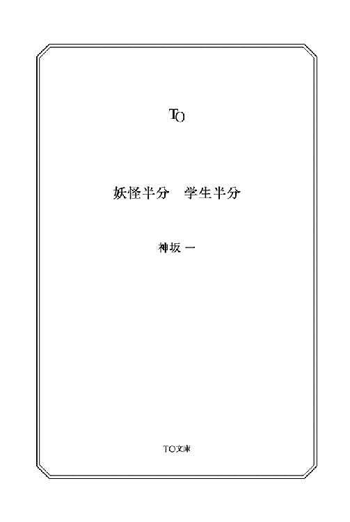

| 妖怪半分 学生半分 (TO文庫) | |
| 神坂一 | |
| (2014) | |
不思議な幼い女の子・マキと出会った大学生・稀綱(きづな)は、謎のおんぼろアパートに連れて行かれる。 だが、その一室では妖怪たちが暮らしていたから大変。おまけにマキの育ての親・納戸婆からは「人間の世界のことを教えてやってくれ」と頼まれる始末。その日から、常識が吹き飛ぶ、波乱の毎日が始まる！

妖怪半分 学生半分
考えてみれば。
あの時、振り返らなければどうだったのだろう。あるいは気づかないでいれば。
小牧稀綱はあとになってそう思う。
彼は普通が好きで、平穏が好きだ。
もちろん小中学生の頃は、マンガやアニメの戦う主人公のようになりたいとあこがれたことはあるし、大学生になった今だって、アクションやサスペンスもののドラマや映画は楽しんで見る。
しかし──もしも自分がその主人公になりたいか、と問われれば、自信をもって即答できる。
まっぴらです。勘弁してください、と。
普通で平穏なのが一番なのだから。
けれど彼はその時、気づいてしまった。
自分が、自販機の釣り銭を取り忘れていたことに。
夕暮れ刻の住宅街。
人通りのない町並みも、道ばたにぽつりと置かれた自動販売機も、みんなみんな茜の色に染まっていた。
民家の塀から伸びた庭木の枝が、ゆるやかな風に揺られてさわさわと囁く。
人によっては郷愁を誘われ、人によっては不気味な何かを感じるかもしれない。
だがそこに。
真剣きわまるまなざしで、自動販売機の釣り銭返却口に指を突っ込んでがちゃつかせている子供という異物が一つ加わっただけで、いろんな感傷が全部ひっくり返る。
「なあ」
稀綱が声をかけると、子供は、びくんっ！ と跳ねるように身を起こし、目を丸くして彼を見やる。
ちっちゃい。小学校に行っているのかいないのか、という頃だろう。女の子だとは思うのだが、ジーンズ穿きなのでひょっとしたら女の子顔の男の子かも......いやそれはないか。よく見ればポニーテールだし。
その右の手は、しっかり何かを握っていて。
「それ、俺の釣りなんだけど」
あれやこれやと考えながら自動販売機で缶コーヒーを買い、数歩行ってから、ほうり込んだのが百円硬貨二枚だったと気がついて──
振り返れば、子供が釣り銭をパクろうとしていたわけである。
しかし、今まであたりには誰もいなかった気がするし、ふり返るまで、返却口をがちゃつかせる音も聞こえなかったはずだが......そんなことにも気づかないくらい、自分は思い悩んでいたのだろうか？
「おお!?」
呼びかけに、子供はなぜか驚きと感動にきらめくまなざしを稀綱に向けて、
「たつじん!?」
「た......達人？」
とっさに頭の中で『達人』という字を当てるが、意味がわからない。
思わずのおうむ返しに、しかし少女は興味津々のまなざしで、こくこく何度もうなずいて、その反動で、頭の後ろで短いポニーテールがぴょくぴょく跳ねた。
......意味はわからないが、とにもかくにも。
「いや、俺はタツジンじゃないけど」
「じゃあ、れーのーしゃ？」
「なんで!?」
さすがにこれに当てはまる漢字は、霊能者、しか浮かばなかった。
「だってマキに気づいたし」
「へー。じゃあマキちゃん幽霊なんだ」
マキ、というのはたぶんその子の名前なのだろう。
適当に話を合わせたつもりが、少女は、ぷぅっ、と頬をふくらませ、
「ゆーれーじゃない！」
正直、ノリがわからない。
「とにかくそれ、俺の釣りなんだけど」
「んー......？」
マキは困った顔で、小さなてのひらに載った小銭を眺め──
稀綱は無言で眉をひそめた。
釣りは八十円のはず。しかし少女が眺めるてのひらの上には、百円玉を含めた額がじゃらりと載っている。
「......でも......カネダマが......」
「カネダなんて奴のことは知らないけど、人のお金をとるのは泥棒だぞ」
「......どろぼう......」
子供のうちから善悪の教育はしっかりと。稀綱が言うと、マキはすごく困った顔でこちらの顔を見つめ──
「──そうだ！」
その表情が笑みに輝く。
「じゃあ、かえしていいかどうか、きくからついて来て！ それならおっけ！」
「いやＯＫじゃねーよ」
幼女のあとについて行く大学生の男。のんびりとした昔ならとにかく、いろいろと物騒な今日びは通報モノである。
相手の親が、モンスターペアレンツなどと呼ばれるたぐいのイタい人だったなら、誤解が誤解を呼んでややこしい事態にもなりかねない。
ゆくゆくは地方公務員になって平穏な生活を送る、という壮大な夢を抱く稀綱としては、将来どう評価されるかも考えると、さすがにそういう事態は避けたい。
しかしマキは、そんな稀綱の心中も知らず、さも当たり前のようにくるりときびすを返してすたすた歩き──足を止めて肩越しにふり向くと、
「はやく！」
なぜ催促されてるかな俺。
釣り銭が惜しくないとは言わないが──
「──いや。いいわ」
言い捨てて稀綱はくるりときびすを返し、マキが向かっているのとは逆、自分のマンションの方に向かって歩き出した。
「え......？」
不満の声に続き、とてとてと小走りの足音が後ろから近寄ってきて、
「おつり、ボロい服のにーちゃんのなんだよね？」
「ボロい服ゆーな！ これはダメージジーンズってファッションなの！」
言えばマキは、小走りについて来ながら首をかしげて、
「......じゃあ、あたまボサボサにーちゃん」
「無造作ヘア！ キヅナって呼んでくれ！」
「キヅナにーちゃんのおつりのこと、そーだんしないと」
「いいから。そういうの」
「よくないよ。それじゃああたし、ドロボウだもん」
と、困った声。
じゃあ八十円くらいやるよ──と言うのもシャクで、黙っていると、
「──そか！ じゃ、こうしよう」
快心の閃きを声にあふれさせ、小走りの足音が稀綱を追い越した。
マキは一瞬、肩越しにちらりとドヤ顔を見せると、スキップでもしかねない足取りで先を行きはじめた。
どういうつもりか知らないが、稀綱は家に帰るだけである。気にしないようにしながらも、先を行く子供の背中はどうやっても目に入る。というかそれより人の目が気になる。めちゃくちゃ気になる。どうか自分が変な人に見えていませんように、と内心祈るが、幸いあたりには他に通行人の姿はない。
都会と名乗るのはおこがましいが、田舎と呼ぶほど不便でもない。この山背はそんな所だった。
稀綱の通う大学があり、新しいマンションやアパート、ファミレス、コンビニ、いろんな商店などもある。一方、駅や大きな道ぞいから外れると、昔ながらの住宅街になっている。
このあたりはその住宅街。夕食の買い物に行き帰りする人たちの姿くらいはありそうなものだが、今は誰もいない。
ほどなくマキは通りの角を右──稀綱の帰り道と同じ方へと折れる。たまたまなのだろうが微妙な気分だった。
しばらく行って今度は左──また同じ。まさか実は思っていたより近所に住んでいたりするのだろうか？
ほどなく右でまた同じ──
「──え──」
足を止め、思わず稀綱は声を漏らした。
どこだ、ここは。
間違いなく、自分は帰り道を辿っていたはずだ。だというのに。
目の前にあるのは見知らぬ町並み。夕日の中に普通の民家が建ち並び、絵に描いたようなおんぼろアパートが、階段の手すりにサビを浮かせて佇んでいた。
こんな場所、稀綱は知らない。
稀綱がこの町で暮らしはじめてから一年程度。まだ知らない場所はいくらでもあるし、住み慣れたつもりの場所でも、いつも踏み込まない路地を進んだそのとたん、見慣れない風景に出会うことはある。
しかしこれは、そういうのとは違う。
間違いなく、自分が住むマンションに向かう道をたどっていたはずなのに、知らない場所に着いたのだ。あわてて後ろをふり向けば、そこにはやはり見知らぬまっすぐな道。たった今曲がったはずの角さえない。
なおかつなぜかあたりには、稀綱とマキの他には誰もいない。
立ちつくす稀綱の手を小さな手が握る。
目をやれば、こちらを見上げるマキの笑顔。
「行こ。ばあちゃんが待ってる」
「え？ え？」
引かれた手に、抵抗せずについて行ったのは混乱ゆえか。
少女は迷わず目の前のおんぼろアパートに向かった。壁にアパートの名前が書かれているのだが、かすれ汚れて読めもしない。
鉄の階段を踏み鳴らし、黄昏に靴音を響かせて、二階の共用通路に。面して並んだ茶色い木のドア。その四枚目でマキは足を止めた。
「ここだよ。あがって」
ノブをがちゃりと回してドアを開ける。カギもかかっていないのは物騒だな──と思いつつ、中を覗けば、玄関土間からまっすぐ伸びる廊下。
「──は──？」
またまた漏れる疑念の声。
廊下が長い。
外から見た建物の奥行きよりも。
ありえないのだが、実際そういうふうにしか見えないのだ。たぶん何かの錯覚だとは思うが。
──どうなってるんだ？ これ？
そんな好奇心が起きたのと同時に。
「さ。上がって。──ばーちゃーん！ おつり、かえしてほしいって人、つれてきたー！」
マキは先に上がると、廊下に面した一番手前の襖を開けて、大きな声で呼びかける。
──稀綱が靴を脱いだのはなぜだっただろうか。
やっぱりお釣りが返して欲しくなったのか。建物より廊下が長く見えるしかけを知りたくなったのか。それとも、わけがわからずに何も考えていなかったのか。稀綱自身でもよくわからない。
靴下を通して伝わる、板張りのひんやりとした硬さ。
古くなった木のにおい。
廊下には飾り気も家具のたぐいもなく、襖やドアを数えれば、左右三つずつの部屋があることになる。──けれど考えてみれば、右はとにかく左はアパートの別の部屋のはず。
どうなっているのか興味はあったが、すぐそこの部屋の入り口でマキがこちらを待っている以上、無視して調べるわけにもいかないだろう。
仕方なく、誘われるままそちらにゆくと、マキは襖を開けたまま部屋へと入る。稀綱も続いて──
自分の頭上に？マークが浮かんだのが、これで一体何度目なのか、もはや数えるのも馬鹿馬鹿しい。
八畳ほどのがらんとした和室。
家具のたぐいも一切なく、あるのはただ、天井からぶら下がった、引きヒモ付きで古くさいデザインの蛍光灯だけ。それも今は灯っておらず、窓からさし込む紅い夕日が畳を焼いていた。
マキの言った、おばあさん、とおぼしき人などどこにもいない。
「誰もいねーじゃん」
「あ。こっちこっち」
マキは押し入れの襖に手をかけ、がらりと大きく引き開けた。
とたん。
「ぅわをっ!?」
稀綱は思わず声を上げて身を引いた。
中板で上下二段に分けられた、ごく普通の押し入れ。その上段に、くたびれた着物姿の老婆が座っていて、マキが襖を開けた瞬間、にょろりとした動きで下段に移動したのだ。
びっくりした。というかキモい。今の動きに何の意味がある？ よもや自分をびっくりさせるためだけに、ずっと押し入れで待機していたのか？
どん引きする稀綱をそばで眺め、マキは小首をかしげて、
「ひょっとして、なんどばば、見るの、はじめて？」
「何度......？ え？」
「納戸婆じゃよ」
と押し入れ下段から、ひょこりと顔を覗かせて老婆が言う。
「わからぬなら......あたしが言うても信じんじゃろうから、ググりな」
「......あ。はあ」
よくわからぬままに稀綱はスマホを取り出し、検索サイトで調べると──
納戸婆
納戸に住んでおり、人をおどろかす。納戸から飛び出して床下に逃げ込むという、人を驚かせるだけの妖怪
「......なるほど......」
稀綱は呻くようにつぶやいた。
妖怪なんているわけないとは思うのだが、目の前の相手が人をびっくりさせるだけの妖怪なのと、自分を妖怪だと信じ込んでいる危ない人なのとではどっちが怖いだろう、と考えて、とりあえず妖怪説を信じてみようと努力する。
「えっと」
そんな稀綱にはかまわずに、マキは自称納戸婆に向かって、
「おつり、キヅナにーちゃんのだって。カネダマのじゃないの？ 返した方がいい？」
カネダマって誰だ、とは思うが、うっかり訊けば余計にややこしいことになりそうなので黙っておく。
自称納戸婆は押し入れ下段の襖の陰からじろじろ稀綱を眺め回しつつ、
「ふぅん......けどその坊や、よくお前に気付いたねぇ。武芸の達人か霊能者かい？」
「ちがうって」
「ほう......ひょっとするとこれも、何かの縁かねぇ......
キヅナ、とか言ったかい？ あんた、よかったら、うちのマキにいろいろ教えてやってくれないかい？」
またわけのわからないことを言われる。
「あの。」
「実はこの子は人間でねぇ。もう何年かしたら小学校ってのに通わせなくちゃあいけない頃なんだよ。ただどうしても、普通の人間の子とはズレてるところがあるみたいなんだよねぇ。あたしら妖怪は、知識を手に入れることはできても、どうやっても人間とは、なんていうかねぇ、感覚のズレってもんがあって。何が人間にとっての普通なのか、今ひとつよくわからない所があるのさね。どうやらマキも、ちょいと普通じゃない所があるみたいなんだけど、どこがどう変なのか、どうなおしたらいいのか、あたしらにゃあどうにもわからない。そこで、あんただ。どうだろうね、うちのマキに、人として何が普通で何が普通じゃないのか、教えてやっちゃあくれないかね？ なぁに、始終つきっきりで、ってわけじゃあない。何かの折に、そっちの手が空いている時にでも、ちょいちょい注意してくれる、そんな程度でいいんだよ」
「ま......まあその程度なら。どれだけ力になれるかはわかりませんけど」
「本当かい？ いやぁ、そりゃあ助かるよ」
「いやぁ。ははは」
言って稀綱は頭を掻く。
もちろん。
まるッきり口から出まかせである。
何が悲しくてわけのわからない子供の教育なんてやらなければならないのか。
とはいえ稀綱は、自分を妖怪だと主張する人の頼みに面と向かってノーを返すほどのチャレンジ精神は持ち合わせていなかった。
ここは適当に話を合わせてごまかして退散するのみ！
──そんなこんなで──
適当に話を聞き流しつつあいづちをうち、なんのかんのと理由をつけて、稀綱がその部屋から脱出できたのは、三十分ほど経った頃だっただろうか。
振り返りもせず足早にそこを出て、いくらも行かないそのうちに、なぜか見知った道に出て、無事、自分のマンションに戻ったのだった。
──疲れた──ああいう人もいるんだなぁ──
ぐったりしながらエレベーターで三階へ。部屋は一番奥の三○六。精神的に疲れたせいか、共用廊下がいつもより長く感じた。
玄関ドアを開けて入れば、そこはなじんだ板張り六畳の二部屋。都心部だとそれなりの家賃なのだろうが、このあたりなら親の仕送りでなんとかまかなえる。
部屋に戻って一息ついて。冷蔵庫からペットボトルの水を取り出すとキャップをひねり──
「──っと！」
手元が狂って少しこぼした。あわててローテーブルの上、ティッシュの箱に手を伸ばし、しかしその中が空なのに気がついた。
たしかまだ買い置きのぶんがあったはず。稀綱は奥の部屋に行くと、押し入れの襖に手をかけ──
開けた。
そこには、ちょこんと正座する、さっき出会った自称納戸婆。
........................
思考が一瞬、固まって。
「のびゃぁぁぁぁぁっ!?」
わけのわからない悲鳴を上げて飛び退くと、押し入れ上段の老婆はするりと流れるように下段に移動し、
「ああ坊や、ひょっとしたら信じてないかも、って思ってねぇ。それで一応、あらためてごあいさつ、ってわけさ」
老婆はフランクに言ってウインク一つ。
「隣に越して来たんで、くれぐれも頼んだよ、マキのこと。じゃあよろしくねぇ」
言い放ち、中からぴしゃり、と押し入れの襖を閉めた。
「..........................................!? !?」
稀綱は一人暮らしの自分の部屋で、たっぷり三十と四秒の間固まってから、ようやくおそるおそる目の前の襖に手を伸ばし──
開ける。
そこには上段に少しの布団と、下段にティッシュ箱やら段ボール。もちろん老婆などはどこにもいない。
「......ええっと......」
静寂に耐えきれず、わざと漏らした意味のないつぶやき声は、自分でもはっきりわかるほどふるえていた。
「......いやいや......ないない......妖怪とか......今の時代は科学だし。科学スバラシイ科学ステキ」
小声で必死に自分を説得する。
そうそう。あるわけない。妖怪とか。そんな非科学的でナンセンスなものがいて、ましてや隣に──
「となりにっ!?」
たった今老婆が言った言葉を思い出し、稀綱は思わずすっとんきょうな声を上げた。
隣に越して来た。
たしかにそう言っていたような──
胸の奥が不安にざわつく。
もちろん稀綱は妖怪なんていうものを信じていない。信じたくない。
けれど──
ひょっとしてひょっとすると──
気がつくと、稀綱は玄関を飛び出していた。マンションの共用廊下を駆けて隣の家のドアの前。部屋のプレートを見ると、部屋ナンバーが、
三○五．五
「てんごっ!?」
思わず上げたその声に、ドアの中で気配が動いた。
立ちすくむ稀綱が何かの行動を起こすより早く。
玄関のドアが大きく開き、中から飛び出して来たものが稀綱の足にしがみつく！
「うわっ!?」
よろけかけて見下ろせば、こちらを見上げる相手と目が合う。
「こしてきたー！」
稀綱の足にしがみつき、マキはなぜか、むやみに楽しそうな笑顔を浮かべていた。
◇ ◇ ◇
大学敷地の背に山が近い。
どこぞの運動系サークルのかけ声を遠いＢＧＭに聞きながら、稀綱は教授室のドアをノックした。
「──はい」
ドアのむこうからは聞き覚えのある声。
「あの、小牧です。掲示板で呼び出されて......」
「入りたまえ」
言われるままにドアを開けて、稀綱は部屋に足を踏み入れ──ることができなかった。
目に映るのはただ、うずたかく積み上げられた本の山。壁際に棚に床に高く低く、古書がハードカバーが新書が文庫が、まるで全てを拒絶する塔のように壁のように重なりそそり立っている。
全てを阻む本のせいで、部屋の主──民俗学を受け持つ哉瀬教授の姿は完全に隠れていた。
しかし、ここにどう入れというのか。
──いや、よく見れば。
本が重なる塔と塔、壁と壁とのその間に、まるで闇に射す一条の光のように、ささやかな隘路が折れ曲がりながら続いている。
とはいえ本の塔を崩すことなく、これを奥に進むのは──
「ああ。奥まで来ないでくれたまえ。慣れない者が通ると本が崩れる。入った所でドアを閉めて聞きたまえ」
「あ。はい」
それならばなんとかなる。稀綱はドアをくぐった先、半畳にも満たないスペースで立ち止まると、後ろ手にドアを閉めた。
「きみのレポートを読んだのだが──」
「あ、はあ......」
「良くないねえ。あまり感心しない」
「......すいません......」
ずばりと言われて、しぼんだ声を出す。
呼び出された、ということは、いい話ではないだろうとは思っていたが。
あまり深くも考えずに選択した民俗学の講義。レポートも適当な感じでやっつけたのだが、思ったより甘くはなかったようだ。
「ネットからの丸写しが多すぎる。ネットを『活用する』のは構わないが、『丸呑みにする』のはいただけないねぇ」
「はい......」
よくわからなかったが、ネットの記事を切り貼りしまくったのは事実なのだから返す言葉はない。
「きみは各地における祭りの風習をレポートのテーマにしようとしているが......残念だが全く向いていない。妖怪をテーマにしたまえ」
「なにゆえッ!?」
さすがにその無茶振りには稀綱も即座に言葉を返した。
対する教授の声は淡々と、
「各地の祭りというが、学生が個人で日本各地の祭りの現地調査をするのは難しいだろう？ 畢竟、書籍やネットの情報に頼らざるを得なくなってくるが、その場合、書いた人間の視点や主観というバイアスを外すことはできない。きみ独自の観点を持つことは難しいだろう」
「確かにそうかもしれませんけれど......だからって、なんで妖怪なんですか!?」
「ふむ」
本の城壁はしばし沈黙してから、
「私の姪がこの学校にいてね。妖怪に関する研究をしたがっているのだが、それに人手が欲しくてね。そこできみに手を貸してもらいたいと思ってね」
「ぶっちゃけた!?」
「世の中、ある程度ぶっちゃけた方がうまくいく、ということは案外多くあるものなんだよ」
そんなもの──なのだろうか。
「いずれにしろ、今のきみのレポートではちょっと、という所は事実だからね。共同レポートという形ならきみにとっても損な話ではないだろう？ 無論きみ自身が、妖怪ではない別のテーマをちゃんと選んで、今度はしっかりとしたレポートを提出する、という形でもかまわないんだが──どうするかね？」
稀綱は早速言われた通り、思い切ってぶっちゃけてみる。
「わかりました。協力します。俺としても教授に気に入られた方が今後いろいろ有利ですし、レポートもその姪っ子さんに頼っておんぶにだっこでこなして行ければ楽ですから」
「......いや、そこまでぶっちゃけるのはさすがにどうかと思うけれどね」
せっかくぶっちゃけたのになぜだかダメ出しされてしまう。さじ加減というのはどうにも難しい。
「しかし何にしろ引き受けてくれたのは助かるよ。姪っ子には──名前は槌雲閑というんだけれどね、こちらから話を通しておくよ。そのうちきみに会いに行くだろうから、その時はよろしく頼むよ。私からの話は以上だよ」
以上──とは言われたが、稀綱には、どうしても気になることがあった。
「あの......」
「何かね？」
「どうして俺なんですか？」
二日前、自称妖怪に子供の世話を頼まれて、そして今日、妖怪マニアの手助けをしろと頼まれる──何かの作為があるようにしか思えない。
まさか教授までが自称納戸婆とグル、などということはないだろうが、そこは確かめておきたい。
「......ふぅむ......」
教授の声に逡巡の色。やはり──何かあるのだろうか。
「教えてください。お願いします」
「......聞きたいかね？」
「はい！」
「どうしても？」
「ぜひ！」
「......きみのレポートがピカ一にヒドい出来だったから、むしろ救済措置のつもりなんだがねぇ......せめてコピペの痕跡を消すくらいの努力はしてほしかったな」
「姪御さんのお手伝い、頑張らせていただきます！ 失礼します！」
あわてて一礼。部屋を出て、そういえば提出したレポート、ネットの記事を切り貼りしたあとで読み返しもしなかったな、と思い出す。
自業自得ではあるのだが──
「......めんどくさいことになりそうだなぁ......」
小さな小さなつぶやきを、稀綱はため息に乗せた。
「おかえりー」
「めんどくさいことになってる!?」
自分の部屋のドアを開け、稀綱は思わず声を上げていた。
おかえり、の声をかけてきたのは、部屋のローテーブルのそばで、同い年くらいの女の子といっしょにくつろいでいたマキなのだが──
もちろん、マキを招き入れたおぼえもないし、ドアにもカギはかけておいた。
稀綱の反応に、マキは眉を吊り上げて、
「『おかえり』って言ったら『ただいま』だよ！」
「いやそれ以前に！ なんでお前ここにいる!?」
「ヒマだったから」
「そんなことは訊いてねえっ！ どうやって入って来たかって話だっ！」
「ああ。それなら」
マキはすたすたと奥の部屋に。押し入れを開けて中へと入り、襖を閉めて──
待つこと数秒。
「じゃーん♪」
ドアの開く音とマキの声は部屋の奥ではなく横手から。見れば共用廊下の先、隣の部屋のドアが開き、得意げな顔で両手を大きくひろげたマキの姿がそこにはあった。
「..................」
稀綱は靴を玄関土間に脱ぎ捨てて、どたどた一気に奥の部屋へ。押し入れの襖をすらりと開ければ、
「どうだい？ あたしにかかればざっとこんなもんさね」
親指を立てた納戸婆。
「あ。あ。あああああああ。」
稀綱がその場にひざをついた理由は、驚きか呆れか恐怖か脱力か。
「もー」
無視されたマキがふくれっ面で玄関からまた入って来るが、かまっている精神的な余裕はない。稀綱はよろよろと顔を上げ、目の前でドヤ顔満開の納戸婆に向かって、
「......どーゆー理屈ですか、これ？」
訊けば納戸婆は、上段から下段に、にょろりっと移動してから、
「あたしゃ『収納庫に出て人をびっくりさせる妖怪』だからね。そこさえきっちり押さえておきゃあ、あんたをびっくりさせるために、マキを抱えてこっちの押し入れとあっちの押し入れを行き来するなんて造作もないことさ」
もう。これは。なんというか。
稀綱の中で何かが振り切れた。
「理屈はどうでもいいいぃぃぃぃぃッ！」
いきなり立ち上がって叫ぶ稀綱に、納戸婆はいくぶんひるんで、
「ええええっ!? そっちが理屈を訊いて......」
「知るかッ！」
かまわず稀綱は吠えた。
「あなたの妖怪っぽい手品でやりました！ はいそりゃあすごいですね！」
「手品じゃなくて妖......」
「問題はッ！」
抗議を遮りまくし立てる。
「マキに人間らしい常識を身につけさせろって言うんならっ！ なんでそーいう、普通の人間にはできない非常識なことをやってみせるかなって話なんですっ！」
いきおいで、マキにちゃん付けを忘れているが、当人は気づいていない。
「普通の人間は納戸婆式瞬間移動なんてやらないからッ！ こっちには教えさせておいてあんたはお手本にならないことばっかりやってみせる、って、全っ然説得力ないわぁぁぁ！」
「......そ......そういうもんかい......？」
いきおいに押されてひるむ納戸婆。ここぞとばかり稀綱は、今度はマキと一緒にいた見知らぬ女の子を指さして、
「そーいうもんですっ！ それとっ！ その子──」
言いかけて、動きが止まる。
黒髪で、白いワンピースの、見た目はごく普通の女の子。
その子は何なんだ、と問おうとしたのだが、ふと思ってしまったのだ。
幸せをもたらす子供の妖怪、座敷童、とでも答えられたのならいいだろう。
だがもしも、調べたらコワいことが書いてあるような妖怪の名前を挙げられたらどうしよう──と。
もちろん稀綱としては、ことここに至って頑なに、妖怪なんていない、と信じようとしているのだが、それでもコワい妖怪の名前を言われたらイヤである。
指した指をへにゃりと曲げて、
「その子は──つまり、マキの友達、っていうことでいいんだな」
「そーだよ」
マキはとてとて駆け寄って来て、女の子にぎゅっとしがみつき、
「ともだちのサダちゃん」
「ああああああもおおおおおおなんか心当たりのある名前だあああああ！」
ひとしきり頭を抱えて悶絶してから、とりあえずそこには触れないと堅く決意し顔を上げ、一同をぐるりと見回して、
「──とにかくっ！ 押し入れを使って俺の部屋に勝手に入るのは一切禁止！ わかった!?」
サダはこくりとうなずいて、マキは、
「えー」
と、不満顔。納戸婆は手を上げて、
「なら天井裏からなら──」
「アウトだっ！ 壁とか窓とか床からとかもっ！ 勝手に入るの全面禁止っ！ 人ンちに来る時は玄関から！ チャイム鳴らすかノックして！ 相手が入っていいって言ってから入るっ！」
叫んで肩で息をする稀綱に、
「まーまーキヅナにーちゃん。ごめんごめん、わるかった」
本当に反省しているのかいないのか。マキは軽い口ぶりで、
「おわびにこんど、にーちゃんのすきな、むねのでっかい女しょーかいするから、そうおこるな」
「え？ む？ 胸？ え？ 何？」
意味がわからず混乱するのに、マキはそばのグラビア本を持ち上げて、
「にーちゃんが、おしいれにたいせつにしまってた、この......」
「にゃぶるばっ!?」
稀綱は光にすら届く速度で、マキが手にした彼の愛蔵本を奪い取り、手近にあった座布団の下に隠して上に仁王立ち。
「人の家にあるものをあさるのも禁止だっ！ 人としてっ！」
顔が熱いのは怒りなのか恥ずかしさなのか、もう自分でもわからない。
「えー」
わかっているのかいないのか。マキの気楽そうな表情からはなんとも判別できないが。
一方サダちゃんの方はおろおろしながら、マキの服のすそをくいくい引っ張って、
「だ......だめだよマキちゃん、キヅナおにーちゃんをそんなふうにからかったりしたら......」
こちらはまだ良識があるのか、ひそひそ声──のつもりだろうが、丸聞こえにたしなめる。
「へたにシゲキして、おにーちゃんが、つるぺたさいこー、ってひとだったら、あぶないのはわたしたちなんだよ？」
「俺そーゆーシュミねーから！」
変な方向に耳年増なだけでした。
「......というかまあ......それはそれとして......」
稀綱はわずかに視線をそらして、
「おわびに胸の大きい女の人を紹介するとか言ってたけど......お前、本当に、そんな知り合いがいるのか......？」
「いるよー」
と無邪気にマキは言う。
「むね、おっきくて、赤いふく着てるー。なみだもろいー」
「いるのか？ 本当に？」
ちょっと期待を抱きつつ、確認の意味で納戸婆の方を見やれば、こともなげに、
「ああ。うぶめのことだね」
産女
お産で死んだ女の幽霊。出血で服を赤く染めてすすり泣いている
「絶対に紹介しないでください。お願いします」
スマホでググって確認したあと、稀綱は本気でマキに向かって土下座した。
「コマキキヅナくん──だよね」
声をかけられたのは、講義が終わって稀綱が大教室を出た時のことだった。
ふり向いた先にいたのは知らない顔。ふわふわしたキャラメル色の髪の毛をツインテールにまとめ、レース飾りのついたパステルカラーのトップスとブラウンのキュロット。
面識はないが、心当たりはあった。
「え？ あ、ひょっとして──」
「おじさんから聞いてるとは思うけど。槌雲閑。よろしく」
名乗って右手をさし出して来る。
姪ということだが、幸いなことに、哉瀬教授とは似ていない。
「あ。小牧稀綱、です」
つられて右手をさし出して──握手、かと思ったら何かを渡された。
ビニールの小袋に入ったそれを、てのひらに載せてしげしげ眺めて、
「......キャンディ？」
「お近づきのしるし」
「あ......ありがとう槌雲さん」
ノリがよくわからないが、とりあえず受け取っておく。
「わたしのことは閑でいいよ。ツクモって名字で呼ばれると、なんだかいろいろ落ち着かないから」
「落ち着かない？」
家庭の事情で姓が変わったのか、とも思ったのだが、彼女は複雑な表情で、
「ツクモって音は妖怪の付喪神みたいで嫌いじゃあないんだけど、漢字だと、打ち出の小槌のツチに空の雲って書くから、ツチグモとも読めちゃうし。あ、土蜘蛛っていうのは別の妖怪なんだけど──名字で呼ばれるたびにそんなことをつい考えちゃうから」
「そうなんだ」
どうしよう。見た目は結構好みなのに、妖怪好きすぎてちょっと引く。
「なら俺も稀綱でいいよ」
「じゃあ稀綱くん、このあと時間あるなら、エドゥアールかどっかで話、したいんだけど」
近所の喫茶店の名前を挙げて彼女は言った。
「いいよ。行こう」
稀綱にこのあと予定はない。二人はきびすを返して歩き出す。
「ごめんねー、おじさん経由で無理言って」
閑は片手でおがむしぐさでウインクしながら、
「おじさん、こういう所では融通きかせてくれるのに、成績はおまけで上乗せとかしてくれないのよねー」
「教授らしいなぁ」
言って稀綱は苦笑い。
「けど俺でいいの？ 言っちゃあなんだけど、そんなに妖怪にくわしいわけでもないし......うちの大学も、探せば妖怪好きの奴くらい、何人かいそうだけど」
「たしかにここにも、妖怪研究サークルってあるし、すっごい妖怪の知識がある人もいるよ。実を言うとわたしも一応そのサークルに所属はしてるんだけど──」
正門の方に向かって歩きながら、閑は空のどこかを眺め、
「みんな現地調査ってやりたがらないのよねー。
調査名目で心霊スポット巡りに行く人はいるけど、それってただの肝試し以外の何でもないでしょ？
それなら、あんまり妖怪に詳しくなくても、ちゃんと調査につきあってくれる人の方がいいから」
「そういうもんなんだ」
男なら、閑みたいな子と一緒に出かける、という話だったなら、ほいほいついて行きそうなものなのに。妖怪好きの考えることはわからない。
どんだけインドア草食系なんだ、と稀綱は思ったりするのだが──
「わたしとしてはその方が、って話なんだけどね。あと──」
こんな変な知り合いがいる、という話から共通の知り合いの話。あれやこれやと語るうちにも二人は正門を抜け、近くの喫茶店へ。
重厚なブラウンカラーの内装で、壁のあちこちには、美術の教科書でも見かけるような絵のレプリカが飾ってあるが、あまり高尚な感じはしない。
学生客を見込んだのだろう、わりと大きな二階建て。その見込み通りに客の大半が学生で、時々あちらこちらから、バカ笑いが起こったりもする。落ち着いた空気ではないが、気兼ねせずに長居はできる。
笛を吹く少年の絵が壁にかかったテーブル席に二人は陣取り、あれやこれやと雑談し、話が一周回って妖怪のことになり──
「──そういえば、閑さんって──」
ふと、稀綱は訊いてみる。
「妖怪って、いると思う？」
もちろんこの時、稀綱の脳裏にあったのは、隣に暮らす自称納戸婆とマキのこと。
妖怪ではなく自称妖怪だとは思いたい。当人がそう思い込んでいるだけで、押し入れ移動はマジックだし、突然隣に三○五．五号室が現れたのだって、稀綱が留守の時に匠がリフォームしたに違いないのだ。大丈夫。全部科学で説明できる。
とはいえ、自分のその仮説に、ちょっぴり無理があるような気がするのも事実。妖怪好きの閑に、いるわけない、と笑い飛ばして、納得のいく説明をしてもらえたら安心できると考えたのだ。
「んー......」
カラになった紅茶カップのふちを指先でなぞり、閑はまなざしを遠くに送ると、
「いるかいないか、で言えば、たぶんいないんでしょうね。
──まあ、いてくれた方が面白いけど」
冗談めかして言った笑顔は、けれどもどこか寂しげで。
なんだか悪いことをしたような気になり、元気づけるつもりで冗談めかして、
「じゃあ、もし本当にいたらどうする？」
「捕まえる！」
「え。」
うってかわってきらめく笑顔で即答されて、まばたきをする稀綱に、
「あ。誤解しないでね。もちろん捕まえるって言ったって、見世物とか実験とか解剖とかそんなかわいそうなことをしないよ？ ただ愛でる。やっぱりこれよね♪ 人に害がない妖怪なら種類にもよるけど触ったりいっしょに寝てみたり、話ができるならいろいろ聞いてみたいし、あくまでＣＧで作ったってことにして、写メや動画をアップして、みんなの反応を見るのも面白いかも。一人で楽しむかみんなにおひろめするかって迷う所よね。妖怪が本当にいるなんてわかったら大さわぎになっちゃうからそれは論外なんだけど、いっしょに旅行なんかもしてみたいわけだし──あ、けど実家に帰る時とかどうしよう。連れて帰るわけにはいかないだろうけど、一時預けられる妖怪ホテルなんてないし──」
閑は滔々と、自分と妖怪の妄想蜜月ライフをまくし立て続ける。
そんな話を笑顔で聞き流しながら。
──ひょっとして俺、ハズレくじ引かされた──？
稀綱は心の中で、こっそりそんなことを思ったのだった。
──なるほど──
その翌日。
閑と一緒に現地調査を開始して、稀綱は心の底から納得した。
二人が訪れたのは、大学と稀綱のアパートがある山背駅から電車でひと駅、快速も停まらない隣町。そこから歩いて十五分ほどの所にある一戸建てだった。
前は旧家然たる家だったというが、五年ほど前に建て替えて、今は普通のコンクリート住宅。
閑が役所経由で、昔から住んでいる人にアポを取ってくれていたのだ。妖怪にあまり詳しくない人の意見も知りたいので、相手の話はちゃんと聞いていて欲しい、との閑の要望だったが、早い話、稀綱は単について行くだけ。正直、こんなに楽でいいのか、とさえ思ったものだ。
──客間に通され茶と茶菓子を出され、御年九十一歳のトネさんが話をはじめる時までは。
「──このケンゾーさんは若い頃からずぅッと大工さんやってる人でな、これがまぁえらい酒飲みで酒飲みで──」
こにょこにょと語り続ける老婆の話を聞きながら、稀綱はこっそり自分のふとももをつねり続けていた。
こう言ってはなんなのだが──
ものすげぇ退屈だった。
考えてみたら、普通のお年寄りの昔話である。脱線や説明不足は当たり前。起承転結や盛り上がりどころか、オチさえあるかどうかも疑わしい。
しかし話がつまらないからといって、まさか即座に帰ったりスマホをいじったりするわけにもいかない。そこはさすがに人として。
閑が言っていた妖怪サークルの面々が調査につきあいたがらないのに、稀綱は心の底から納得がいった。
ＴＶやなんかで、普通に面白いドラマや物語に慣れた身に、これはツラい。
意見を聞く、と言われている以上、別のことを考えて気をまぎらわせるわけにもいかない。ＩＣレコーダーで記録しているから、あとで確認することはできるが、コレを何度も聞き返すのはイヤすぎる。
つまりは、がまんしてちゃんと聞くしかないのだが──
トネさんの話は、若い頃、寄り合いに出かけた時のものだった。
そこにいたさまざまな人たちの人物像や家族構成、いろんなエピソードや寄り合いの議題が語られて、それらがどう話にからんでくるのかと思っていたら、何事も起こらず寄り合いが終わって帰路につく、という展開を見せていた。
聞いている稀綱としては、今までの話は何だったのかと脱力感がハンパない。帰り道、ぽっかりと空にかかった満月が綺麗でしたかそうですか良かったですね。
ちらりと横目で見てみれば、閑は興味津々聞き入っている。この話に興味が持てるというのは心底すごい、と、変な感心をしてしまう。
時々ふとももをつねってはみるものの、睡魔はそろりそろりと忍び寄り──
「......なんや知らんけど、うちの隣に知らん家がもう一軒建っとるんよ。寄り合いに出かける前にはキュウリの植わっとる畑やったのに──」
「隣に一軒!?」
とたん、目が覚める。
急に食いついた稀綱に、閑とトネさんが驚きのまなざしを向けるが、そんなことは関係ない。
俺も最近似たようなことがありました、とはさすがに言えないが、ここはくわしく訊いておきたい。
「出かける時にはなかった家が、ですか!?」
一瞬とまどったトネさんだったが、稀綱が話に興味を持っていると知ると、身を乗り出して、
「そうそう。なんもなかった所にうちと同じくらいの大きさの家があったんやから、そらぁもうびっくりしたわな」
「どんな感じの家でした!? 誰か住んでましたか!?」
「そら気持ち悪い家やったよ。おんぼろ云うわけやなかったけど、玄関のすりガラスからは、奥の方のぼーんやりとした光がにじんどって。蛍光灯やない、電球とかロウソクとか、そんなかんじの赤ぁーい光やったわ。それがもう気持ち悪ぅて気持ち悪ぅて。急にそんな所に家があるだけでも嫌やのに。誰か住んどるかどうかなんて、怖ぁてよう確かめんわ。おとうちゃーん！ 云いながら自分の家へ飛んで帰って──」
いつの間にか。
退屈だったはずのトネさんの話に稀綱は聞き入っていた。
「マヨヒガの話の変形ね」
「まよひが？」
話を聞き終え、トネさん宅を辞したあと。
閑はなぜか上機嫌で言った。
昔、知らない家が突然現れたという場所も、今では普通の家が建っていて、庭では子供が庭木をいじって遊んでいる。
「迷いの家、って書いて、カタカナではマヨヒガ。まよいが、って発音するのが正しいのかもしれないけど」
「迷い家、か......」
遊んでいる子供がこちらに手を振って来る。ずいぶん人なつっこいなと思って見てみると。
マキでした。
「ちょっ......？ 稀綱くん大丈夫!? 貧血!?」
「い......いや......ちょっと......」
思わずひざが砕けかけ、よろめいて壁に手をつき、身を起こし。
「......お......お前......！ なんでこんな所に......？」
訊けばマキは、ムダに高いテンションで、
「えんせー！」
遠征、だろうか。
「え？」
隣で、なぜか閑のとまどいの声。
マキは、てこてこ近づいて来ながら、
「デートか！」
「違う！ 大学の研究だ！」
このままではついて来る。そんなややこしいことにはなりたくない。稀綱はすかさず先手を打った。
「ついて来たら、レポートの手伝い......字をいっぱい書いてもらうぞ」
「それは。いやだ。じゃ。」
とたんに興味をなくしたか、くるりと素直にきびすを返して、ふたたび庭木をいじりはじめる。
「......えっと......稀綱くん？ 今の子......」
「あ、ああ。──その、親戚の子なんだ」
とまどいながら訊く閑に、稀綱は適当なことを言い、話をそらそうと、
「それでその迷い家っていうのは？」
訊きながら歩き出し、駅の方へと向かう。
「あ、ええ」
閑はなぜかちらちらとマキの方に視線を走らせながらも、
「迷い込んだ山の中なんかに突然現れる一軒家で、中に入っても誰もいない。家の中にある食器か何かを一つ持ち帰ると幸せになれるんだけど、また同じ所を訪れてもそこには家なんてない......っていうのが基本パターンなんだけどね。
人里で隣に、っていうのは珍しいかも」
「そういうものなんだ」
「稀綱くんって迷い家の話に興味あるの？ 話に出て来たとたん、身を乗り出して来たけど」
「あ......いや、うん」
うちの隣にそれっぽいのがあるから、とはもちろん言えない。
とはいえ三○五．五号室は、いつまでたっても隣にあるから、それとは違うものかもしれないが。
言葉を濁して必死になって言い訳を探し、
「昔、そんな感じの話を聞いたことがあったような記憶がぼんやりとあって。何の話だったんだろうって思って、ずっともやもやしてたんだ。それが今日の話を聞いて、あ！ これだ！ って。わかってなんかスッキリした」
「あー。あるよね、そういうことって。
......ところで......」
ちらり、と閑は振り返る。つられて稀綱もそちらを見やるが、トネさんの家もマキの姿も、並んだ住宅に遮られ、すでに見えなくなっていた。
「稀綱くんがさっき話してた親戚の女の子って......どういう子なの？」
「え？ どういう、って......なんで？」
「んー......その......なんていうか......」
閑はとまどうように、
「わたし最初、そこに子供がいるって見えてたはずなのに、稀綱くんが声をかけて、あの子がしゃべるまで、なんて言えばいいんだろ？ 見えてるはずなのにいるって気づいてなかった、っていうか......」
「見えているのに気づかない？」
稀綱はおうむ返しにつぶやいた。
思い出す。最初にマキと出会った時。
あたりには誰もいないと思っていた──いや、誰かがいるとは思わなかったのに、ふり返るとマキがいた。
閑が言った状況は、その時とどこか似ている気がした。
「それってなんか、いるのに気にされず、いつの間にかいなくなってる妖怪、ぬらりひょんっぽいな、と思って。あ、ぬらりひょんっぽいって言っても、もちろんいい意味でだよ」
ぎくりっ、と、稀綱の肩が小さく跳ねる。
いい意味でぬらりひょんっぽい、というのが意味不明だが、そんな所にツッコミを入れている余裕はなかった。
マキは人間だという話だが、保護者の自称納戸婆や住んでいる部屋を含め、全体的に妖怪っぽいことは事実。
妖怪がいれば捕まえる、と迷わず即答する閑がそのあたりのことを知ればどうなるか──
稀綱の脳裏には、泣きわめくマキを小脇に抱えて拉致奪取。納戸婆の追跡をやすやす振り切り、目をきらっきらさせて逃げ行く閑の姿が容易に浮かんだ。
さすがに実際にはそんなことにはならないだろうが、ややこしいことにはなりそうだ。なんとかごまかす必要がある。
「目立たない子だ、って話は聞いたけど。ほら、クラスにも時々いない？ そんな奴いたっけ？ って人」
「んー......そんなに目立たない子には見えなかったけどなぁ」
けれど閑は納得のいかない顔で、
「なんて名前？」
「マキ、だけど」
「何マキちゃん？」
「──」
問われて稀綱は思わず絶句し、足を止めた。
それを閑は、自分に向けられた不快と捉えてか、
「──あ、ごめん。だよね。親戚の子を妖怪っぽいとか言われてしつこくいろいろ訊かれたら気分悪いよね。わたしはむしろ、ほめたつもりだったんだけど──」
──いやマキは十分妖怪っぽいと思います──などと答えるわけにもいかず。
「いや、気にしないで」
「......うん......」
二人はふたたび並んで歩き出す。
閑はいくぶんしょげた様子で、
「あーあ......人よりちょっぴり妖怪が好きなせいか、わたし、時々やらかしちゃうのよねー......前に奈良に行った時も、『元興寺まで×メートル』ってカンバンを、ナチュラルに『がごぜまで×メートル』って読んで思わずダッシュでそっちに向かってみたり......」
閑の反省だか世迷い言だかに、適当にあいづちをうって聞き流しながら、内心稀綱は動揺していた。
足を止めて絶句したのは、もちろん、閑の質問に気を悪くしたからではない。
気づいたのだ。今更ながら。
自分がマキのことを何も──名字すらも知らないことに。
「こういう字さね」
押し入れの下段で、納戸婆が筆ペンを置く。
横の半紙には、ムダに達筆でくろぐろと大書された、
大角麻記
の文字。
「おおかど・まき？」
「いい名前だろ？」
読み上げる稀綱に、納戸婆は鼻高々。
閑との現地調査の翌日、ちょうど大学が休みの日。
稀綱がコンビニにでも行こうかと玄関を出た所で、待ち構えていたかのように出くわしたマキに、三○五．五号室に引っ張り込まれたのだ。
押し入れの自称納戸婆に、今日こそはマキにみっちりと人としての常識を教えてやってくれ、と言われたのだが──
それでふと、マキのフルネームを訊いたところ、返って来た答えがこれだった。
正直言って、あまり深入りしたくないのだが、かといって、一切何も知らないままというのもまずい気がしたのだ。
何をどこまで訊いていいのか、迷うところではあるのだが。
そのマキは、稀綱の隣で身を乗り出して、自分の名前だと言われた漢字に興味津々見入っていた。
「自慢するってことは、納戸婆さんがつけた名前なんですか？」
「そうとも」
と、さらにドヤ顔。
稀綱はちょっと感心する。
「へぇ。ちゃんとした名前じゃないですか」
もっと完全にセンスのズレた名前をつけられている可能性も考えていたのだが。
「だろ？」
納戸婆がさらさら筆を走らせると、半紙にはやはり達筆で、
逢魔ヶ刻
「人が魔物に出逢うとされる夕刻、オオマガドキ、の字を並び替えてちょっといじくったのさ」
「由来がまがまがしいわっ！」
思わず稀綱はツッコむが、納戸婆はきょとんっ、として、
「なんでだい？ 妖怪のあたしと人間のマキが出逢うた、ということにちなんだ言葉じゃが」
「ふつーの人間は妖怪と出逢いたがらないからっ！ 逢魔ヶ刻って言葉の好感度あんまり高くないからっ！ そもそも──」
そもそもどういういきさつであんたとマキは出逢ったのか──
そう訊こうとして寸前で気づく。
この質問が地雷だということに。
納戸婆があくまで自称で本当は人間だったとしても。
逆に、ありえないとは思うが本当の妖怪だったとしても。
どちらにしろ、マキとの出会いというのがまともなもののわけはない。聞いてしまえば深みにハマる。
そこまで踏み込む度胸はなくて、あわてて質問の中身を変えた。
「......そもそも......
小学校に通わせる、とか言ってるけど、戸籍とか住所は大丈夫なんですか」
問えば納戸婆は思案顔で、
「戸籍は調達したんだけどねぇ」
調達て何だ、とは思ったが、やはりコワいので訊かない。
「住所の方は、書類上は問題無いとしても、何かの理由でお役人や先生に急に尋ねて来られると困るねぇ......何しろ迷い家だから、たどり着けるかどうか」
「迷い家って......ここが？」
やっぱり、と、心のどこかで思いながら稀綱は言った。
「そうさ」
「けど迷い家って、山の中にあって、もう一回行ってもない、ってもんなんだろ？ 食器を持って帰ると幸せになれるとかなんとか......」
「そりゃあ人間がわの解釈さね」
言う納戸婆のそばでは、マキが半紙に筆ペンで、犬だか猫だか妖怪だかわからないもののらくがきをしている。
「本来は、知っているつもりの知らない場所、どこにでも在ってどこにも無いものなのさ。
そういう意味じゃあ今は、山の中じゃなく街の中、知っているつもりの知らない場所──いつも通っているけれど、一度も入ったことのない路地の先、誰が住んでいるかも知らない集合住宅の隣室──そんなところにこそ迷い家はあるのさ。
あと、二度と行けないってのは間違いさね。人が迷い家にたどり着くには、家の方から受け入れる気にならなけりゃあたどり着けないもんなんだけど──道に迷って困ってるからと軒先を貸してやってるのに、勝手に家財道具を持ち帰るんだよ？ そんな奴ぁ二度と迎えたくない、って思うのは当たり前だろ？」
「なるほど」
妖怪の存在を認めるかどうかは別として、家財道具を盗むような奴は出入り禁止、というのは至極納得がいく。
「ま、迷い家と一緒に暮らしてるあたしやマキに、あんたを迎える気がある以上、あんたはいつでもここに来られるだろうから心配はいらないよ」
心配したつもりはないし、むしろあんまりかかわり合いになりたくないが、これくらい広い所に住めればいいな、とは思う。
稀綱の部屋のすぐ隣──なのだが、中の広さはかなり違う。玄関を入るとまっすぐな廊下。廊下には左右に襖やドアが並んでいて、今いるのはその一室。
考えてみると、最初に訪れたおんぼろアパートの中とよく似ていた。正直、匠が改装した説には若干無理があるような気がしてきているが、ならどうなっているのか、ということはあまり考えないことにする。
「俺がたどり着けても、学校の先生や役所の人がたどり着けないのは問題だろ」
「まあ、そこはなんとかごまかすさ」
そのマキは、らくがきに飽きたか、納戸婆に向き合ってあぐらをかいた稀綱の背中にしがみついて、よじ登りはじめる。
「あと、マキに自動販売機の小銭あさりをさせるのもどうかと思......ちょ、マキ、顔は蹴るな顔は蹴るな」
「そりゃああたしも、そんなことはさせたくないんだけどねぇ......」
と、ため息混じりに納戸婆。
「あたしらと違って、人間っていろいろとものいりになるだろ？ 服は全部捨ててあったお古、食べ物は全部野草や山菜、ってわけにもいかないさね。節約するにしてもおアシは必要。
知り合いの金魂──お金の精霊に、もらっちゃってもかまわない、落とした小銭や忘れられた小銭のありかを教えてもらってね。それを、やっぱり知り合いの隙間女に頼んでタンス裏から拾ってきてもらったり、それで飴買い幽霊に閉店間際の総菜コロッケ買ってきてもらったりもしてるんだけどねぇ。
この先マキが学校に通いはじめたら、もっと入り用になるだろうから、今のうちから貯めとかなくちゃあならないからねぇ」
妖怪というか人外らしきものの名前がぽんぽん出て来るが、さすがにもう稀綱もいちいち突っ込まない。
「結構苦労......ってマキ！ 髪の毛引っ張るな！」
そういえば結局、おつりの八十円を返してもらってないな、と今になって思い出すが、さすがにもうそれはどうでもいい。
稀綱は、ころんっ、と後ろに転がり、自分に登っていたマキを一旦降ろして起き上がり、
「けど金魂なんて味方がいるなら、いろいろできるんじゃないか？ 時々、誰のものかわからない札束が変な場所で見つかる、なんてニュースもあるから、そういうのを見つけたり、宝くじか何かを狙ってみたり」
思いつきを言う稀綱の背中にマキがまたまたよじ登りはじめ、対する納戸婆は、
「それがねぇ......金魂ってずっと昔に生まれた妖怪なもんだから、干渉できるのは硬貨だけなんだよ」
「最大額五百円か......」
つぶやきながら、また、ころんっ。
マキは面白がってまたまた──
「──って、あのなマキ、今、色々話してるからっ！」
──結局この日──
稀綱は一日中、妖怪の話をしながら、子供のお守りをしただけだった。
「悪くないよ小牧くん」
「あ。はあ」
入室するなり開口一番ほめられて、稀綱はわけもわからず生返事をした。
哉瀬教授の本だらけの部屋。今日もなぜだか呼び出され、今度は何だと思っていれば、入ってドアを後ろ手に閉めたとたん、本の向こうから、教授の言葉がかけられたのだ。
前と変わらず本に隠れて全く姿は見えないが、声の調子から機嫌がいいのは察しがつく。
「ええっと......何がです？」
「閑の手伝いをしてくれただろ？ レポートのざっとしたアイデアを閑から聞いたんだが、『迷い家は今は街の中にある』『二度行くことができないのは家財道具を持ち帰られて家が拒否するから』というのはきみの意見らしいね」
「──ええ、まあ......」
そういえば数日前、閑からトネさんの話に対する意見を訊かれ、納戸婆の話をさも自分が思いついたかのように語った記憶があるのだが。
「面白い見方だよ。閑もその考えに触発されてか、体験者はその日はじめて夜間外出をしたのではないか、という仮説を立てている。
よく知っている村の道だが、はじめての夜間外出で、『知っているのに知らない場所』になってしまったのではないか、と。
体験者に確かめた所、本当にその通りだったらしい。
いや。小牧くん、前のレポートよりずっと面白い。こっちの方が合っている。きみは一生妖怪一筋で行きたまえ」
「一生はイヤです」
さすがに断る。
「そうかい？ 向いていると思うんだがねぇ。
まあいずれにしろ、この調子でがんばってくれたまえ。今日はそれが言いたくてね。
私からの話は以上だよ」
「ありがとうございます」
ほめられたのはうれしいが、アイデアが自称納戸婆の丸パクリだというのが複雑なところだった。
きびすを返そうとして──
「......教授」
稀綱はふと足を止めた。
訊いてみたくなったのだ。
「何かね？」
「妖怪って、いると思います？」
できればいないと否定して、稀綱の抱えるあれこれに、完璧に合理的な説明をつけてほしいのだが。
「ふむ」
教授は一瞬沈黙してから、
「残念だが、その質問は正確ではない」
「え？」
「妖怪は『いる』『いない』で語るものでは無い。『在る』ものなのだよ」
「えーっと......つまり、生き物ではないけど存在する、と？」
「そうではない。さて、どう説明したものか──」
教授はしばし考えてから、
「きみは、蜃気楼を知っているかね？」
「光の屈折で遠くのものが見える現象......ですよね......？」
意図がわからず、自信なく答える。
「その通り。しかし光の屈折のことなど知らない昔の人々は、蜃、つまり海の中にいる巨大なハマグリだか竜だかが夢見て漏らす気に、楼閣などが映し出されるのだという仮説を立てた。この仮説が市民権を得て、現象そのものが蜃気楼と呼ばれるようになったわけだが──無論この仮説は間違っていた。夢見たものを呼気に映し出す大きなハマグリなどいない。
だがハマグリがいないからといって、蜃気楼は存在しない、ということには当然ならない。
命名の元になった仮説が間違っていたとしても、それをもって現象そのものまで否定するのはナンセンスだからね。
幽霊や妖怪もそれと一緒だよ。古来より人が不可解なものを認識する現象があり、あれは一体何なのだろう、と原因を考えた時、生まれた仮説が『幽霊』や『妖怪』であり、その仮説が市民権を得て呼び名になった。
もし仮説が間違っていて、原因が脳の生理現象か何かだったとしても、『幽霊や妖怪と呼ばれる不可解なものを認識する現象』そのものまで否定するのは間違っている。
だが残念ながら一般では、この現象と仮説とが混同して語られることが多い。
つまり私の答えはこうだ。
現象としての幽霊・妖怪は明確に存在する。
その原因として、従来考えられているような幽霊・妖怪が存在しているかといえば、私にもわからん」
「結局わかんないんですか!?」
長々と聞かされたあげくにその答え。思わずひざから力が抜けそうになるが、ここでよろければ間違いなく本の雪崩が起きる。稀綱はなんとかドアに手をついてもちこたえた。
対する教授はしれっと、
「そりゃあそうだよ。妖怪研究専門でもない私がちょっと考えてわかるくらいなら、とっくに答えは出ているよ」
──妖怪に興味もなかった大学生がちょっとお釣りを取り忘れただけで、自称妖怪が向こうの方からカラんで来たんですけど──
心の中でつぶやいて、もちろん口に出せるはずもなく。
「......ですよねー......ありがとうございました」
疲れた声でそう言うと、稀綱は部屋をあとにしたのだった──
◇ ◇ ◇
山背駅から電車に乗って、中心街から離れる方に数駅向かうと、みるみるうちに緑の量が増えてくる。
揺られ揺られて一時間。
「もうこれほとんど山だよな」
今までに来たこともない駅に降り立つと、稀綱はあたりを見回し、言った。
住民が聞いたら怒るだろうが、どう見ても人工物より緑の方が圧倒的に多い。駅前には商店などもちらほらあるが、おせじにも、ひらけているとは言い難かった。
そもそも、住民が聞いたら──という前提の住人が、あたりに一人も見当たらない。列車を降りてから見かけたのは、ここの駅員一人だけ。
動きやすそうなジーンズパンツにリュックを背負った閑は、あたりの風景をデジカメでパシャパシャ撮りながら、
「ここからまた、バスに乗って四十分なんだけどね」
言ってカメラを向けた先には、ぽつりと立ったバス停留所のポール。ツヤを失くした時刻表には数字がまばらに散っていた。
──閑との現地調査第二回。今回は少し足を伸ばして、なんとか日帰りできる程度の場所だった。
やはり事前の調査とアポ取りは閑。電車やバスの時刻も調べてくれていて、稀綱はまたまたついて行くだけ。手ぶらでいいと言われたので、バッグすら持ってきていない。リュックを持とうか、と閑に持ちかけたが、たいして重くないし扱いのむずかしいものも入ってるから、と断られた。
本当に何もしないでいいのかと思う一方、それでも誘ってくれたということは、ひょっとして閑は自分のことが気に入ってくれたのだろうか──などと思ってみたりもする。
......もっとも、仮にそうだとしても、異性としてというより、妖怪に関する面白い意見を持つ人としての気に入られ方のような気はするが。
まだ親密とはいえないが、ちょっとしたピクニックデート気分ではある。
念のためバスの時間を確認し、
「......来るまで結構あるな」
「うん。ちょっと早いけれどそのあたりで食事でもしましょ。バスで行った先には、そういうのないかもだし」
開いている近くの定食屋に入り、少し早めの昼食を済ませる。値段は安いが味もそれなり。家庭的な味だと思えば悪くなかった。......稀綱がちょっと夢想するような、デートっぽい雰囲気は皆無だったが。
食事を終えて外に出て、やがて来た小型のバスに乗り込んで。稀綱と閑、二人だけの乗客を乗せ、バスは山あいをうねくる道を進みはじめた。
遠く眼下に、山裾にひろがる街並みが望める。道がカーブしているせいで視界がくるくる変わるのだが、見えているのはおおむね緑。一人だったら退屈でしかたないところだろうが、幸い話し相手はいる。とりとめもない雑談をしながら、それなりに時間が経った頃。
「──あ！ あれ！」
窓の外に目をやって、閑がはずんだ声を出す。同時にデジカメで一枚パシャリ。
つられて見やれば、うねる山並みの合間に現れたのは水面のきらめき。
池と呼ぶには大きすぎるが、湖と呼ぶにはやや小ぶり。
「ひょっとしてあれが──」
「たぶん」
稀綱の言葉に、閑はなぜか得意げに、
「昔、人魚がいた池ね」
──今回閑が見つけてきたのは、人魚のミイラが眠る神社。今までＴＶなどで取り上げられたこともない、それなりの穴場なんだとか。
稀綱も何かのＴＶで、人魚のミイラというのは見たことがある。干からびたサルの上半身に同じく干からびた魚の下半身がくっついているようなシロモノだった。
人魚の伝説なんて海辺のものだと思い込んでいたのだが、海から離れたこんな場所にもそういうものがあるらしい。またお年寄りの話を長々聞くだけだったら正直ちょっとツラいのだが、ＴＶで取り上げられたこともないミイラとなれば見てみたい。学術的探求心ではなく野次馬根性で。
やがて二人が降り立ったのは、小さな小さな集落の片隅。畑があってぽつりぽつりと民家があって、あとはただただ山の木々。バスの通る道路はアスファルトだが、コンクリート敷きの道や砂利道、果ては地面むき出しの小道も目立つ。
閑はデジカメで数枚あたりを撮ってから、サイフから手書きの地図らしきメモを取り出し、道や家並みと比べて眺め、
「たぶんこっち──で、合ってるはず」
微妙に不安なことを言いつつ歩き出す。
向かうのは、民家の横の砂利道を抜け、さらに山の上へと続く道。
稀綱は並んで歩きつつ、
「......なんて名前の神社だっけ？」
「ヨウド神社。養分の土、って書くの」
道に間違いがないか念のため、稀綱はスマホを取り出すと──
「うわアンテナ一本──って言ってるうちに消えたッ!?」
焦るのに、対する閑は平然と、
「基地局がだいぶ整備されているっていっても、通じない所は通じないから」
「......あー......」
閑が手書きメモを取り出した時、今どきそれはない、と思ったのだが──なるほどそういうことか。稀綱は内心舌を巻いた。
山道に入って、押し包むような緑の中を十分ばかり登ったろうか。
「──着いたぁ──」
色あせた鳥居の前で足を止め、稀綱は吐息に言葉を乗せた。
鳥居の根方には年月を経た石碑。彫られた文字もすり減って、ほとんど読めなくなっていた。名前を知っている者がよく見れば、養土神社と彫ってあったのだろうと、かろうじてわかる程度である。
閑がひとしきり、そのあたりを撮影するのを待ってから、二人は鳥居を──くぐった。
──ざぁっ。
タイミング良く、山の木々が風に鳴る。
そばには水の涸れた手水舎が佇み、正面には小さな拝殿。閑は鈴を鳴らしてお賽銭、二礼二拍手。稀綱もよくわからないながらもそれにならう。
最後に一礼、顔を上げると、右奥にある社務所から、作務衣姿の男が一人、出て来るところだった。
おそらく鈴の音で気がついたのだろう。五十がらみのその男は、二人のそばで立ち止まり、ごましお頭を丁寧に下げると、
「お電話いただいた槌雲さんですね。宮司を勤めております、清水と申します」
言われて二人は頭を下げた。
──稀綱の正直な感想を言うと──
宮司の語った伝承は、どこかで聞いたようなものだった。
社務所へと案内されて、閑が用意していた手土産を渡したり、宮司がお茶とお菓子を用意したり。
ひとしきりの前置きが終わったあとに聞かされた、この神社と人魚のミイラにまつわる話はおおむねのようなものだった。
──昔この地にあるへちま池に、イタズラ好きの人魚がいた。ある時水路に入り込んだ人魚は、犬に襲われて傷を負う。あわれに思った村人たちは人魚を助け、手当をする。
その優しさに感じ入った人魚は、自分のそれまでのイタズラを反省し、自分のなきがらをミイラにして安置してくれれば、この地を豊かにすると約束して息絶える。
村人が約束通り、神社を作って人魚のなきがらを祀ると、あたり一帯の土は富み、作物が一層実るようになったという。人魚の通力で土が養われたことから、以来、このあたりを養土と呼ぶようになった──
妖怪にはあまり興味がなかった稀綱でも、似たような昔話は聞いたことがある。人魚ではなくカッパだったと思うが。
......まあ、昔から伝わる由来話に、斬新な展開や血湧き肉躍るバトルや意外などんでん返しを期待する方が間違っているのだが。
ここまで来るバスの中から見えた池が、へちま池と呼ばれていた場所で、このあたりの水路は大体そこと繋がっているのだとか。
宮司は由来を記した巻物も見せてくれたのだが、絵が描いてあるわけでもなく、書体も昔の崩し字で、稀綱にはぐねぐねとした黒い線にしか見えなかった。
対する閑は興味津々で、宮司の許可を得てから、巻物をデジカメで撮っていた。
ひとしきり話を終えたあと。
「──それで宮司さん」
居住まいを正して閑が言う。
「そのご神体の人魚のミイラ、拝見するわけにはいかないでしょうか」
問われて宮司は渋い顔。
「......お電話でも申し上げましたが、ご神体の人魚様は、生前の人魚様との約束により、人の目には晒さぬようにとなっております。以前、ＴＶの取材申し込みがあった折にも、同様の理由でお断りさせていただいているのです。
年に一度、箱を新しいものにお取り替えする時も、宮司以外の立ち会いは認められておりません。
わざわざご足労いただいた所、誠に申し訳無いのですが、そのようなわけですので、どうかこの通り、ご容赦ください」
言って深々頭を下げられれば、さすがにそれ以上押せるはずもなく。
閑はあわてて、
「そんな、お顔を上げてください。こっちこそ無理を申し上げてすみません」
閑も同じく頭を下げて、稀綱も空気を読んでぺこり。
しばらく続いた謝罪＆おじぎ合戦が終わったあと。
「本日はありがとうございました。では私たちはこれで失礼します。──あ、拝殿まわりの写真、撮影してかまいませんでしょうか？」
「ええ、もちろんかまいませんとも。本日は何のおかまいもできず、申し訳ありません。せめてお見送りくらいはさせていただきます」
二人は社務所をあとにして、宮司の解説付きで神社の写真をあちらからこちらから撮りながら、
「あ、そうそう稀綱くん、このあと、人魚がいたっていう、へちま池の方にも行ってみよ？」
カメラを構えながら言う閑に、稀綱は深く考えず、ああ、と答えた。
「あー！ もうバス行っちゃってるぅ！」
停留所の時刻表を確認し、閑は後悔の声を上げた。
だからさっき、そろそろ行こうって言ったのに──と稀綱は思うが、もちろん口には出さないでおく。
神社を出たあと、二人は問題のへちま池へと足を運んだ。
写真を撮ったりひと休みしたりとゆっくりするうち陽も傾いて、不安になった稀綱が、そろそろ戻ろうとうながしたのだが、時間を確かめた閑が自信たっぷり、大丈夫、と断言するので信用したのだが──
バス停まで戻ってみると、最終が出た少しあとだった。
都市部ならとにかく、このあたりだとバスの最終も時間が早い。
閑はその場にしゃがみ込み、頭を抱えて、
「......失敗したなぁ......あー......なんで......私......」
「......だ......大丈夫だって閑さん！ なんとかなるって！」
見かねて稀綱は適当に元気づけてみる。どんなふうになんとかなるのか、全然考えていないのだが。
「......」
閑は数秒沈黙してから、
「......そっか......だよね。ありがと。うん、落ち込んでる場合じゃないか」
すっくと立ち上がり、振り向いた顔には落ち込んだ色はなく。
「稀綱くん、さっきの宮司さんのところに行って相談してみよ」
「──だな」
うなずきあって、二人はまたまた神社に続く山道に。
だが山の陽は、傾きはじめると落ちるのが早い。たかだか十分ほどの山道を半分行ったか行かぬかのうち、陽は山陰に隠れはじめて、あたりは急に暗くなる。
「これ......やばいな」
街ならば、街灯などが勝手に灯り、人のまわりから闇の色を追い払ってくれる。
だがここは、街とは違う。
じわじわと、しかし確実に濃さを増してゆく夜に抗うものは何もない。道を離れた木々の奥はすでに、ひと足早い夜の彩。
いくぶん足を早めるが、二人がようやく鳥居にたどり着いた時には、空には藍が強くなっていた。
見下ろせば、稜線のあい間に見える集落にぽつりぽつりと明かりが灯り、遠い街には無数のきらめき。
二人はまっすぐ社務所に向かい──
稀綱の胸に不安が湧いた。
窓に明かりがついていない。
外はかなり暗くなりかけている。屋内ならばなおのこと。
そのことに気づいていないのか。
「すみませーん。宮司さん、すみませーん」
閑は社務所のドアをどんどん叩きながら呼びかける。だが反応は返って来ない。
「外で何かの仕事してるのかなぁ......ごめん稀綱くん、拝殿のまわりとか、ちょっと見てきてみて」
「わかった」
悪い予感を押し隠し、拝殿をひとまわりしてみるが、宮司の姿はどこにもない。念のため、社務所のまわりも歩いてみたが、結果は同じ。
「──いないな」
「......んー......」
閑は社務所の戸に手をかけてガラガラと──
『開いた!?』
期せずしてハモる二人の声。
「......すいませーん......」
きょろきょろと中をのぞき込みつつ、閑はなぜか小さな声で呼びかける。
「カギ、開けっ放しか。物騒だな......」
言いつつ稀綱も後ろに続いた。
窓と玄関から入る明かりはもはやか弱く、室内はかなり薄暗い。それでも中はひと目で見渡せた。
玄関の土間を上がればいきなり十畳ほどの広い部屋。右側は押し入れで、奥は雨戸に閉ざされた縁側。縁側の右にはトイレがあって、左は小さな流しとコンロ。押し入れにでも片付けられているのか、昼に自分たちに出された座布団も見当たらず、囲んだちゃぶ台は壁際に立てかけてある。
もちろん宮司の姿はない。
「とりあえず休ませてもらお。──失礼しまーす」
「いいのかな......失礼します......」
上がり込む閑に続き、稀綱も靴を脱ぐ。正直なところ、脚はかなり疲れていた。
壁に明かりのスイッチを見つけてかちりと──
「......あれ......？」
「どうしたの？」
「明かりが点かない」
「ブレイカーから落とされてるのかな......？ それじゃあ──」
閑は部屋のまん中で、背中のリュックを畳に下ろし、ごそごそ中をまさぐると、やがて何かを取り出して──
あたりにまばゆい光が生まれた。
薄暗闇に慣れた目には、小型とはいえＬＥＤランタンの光はまぶしく強い。
「──なんでそんなもんを──」
「現地調査なんてやってると、今日みたいにいろいろ予想外のことも起こるから。念のためいつも用意してるの」
「すごいな」
稀綱は素直に感心した。
明かりのそば、閑の向かいに腰を下ろしてひと息ついて、
「けど......なんで宮司さん、いないんだ？」
「たぶん──だけど──」
閑は思案顔で、
「通いなんだと思う」
「通い？」
「家は下の集落かどこか別の所にあって、昼の間とか必要な時だけここに来て、宮司さんをやってるんだと思う」
言われてみれば──
この社務所は、人が生活するにはいろいろ不便すぎる。隅々まで見たわけではないが、たとえば風呂らしき場所も見当たらない。
「じゃあ──」
帰れない？
不安をにじませる稀綱に閑はうなずいて、
「今夜はここに泊まらせてもらった方がよさそうね」
「え。」
どきんっ、と。
稀綱の心臓がはね上がる。
──二人っきりでここに一晩──
閑はそういう意味で言ったのではないだろうとは思いつつ、アレやコレやの思いが脳裏に湧いては消えて湧いては消えて。
こちらに向けられた閑の瞳に、ランタンの光が揺れていた。
稀綱はあわてて視線をそらし、平静を装いながら、
「た、確かにさっきの山道を、この暗さで降りて行くのも危ないし、下に降りても旅館なんかないだろうし、タクシーで帰るほどの金は持ってないし」
「仕方ないね......ごめん、私のせいで」
「いや、気にしないで。仕方ないよ。うん。
現地調査って、やっぱりこういう予測外のことって時々起こるんだろ？」
「うん。電車やバスの時間をネットで調べて行ってみたら、ネットの情報が更新されてなかったらしくて時間がズレてるとか。大きな街だったら考えられないけど、そういうこともあったりするから」
「ああ──じゃあ今日のバスもそれだったのかもな」
「──かもね。そんなだから、念のためリュックに食べ物まで入れてたり──食べる？」
リュックをまさぐり閑がさし出したのは、最初にもらったのと似たキャンディ。
「──ありがと」
包みを開けて含むと、心地よい甘みが口にひろがって。
閑は上体をゆらゆら揺らしながら、ため息混じりに、
「あーあ。けど人魚のミイラ、見たかったなぁ......」
その揺れが、ぴたりと止まる。数秒そのままで沈黙してから、ゆるゆると顔を上げ、
「──ねえ、稀綱くん」
瞳にいたずらっぽい光を浮かべ、なぜか声をひそめて言った。
「見てみたいと思わない？ ミイラ」
「そりゃあ思うけど」
「こっそり見られないかなぁ」
「え。」
思わず変な声が出る。
「神社って拝殿と本殿が別になってることもあるんだけど、ここってそうじゃないから、たぶん拝殿の中だと思うんだ」
「──けど......」
「うん、そりゃあ、見ちゃあダメって言われてるものを勝手に見るのって、よくないことだと思うよ。けど盗んだり壊したりするわけじゃあないし、ちゃんとていねいに扱って、あとは元通りにしておけば、誰かに迷惑をかけるわけじゃあないし、現物を見てはじめてわかることもあると思うの」
正直あまり気は進まないが、だからといって、絶対見てはいけないと主張する理由も特にない。
そもそも、見てはいけないという根拠の方が、ずっと昔に人魚にいわれたから、というのでは、もうこだわらなくてもいいんじゃないかという気がする。
「けど、カギくらいかかってるんじゃないかな」
「かもしれないけど──まあ、ちょっと見に行くだけ行ってみない？ ヒマつぶしにもなるし」
閑はランタンを持って立ち上がり、稀綱も仕方なく腰を上げた。電波も通じないのではスマホでの時間つぶしもできないし、ヒマなのは間違いない。
陽は暮れて、玄関を開ければそこは夜の中。
「──すっごい星きれい......」
「あたりが暗いと、こんなによく見えるもんなんだ......」
空にはひろがるいちめんの星々。
虫の声。風が草木を揺らす音。空気はほのかにつめたくて、緑のにおいをかすかに抱き。それが自分の肺を満たすのが心地いい。キャンプか何かで来たのだったら最高なのだろうが──
しばし夜空を眺めてから、どちらからともなく歩き出す。
ランタンの光に照らし出された拝殿には、やはり当然、旧式の大きな南京錠がぶら下がっていた。
「ほら」
「......うーん......」
閑はあきらめきれないらしく、ランタンを賽銭箱の上に置き、南京錠に手をかけて、
「ドラマなんかだったら、こう、針金かなんかでカチャカチャやったら開くんだけどなぁ......」
「そりゃあドラマならね」
往生際悪く、自分の頭からヘアピン二本を抜き取って、南京錠をかちゃかちゃやりはじめた閑に稀綱は苦笑する。
そんな見よう見まねのゴッコで開くなら、鍵の意味など──
かちゃりっ。
「開いたっ!?」
「マジでっ!?」
実際、閑の手の中で、古びた南京錠は開いていた。
「......開くもんなんだ......」
「これはもう、こっそり見なさい、ってことね。......失礼しまーす......」
閑はめちゃくちゃなことを言いながらヘアピンをポケットにしまうと、外した南京錠を脇に置き、拝殿の扉に手をかけ、開く。
ランタンの光が神域に流れ込む。
拝殿の広さは二畳ほど。祭壇があって鏡や祓串や、おそなえらしき一升瓶などもあって──
ひときわ目を引くのが、壇の上に安置された茶色い木の箱。
稀綱でもわかる。これに、人魚のミイラが納められているのだろう。
閑はひざ立ちで拝殿に入り込み、床板が、ぎいっ、と小さくきしんで鳴った。彼女は一礼してから木の箱を捧げ持つと、入り口近くの床に置く。
深い茶色をした、見るからに重厚な木の箱。外気が入り込む所に置かれているせいか、さすがに表面にはキズや汚れが目立つ。ヒモやカギはかかっておらず、上蓋をかぶせてあるだけのようだ。
閑はランタンの置き場所を替え、デジカメで数枚その外見を撮ってから、
「──開けるよ──」
言って両手を上蓋にかけた。
カタリと小さな音を立て。
ゆっくりと──
上蓋が持ち上げられ、脇へとずらされて──
──!?
二人の呼吸と動きが止まる。
閑はあわてて上蓋を賽銭箱の上に置き、カンテラを持ち上げ、箱の中を照らし出す。
しっかりとした丈夫な木の箱。内側の周囲に綿が敷き詰められていて、その上には高級そうな紫色の布。中央は大きくくぼんでいて──
そこには、何もなかった。
「......からっぽ......」
稀綱が思わずつぶやけば、閑もまるで吐息のように、
「......なんで......？」
もちろん稀綱にもわからないし、自分に向けられた問いではないともわかっているが、自身の混乱をおさめるために、思いつくままを口に出す。
「......ええっと......本物は別の所にあるとか、実はミイラは最初からなかったとか、ドロボウに盗まれたとか──」
「──かもね──」
力ない閑の同意は、どの意見に対するものか。
「とにかく──元に戻そう？」
「うん......」
閑はのろのろとした動きで上蓋を閉めて箱を戻し、拝殿の扉を閉めて南京錠をかける。
ちゃんと元通りになっているか、稀綱も注意して、
「とりあえず社務所に戻ろう？」
「そうね──」
閑はカンテラを手に取ると、二人並んで歩き出す。ショックと落胆で閑の足取りは重く──
「あ。」
突然小さく声を上げ、閑の足が、ぴたりと止まる。
「これ、まずいかも」
「まずい──って？」
「ミイラが別の所にあるか、もとからないんだったら、箱の真ん中を開けておく必要ってあんまりないよね？ なら、もとはあったけど盗まれて、宮司さんもまだ気がついてないって可能性が高いと思う」
閑は一転、歩調を早めて社務所の方に歩き出す。合わせて歩く稀綱に、
「世の中には仏像なんかを盗む連中っていうのがいるのよ。コレクターに売りつける目的で」
社務所の扉を開いて中に。
「もしここのミイラも、そんな連中に盗まれたんだったら──」
「えらいことだな」
「何のんきな！」
閑は眉をつり上げ振り向いて、
「いい？ 勝手に社務所に入り込んで泊まり込んだ二人がいました。宮司さんが念のためと思って確認したら、人魚のミイラが盗まれていました。怪しいのは？」
「俺らだ!?」
「そーよ！」
閑は社務所に上がり込み、リュックサックを片付けながら、
「もちろん私たちは何もやってないけど、他のひとからは怪しく見える！ 疑われてめんどくさいことになるのがヤなら、元通りにして立ち去るしかないわ！」
「お......おう！」
もちろん異論があるはずもなかった。やってもいないことで疑われたり、へたをすると警察にいろいろ訊かれたり、根も葉もない噂がささやかれたり──想像しただけでまっぴらである。
稀綱の方に荷物はない。あるのはポッケにおさまるものだけ。
閑はいろいろなものをリュックに詰め込んで──部屋の隅にあるゴミ箱から、稀綱が食べたキャンディの包みまで回収し、
「──行こ」
うながされ稀綱は社務所の外へ。続いて閑も外に出て戸を閉め、ポケットから何かを取り出し、カギのところでかちゃつかせる。
よく見れば、彼女が手にしているのは、さきほど南京錠を開けたヘアピン──のように見える金属。
「何やってるの？」
「何って、元通りカギかけてるの！」
......え......？
かちゃりと小さな音がすると、閑は戸に手をかけてがたがたゆすり、カギがかかっていることを確かめ、
「よしっ！ 行こ！ 稀綱くん！ とりあえず、まずは下まで降りよ！」
「あ、ああ」
ランタンを持った閑が先に立ち、鳥居をくぐるその直前。何かを思いだしたかのように足を止めてふり返り、拝殿に向かって手を打ち一礼。
「さ。足下、暗くて危ないから気をつけて。焦らないでね」
慎重な足取りで山道を降りてゆく。
小さな背中に負ったリュックと揺れる髪を数歩先に眺めつつ、稀綱は、胸に湧いた疑念を口に出す。
「──なあ、社務所のカギって元通りかけたんだよな」
「そうよ」
と、ふり向きもせず閑。
「──ってことは。社務所のカギは最初は閉まってたんだよな？ それを、俺があたりを見回っている間に開けた、と」
──ぴくりっ！
揺れた。今揺れた超揺れた。閑の肩、確かに揺れた。
「何の、話」
声が揺れているのは、山道を歩いているせいか、それとも他の理由からか。
「まさかとは、思うけど」
言葉を選び、稀綱は言う。
「池を見に行ったあたりから──いや、ひょっとしたら最初から全部計画的、なんてことはないよな？」
そう考えると、いろいろと納得できることもある。
あくまで仮説だが──
事前の電話連絡で、ミイラが非公開だと知った閑は、こっそり忍び込んでミイラを見る、という計画を立てていたのではないだろうか。
神社の位置から、宮司は通いで、暗くなりはじめる前に山を降りるだろうと予想した。池で時間をつぶすことによって最終バスに遅れ、なおかつ宮司が家に帰ったあとのタイミングを狙った。
うっかりを装いながら、稀綱を誘導して神社に戻る。
でもって、カギ開けは立て続けの偶然ではなく、もちろん身につけた技能。
こう仮定すれば、何かと用意が良かったこともうなずける。
もちろん稀綱もそうではないと思いたい。社務所に入ったあたりの自分の甘酸っぱい感情とかを大事にしたいし。けれどカギのことだけは、たまたま、ということはありえない。
できれば否定して、納得のいく説明をしてほしいところだが。
閑はしばらく沈黙し──
「さ。行きましょ」
「ちょっ......閑さん？」
そらぞらしくそう言うと、振り向かぬままに歩く彼女。その背中に稀綱は声をかけ続ける。
「もしもし？ 閑さん？ おーい。閑さま、しずりん、閑ちゃん？」
「『ちゃん』はやめて！ ドラえ──」
ふり向いて抗議する閑の足が、暗い山道を踏み外した。
「えっ!? ひやぁぁぁぁぁぁぁっ!?」
ざざざざと草を鳴らしてランタンの光と閑の声が、斜面の下に滑り落ちてゆく。
「閑さん！」
助けようと、思わず斜面に踏み出す稀綱。ガケというほど急ではないが、足下が見えないのは怖い。自分の踏み鳴らす草の音がやけに大きい。
手放され転がり揺れるランタンの光の中、すこし下で閑がしりもちをついて、ようやく止まるのが見えた。稀綱も止まろうとして──
いきおいと、草で滑るせいでとっさに止まれなくなっていることに気がついた。へたをすれば閑にぶつかる。
「ちょっ、あっ！ あぶっ！」
「わわわわわわっ!?」
警告しようとした稀綱の声と、事態に気づいた閑の声が重なって──
草が鳴る。
かろうじて閑にぶつかるのだけは避け、稀綱は草の上にしりもちをついていた。
「大丈夫？ 閑さん」
「うん。私は。......稀綱くんこそ、平気？」
しりもちをついた拍子か、少しだけ手が痛かったが、たぶん、あってもすり傷くらいだろう。
身を起こし、閑に手をさしのべて、
「俺も大丈夫。──結構降りて来ちゃったけど、とりあえず上の道に戻ろう」
「うん。ありがと」
閑は稀綱の手を取り、立ち上がると、そばに転がるカンテラを拾い上げ──
その明かりが、ふっ、と消えた。
「あ。」
「あ。」
声と──続く沈黙。
あたりはいちめんの、闇。
かちかち、と何かを操作する音。とんとん、と叩く音。
たぶん閑がカンテラをいじっているのだろうが、何も見えない。
目を転じれば、木立のはるか先には人家の灯が、空には半月が望めるが、木々の葉に天を塞がれたここはただの闇。
稀綱は昔、何かで『鼻をつままれてもわからないような暗さ』という文章に出会った覚えがあるが、それが決しておおげさではないと、今、実感した。
もちろん、つままればその感触はわかるだろうが、もし今誰かの手が伸びてきて、自分の鼻をつまもうとしていてもたぶん見えない。つままれるその瞬間まで、何も気づかないだろう。
ほんとうの闇というものを、自分は今の今まで知らなかったのだ。
「......しずか......さん......？」
不安になって声を出す。
「ちょっと待って......！」
いらついた焦りの声。
稀綱はふと思いつき、ポケットを探る。スマホを取り出し、電源をオン。
閑の大きな安堵の吐息。
小さな四角いこの光が、ここまで心強いと感じたのは初めてだった。
「......あ......ありがと......稀綱くん......カンテラ、壊れちゃったのか、電池が切れたのか......」
細くふるえる閑の声に、稀綱は平静を装いながら、意識して落ち着いた口ぶりで、
「大丈夫。さ、道に戻ろ？」
さし出した左手を、閑の小さな手が握る。
右の手にスマホをかざし、左で閑の手を取って、稀綱はゆっくりと慎重に斜面を登りはじめた。
もちろん、光が届く範囲は広くない。普通に歩けばたかだか数歩ぶん、そこから先はただ黒く、前に進めばその端から、草木の影がにじみ出し、近づくにつれてりんかくと色を見せて来る。
足下だっておぼつかない。ただでさえ斜面なのに、草に隠れて石──らしきものや太い木の枝らしきものが転がっていたりもする。
「足下、石、あるから」
「......うん......」
「ちょっと草が滑るから気をつけて」
「ありがと......」
こまめに声をかけながら、時折肩越しにふり返る。彼女の表情に不安の色が濃く感じるのは、光量の問題ではないだろう。
「がんばって。もう少しだから」
奥歯を噛みしめ、言いながら、その実稀綱の胸中では不安の闇が渦巻いていた。
さっきから斜面を登っているはずだが──まだ道にたどり着かないのか？
もちろんゆっくり進んでいるのだが、それにしたって、もう着いてもいいのではないか？ いや、ひょっとしたら、道に向かっているつもりで、見当違いの方向に向かっているのではないだろうか？ そういえば、スマホの充電は、明かりはあとどれくらい保つ？
圧倒的な闇の中で、時間の感覚も不確かになり、不安は不安を連鎖し呼んで。そんなわけはないのだが、もう何時間も闇をさまよっているような気さえしてくる。閑の手を引いていなければ、叫びだしていたかもしれない。
次の一歩で道にたどり着いてくれ。次の一歩で今度こそ。願えどそれはいまだ叶わず。
もう何歩目になるかもわからない一歩を踏み出したその時。
稀綱の歩みが、ぴたりと止まった。
「......どうしたの......？」
背中から、不安にあふれた閑の問い。
稀綱は自分が見ているものがにわかには信じられず、答えず振り向きもしないまま、一歩、二歩と踏み出して──
「──あ！」
同じものを目にしたのか、後ろで閑が声を上げた。
どうやら稀綱の幻覚ではないらしい。
ゆく手の木陰──案外近くに見えて来たのは四角い光。
「家！」
閑が上げる歓喜の声。
そう。カーテンが閉ざされ、中の様子までは見えないが、それは確かに民家の窓。行きは気づかなかったが、集落のうち一軒が案外近くにあったのだろう。
住んでいるのは知らない人だろうし、いきなり訪ねれば怪しまれるかもしれない。だが今の稀綱と閑の頭に、そんな思いはかけらも浮かんで来なかった。
不安しかない闇の中、見えた光はただただ純粋な希望。頭にあるのは、そこにたどり着くことのみ。足下はかわらず暗く、歩む速度は上げられないが、一歩また一歩と進むうち、民家の光は近づいて来る。
やがて。
二人は手と手をつないだまま、肩で小さく息をして、民家の玄関先に立っていた。
暗くて全体をはっきり見ることはできないが、それなりの築年数なのだろう。インターホンは見当たらないが、玄関引き戸のすりガラスからにじむオレンジ色の光が、今はひどく暖かく感じた。
二人は顔を見合わせて、稀綱の方が戸を叩き、
「すみませーん。どなたかいらっしゃいますか。すみませーん」
何度か戸を叩き、呼びかけるうち、家の奥で人の動く気配。
やがて小走りの足音が、家の奥から近づいて来て──
「ほえーい」
間延びした返事とともに、がらがらと音を立て、開いた玄関ドアの向こうには。
きょとんっ、とした顔のマキが立っていた。
三人で廊下を行きながら。
ああああああああああああああああ。
稀綱はずっと魂の中で呻き続けていた。
「──稀綱くんったら。ご親戚の家が近くにあるなら、言ってくれればいいのに」
「まったくだー」
安堵から笑みをこぼす閑に、おそらく意味もわからないままマキが乗っかる。
だがもちろん。
稀綱はそれどころではない。
もはや疑う余地もなく、ここは迷い家だ。当然部屋には納戸婆がいるだろう。
閑は、妖怪がいたら捕まえる、などと前に即答したが、実際に出会った時にどう反応するかは未知数。
しかしどう転んだところで、めんどくさいことになるのは間違いない。なんとかことを丸くおさめるためにはどうするか。考えようとはしているものの、許された時間は全くない。
マキは半開きのままのふすまを通り、続いて閑が、
「お邪魔しまー......す？」
部屋の敷居をまたいだ所で足を止め、きょろきょろと中を見回した。
その背中に稀綱は、ここをはじめて訪れた時の自分を見たような気がした。
脇から中を覗いてみると、八畳ほどのがらんとした和室。天井からぶら下がった古くさいデザインの蛍光灯の明かりが今はありがたい。前と違ってちゃぶ台が部屋のまん中に置かれていて、まるでわかっていたかのように、そのまわりに座布団が四つ。
そして押し入れ。
稀綱の時と同じく、一見、誰もいないように思えるが──
マキはまっすぐ押し入れに向かうと、襖に手をかけ、しゅらりっ、と引いた。
とたん。
中板上段に座った納戸婆がいつものように、にょろりっ、と何回見てもキモい動きで下段に移る。
閑の盛大な悲鳴が上がった。
「きゃーっ♪」
ダッシュで駆け寄りしゃがみ込み、納戸婆の手を、わしっ！ と両手で包み込み、
「納戸婆ですね！」
きらっきらした瞳に迫られ、納戸婆は引き気味に、
「お......おう。よくわかったねぇ」
「そりゃあもう！」
と閑は鼻息荒く、
「本来の伝承なら納戸から飛び出して床下に隠れるところですけれど、昨今の住宅事情だと入り込めるような床下がない！ だからそのかわりに上段から下段に、ということですよね！」
「なんだい嬢ちゃん！ 本当によくわかってるじゃないかい！」
なぜか納戸婆も上機嫌。
閑はぴょこんっと居住まいを正し、
「あ！ 申し遅れてすみません！ 私、小牧稀綱くんの大学の友達で、槌雲閑っていいます！」
「へぇ。ツクモねぇ」
「ビミョーな名前でしょ。閑でいいです！」
「閑ちゃんかい」
「はい！」
納戸婆からの『ちゃん』付けはオッケーらしい。
そのかたわら、開いた襖のそばに立ったまま──
受け入れてる。
事態を受け入れてるよこの人。
稀綱はむしろ、閑に対してちょっと引いていた。
いや確かに、妖怪がいたら捕まえる、と即答するような性格ではあるのだが──納戸婆にはじめて会って、驚くどころかナチュラルに受け入れて食いつくとは。
どうなることかと見守る稀綱の服の端を、マキがくいくい引っ張って、
「みんなののみもの、とってくる」
「おう」
「てつだえ」
「おま。」
なんで俺が、と口走りかけるが、今回は助けられた。子供のマキに四人分の飲み物を一人で運ばせるのもあぶなっかしい。
「......私たち、大学のレポートのために来たんですけれど、バスの最終を逃してしまって......」
閑は納戸婆に事情の説明をしているし、少しくらい離れても大丈夫だろう。というか、もし自分がここにいたところで、事態がおかしな方に転がるのを防ぐ自信はこれっぽっちもない。ならいっそ、なるようになれ。
「......わかったよ」
「じゃあこっち」
マキの案内で廊下を奥へ。ななめ向かいのドアを開ければ、テーブルとイスとがあって、奥は流しやガスコンロ。見た目はそこそこ年季が入っており、キッチンと呼ぶより台所といった方がぴったりくる。
しかしそこはどうでもいい。気になるのはテーブルの上、お盆に載った、ほかほかと湯気を立てる四つの湯飲み。
「......な......なあ......マキ......」
「ん？」
こちらを見上げるのに、湯飲みを目で指し、
「あれ......いつ、誰が淹れたの......？」
問えばきょとんとして、
「さあ？」
「『さあ』って！ 変だと思わないのか!?」
「なんで？ ふつーだけど？」
「いや普通じゃないからっ！」
マキに人としての常識を教えてくれ、と納戸婆に頼まれてはいたが、これまでは、環境以外はマキにそれほどおかしな所はないような気もしていた。
しかし普通ならどん引き間違いなしのこの状況を当たり前のように受け入れ、なおかつそれを飲もうというのだから、普通とは言えないだろう。
「誰が淹れたかもわかんないお茶が湯気立てて並んでるとか！ コワいわ！」
しかしマキは、きょとんっ、として、
「でもコンビニも、だれがつくったかわからないおべんとう、ならんでるし」
「あれはいろんなメーカーが作ってるから、世間ではあれで普通なんだよ！」
「じゃあこれは、うちではふつー」
「いや、だから......」
「さめる〜」
「......そうだな」
確かにここで、普通だ普通じゃないと言い合っていてもしかたない。稀綱は湯飲みが乗った盆を両手で持つと、一緒にもとの部屋に向かいながら、
「あのな、マキ」
キッチンのドアを開けてついてくるマキに目をやって、
「お前が学校に行きはじめたらクラスの友達なんかもできるだろうけど、たいていの友達は、こういう怖......便利なのを普通だとは思わないだろうから注意な。俺も子供の頃はこういうのなかったし」
「そーなんだ!?」
驚いた目で稀綱を見上げ、
「へんなの！」
「いや、こっちが標準だから」
廊下を通ってもとの部屋に。
「──夜が明るくなったっていっても街の中だけなんだなあ、って実感しましたよ。妖怪というか、何かがいてもおかしくない闇っていうんですか？ そういうのを今日、ほんっとうに実感しました」
「そりゃあまあ、昼は明るく夜は暗い、というのが世の中本来の姿だからねぇ」
閑と納戸婆の話がなんだかはずんでいる。
稀綱はちゃぶ台の上に盆を置き、
「めしあがれ」
言いながらマキは空いている座布団に座り、まっ先に湯飲みの一つを手に取った。
「こーゆー場合、客が先に取るのを待ってから取るんだぞ。......って、客の俺が言うのもなんだが」
稀綱も座って一つを手に取り、
「あ、いただきます。──たしかに闇というのは──」
閑も湯飲みに手を伸ばし、妖怪談義の続きをはじめた。
無人の部屋に突然ポンと置かれていた飲み物に口をつけるのは、当然、稀綱にも抵抗はある。
しかし横では、マキが湯飲みを傾けて、やたら美味しそうにくぴくぴ中身を飲んでいるし、閑も話に花を咲かせながら、時折湯飲みに口をつけていた。
飲めないようなものではなさそうだし、いろいろあってのども乾いている。
おそるおそる口をつけ、ゆっくり湯飲みを傾けて。あたたかい中身が口の中に──
──うまいなオイ！
ほどよいあたたかさと鼻腔にひろがる緑茶の香り、渋さと甘みがほどよいバランスで舌の上にあふれてゆく。思わず数口ごくごく飲んで、ふう、と大きく息をつく。
あらためて目をやれば、湯飲みの中には澄んだ綺麗な緑色。湯気とともに、ふわりと香りが立ち昇り──
もうひと口。
やはり、美味しい。
出現方法が怪しかった、などということはもはや頭から抜け落ちて、ほっこりした気分でくつろいで。
そのうち。
「──ああ、そうだ、坊や」
閑との話を続けながら、納戸婆は稀綱に言う。
「悪いけど、マキと一緒にご飯、とってきてくれるかい？ いいねマキ」
「ほいー」
「ああ」
そういえば腹も減っていた。今度は稀綱も素直に立ち上がる。
お茶を取りに行った時と同じように、マキの案内でキッチンに行くと、やはりテーブルには、大きなナベと取り皿が。
とりあえず、稀綱はもう気にしないことにした。
これはきっとアレなのだ。どこかの部屋で裏方スタッフが働いていて、タイミングを見計らい、こっそり作って運んでいるに違いない。いわば一種のドッキリ。なんでそんなことをしているのかは謎だが、妖怪が実在して、それが用意した謎ドリンクに謎食事だと考えるよりも精神衛生上よっぽどいい。
キッチンと居間を何度か往復して鍋や食器類を運び、夕食がはじまった。
「山菜鍋？ きのこ美味し〜」
「あふ。はひ。ひふ。」
「ほら、こぼすなって」
わいのわいのと鍋をつついて、合間に湯飲みのお茶を口に。
ホッとしたのと面白い話し相手が見つかったのとでテンションが上がっているのか、閑はやたらと上機嫌。あいも変わらず納戸婆と妖怪話に興じている。
「──けどねぇ閑ちゃん、街に光があふれたから妖怪がいなくなった、っていうのは、あんた、そりゃあ間違いだよ。
いくら人工の光で明るくなっても夜は夜なんだ。
光ができりゃあそのぶんかえって濃い影が生まれるってもんさ。やったらまぶしい街灯の、光が届かない傘の上。明るい大通りに面して延びる細い路地。見上げたアパートの、明かりがついていない部屋の窓の奥。そんな所にいくらでも闇はあるし、そうなりゃあそこに妖怪がいたって不思議じゃあない。
実際、都市伝説、なんて名前を変えちゃあいるが、妖怪にしか思えないものの話はいっくらでもあるんだろ？」
「たひかに、口裂け女や人面犬、花子さん、テケテケに隙間女、ここいらへんは完全に妖怪れすからね〜」
......『たひかに』？『れすからね』？
眉をひそめて閑を見やる。ゆるんだ笑みはまだいいとして、妙に顔が赤いのは？
閑は湯飲みの中身をこくこく飲んで、ぴゅはーっ、と大きく息を吐き、
「都市れんせつって、事件や妖怪やなんやかんやをいっしょくたにしてるし。なんなんれしょうね〜あれ」
言って、何がおかしいのか大爆笑。
「......あの......閑さん......」
おそるおそる稀綱は声をかける。
「むい？」
とろんっ、としたまなざしを向けてくるのに、
「ひょっとして、酔ってない？」
訊けばなぜか、また爆笑。つられてなぜかマキも爆笑。
「いやあの。」
「あ。そーら稀綱くん、さっきの質問だけろ」
「質問？」
「さいしょから、けーかく的らったんじやないか、って話」
「──ああ──」
いろいろあって忘れていたが、人魚のミイラをこっそり見るため、閑が最初からあれこれ仕組んでいたのではないか、と訊いてはぐらかされている。
「答えなんらけろ〜」
「ああ」
「てへりっ♪」
「『てへり』って言ったッ!?」
思わず声を上げる稀綱に、爆笑する閑。
稀綱は顔をゆっくりと、納戸婆の方に向け、
「なあ」
「何だい？」
閑の湯飲みを視線で指して、
「ひょっとして閑さんのそれ、酒じゃないのか？」
「さあ？」
「『さあ』って!?」
「中身はそれぞれが飲みたいものになってるはずだよ？」
「いやそんな──」
ナンセンスな、と言いかけて口ごもる。これまでもさんざん意味不明だった自称納戸婆に、今さらそんなことを言っても仕方ない。
自分のは間違いなくお茶だったのだが──あらためて目をやれば、湯飲みの七分ほどまで緑色の──
「──あれ──？」
思わず声が出る。
「減ってねえ......」
あまり意識しなかったが──湯飲みには何度も口をつけたはず。間違いなくそれなりの量は飲んだ。誰かがつぎ足したおぼえもない。
だというのに、最初に見た時とあまり分量が変わっていない。
「そりゃあそうさ」
と、こともなげに納戸婆。
「いつまでも何かが出て来る容れ物、ってのは民話じゃあよくあるだろ？」
「あるある！」
なぜかはしゃいで納戸婆に抱きつく閑。
「いや、確かに民話なんかならよくあるけど──」
何をどう言えば通じるのか、稀綱がしばし迷っていると。
ぺたりっ、と。
廊下から何かの音がした。
最初の一度は気にしなかった。閉まった襖をはさんでの、遠く小さな音だったから。
だが。
ぺたっ。ぴちゅっ。ぺとっ。
連続して──しかも、少しずつ大きくなってくるとなれば話は別。それが意味するところに気がついて──
ぞわりっ、と。
背筋を悪寒が駆け抜ける。
近づいて来ているのだ。何かが。廊下をこちらに。
「──な、なあ！ この音──！」
思わず腰を浮かして声を上げるが、閑と納戸婆は完全にできあがったテンションで、話をしながら時折爆笑。稀綱の呼びかけになど反応もしない。
仕方なく。
「──なあマキ！」
「んに？」
鍋の具を口の中に含んだままの子供に声をかける。
「廊下！ 音！ これ、近づいて来てるよな！」
訊けばマキは、きょとんっ、とした目で稀綱を見上げながら、口をもくもく動かして。
──まさか俺にしか聞こえてないとか、そういうことは──
そんな不安が頭をもたげて来るうちにも、マキはこくんっ、と口の中のものを飲み下し、
「きてるけど？」
「こともなげにっ!? けどこれ、人間の足音じゃないよなっ！」
言うと同時に。
しゅらりっ、と、そばの襖が開く。
稀綱は反射的にそちらに目をやり──硬直した。
そこには。
「納戸の〜見えたんで遊びに来たで〜」
おっさんが立っていた。
いや、立っている、と言っていいのかどうか。
背丈は小学生くらいなのだが、頭はハゲていて猿を想わせるおっさん顔。なぜか上半身は裸で、細い腕とあばらの浮いた胸元が丸見え。しかし何より意味不明なのは、ズボンのかわりに鯉のぼりをはいていることだった。
「おお。久しぶり」
「久し〜いや、なんや今日は、おおぜい来とってにぎやかやのぅ」
どうやら納戸婆の知り合いらしく、おっさんは鯉のぼりをずるぺたずるぺた引きずりながら、マキの隣に腰を下ろす。そのマキも知り合いなのかノーリアクションで、閑までにこにこしながら平然と、湯飲みを口に運んでいる。
──俺か？ 俺だけなのかひょっとして？ この事態をおかしいと思ってるのは？ いやむしろ俺の方が変？
いろんな思いがぐるぐる脳裏に渦巻いて、やはり硬直したままの稀綱を、納戸婆はしぐさで指すと、
「こっちの坊やは稀綱くん。まあ、見ての通り人間さ。たまたま知り合ったんで、マキのことをいろいろ見てもらおうかと思ってねぇ。で、こっちが──」
納戸婆が視線を移したその先で、閑は居住まいを正して正座し、頭を下げて、
「キヅナくんの大学のゆーじんで、しずかともーします」
「おー。これはこれはごていねいに。しかも、えらいべっびんさんと来た」
「またまたお上手を〜」
あははは、と、稀綱以外が笑い声をハモらせる。
ひとしきり笑ってから、閑は湯飲みを口もとに運ぶ。
......ええっと......
どうしていいのかわからずに。
とりあえず、稀綱があらためて腰を下ろした、その瞬間。
閑が動いた。
湯飲みを置くとおもむろに、
「......ってなんで人魚のコスプレやねん！」
「今ツッコんだ！」
しかも関西弁裏手ツッコミで。思わず稀綱は声を上げる。
対するおっさんはうれしそうに、
「おお姉ちゃん、ええツッコミするな！ そのノリ、ひょっとして大阪か？」
「ちょっと前まで住んどってん。ひょっとしておっちゃんもか？ あ、アメちゃん食べる？」
言うと閑は自分のリュックサックを漁り、キャンディの包みをさし出した。
おっさんはそれを拝んで受け取り、
「ほな、もろとこか。大阪はわしも一時期住んどったんやけどな。
けど言うとくけどな、これコスプレちゃうで。ホンモンやホンモン。こう見えてわし、近所の神社で人魚のミイラやっとんねん」
「はぁぁぁ!?」
さすがに稀綱は思わず声を上げた。
「......ちょっ......!? ミイラって......養土神社の!?」
「おお。知っとんのか兄ちゃん。ひょっとしてわし、思てたより有名？」
「いやいやいやいや！ そもそもあんたミイラじゃないし！ ずっと昔に犬に噛まれて死んだって──！」
「あー。アレな」
自称人魚は小指で耳をほじりつつ、
「死んだフリや死んだフリ」
「......し......」
絶句する稀綱に自称人魚は視線をそらし、ちょっと照れくさそうに、
「まあわしも、こぉ見えて、昔は結構ヤンチャしとったからな。どうにも村ン人とギスギスしてなぁ。こらアカン思て、犬に噛まれて死んだフリすることにしてん。ところが、や」
パンッ、と膝──いや、尾ヒレを叩いて、
「まぁそれに村の連中がコロッとだまされるだまされる。可哀想や可哀想や言うて泣く子供もおるし、神社作って祀ったるから、とまで言いだした。
さすっがにわしもそんな盛り上がられたら、とてもやないけど今さら、嘘でした、とは言えれへん。しゃあないんで、こっそり抜け出せるよう適当にいろいろ条件つけて、死んだフリしたまんま祀ってもらうことにしてん。
床板にこっそり細工して中から抜け出せるようにして、いっつもはフラフラしとるんやけどな。箱を新品に替えてもらう頃だけ、水分断ちダイエットやってミイラになっておとなしゅうしとるわけや」
「......水分断ちダイエット......」
そんな、炭水化物ダイエットみたいなノリで。
あまりの話に稀綱の頭がくらくらする。
──もしも。
もしもこのおっさんの言うことを真に受けるとしたら、養土神社の箱の中にミイラが入っていなかったのも、誰かに盗まれたからではなく、勝手に抜け出したからだ、と？
いやそんな。まさかそんな。もうちょっとこう、現実的な解釈ができるはずだ。人魚のミイラなんて最初からなくて、このおっさんはもちろん人魚なんかではなく、適当なことを言って自分たちをからかっているだけの、小柄で下半身が魚だというだけの普通の人だ、とか。
もうそれ人魚ですよね？ としか言えないが、あまりといえばあまりの展開に、稀綱はもはや何が現実的で何が非現実的なのかわからなくなって来ていた。
とにかく何か否定しようと、
「け......けど、人魚のミイラを祀ってから、あたりの土地が豊かになったっていうのは......」
「そんなん気のせいに決まっとるやろ」
「マジですか。」
台無しである。
「まあわしもちぃっと反省して、抜け出した時に用水路をちょいと整えたりしてみたから、ひょっとしたらそれが多少役に立っとるかもしれんけどな」
「......いや......けど......人魚って......もっとこう、できれば綺麗な女の人の──」
「それはっちがぁぁぁっうっ！」
突然閑が声を上げるとすっくと立ち上がり、よろふらとちゃぶ台を回り込み、
「いいっ！ キヅナくんっ！」
自称人魚のそばにすとんと腰を落とすと、その肩になれなれしく手を回して、
「人魚が上半身きれーな女の人ゆーのはっ、西洋からのイメージっ！ 日本の人魚はこぉんななのっ！ テレビでやってる人魚のミイラなんてっ！ ちょーどこんなかんじのサル顔やんっ！」
言いながら、開いている方の手で、おっさんの頭をぺちぺち叩く。
「ちょっ......閑さんっ!?」
失礼すぎるその行動に、さすがに稀綱は声を上げるが、当の閑はでき上がっていて気づかない。自称人魚のおっさんも、むしろまんざらでもなさそうに、わはは、とのん気に笑いながら、
「サル顔はヒドいなぁ。ま、サル顔なんやけどな」
納戸婆やマキも、つられていっしょに笑っている。一人だけマトモでいる自分がツラい。
閑は自称人魚をぺちぺちしながら、据わった目を稀綱に向けて、
「しょれにっ！ ヤマワロって妖怪だって、季節によっては川に行ってカッパになったりするって言われとるんやからっ！ 人魚がサル顔で時々ミイラになって何が悪いっ!?」
「それ何の抗議っ!?」
このわけのわからない空間で、一体俺はどーすれば。
思いつつ視線を泳がせれば、ふと目についたのは自分の湯飲み。
さっきまで色あざやかな緑茶が入っていたそれには、なぜか今、透明な液体に満たされていた。
さきほどの、納戸婆の言葉が脳裏に蘇る。
──中身はそれぞれが飲みたいものになってるはず──
稀綱は湯飲みを手に取り口に近づけ、においをかぐ。
爽やかなかおりの中に優しく包み込まれたアルコールの香気。
いつの間にか、湯飲みの中身は日本酒に変わっていた。
だよなー。こんな状況、シラフじゃあやってられないよなー。
小さく一つうなずくと、稀綱は湯飲みの中身を煽った。
気がつくと、天井板の木目を眺めていた。
視界の隅には、古くさいデザインの蛍光灯からヒモが垂れている。
......ええっと......
ぼんやりとした頭のままで、稀綱がのろのろと身を起こすと、かけられていた毛布が腰までずり落ちた。
畳の間。何も乗っていないちゃぶ台の向こうには毛布をかぶって眠る閑と、彼女に抱きつくように寝息を立てているマキ。おっさん人魚の姿はなく──
「やっと起きたかい坊や」
声にのろのろ目をやると、押し入れ下段の納戸婆。
「......あー......」
意味のない呻きを漏らし、ポケットからスマホを取り出し確かめてみると、朝の十時を過ぎていた。
昨日は結局、湯飲みを煽って、そのままうやむやのうちに寝た──と思う。はっきりとは覚えていないが。
眠る閑とマキをぼんやりと眺める。
閑は行動やシュミにいろいろ問題があるけれど、寝顔は案外あどけない。マキの方は、自称妖怪に育てられているという特殊な環境なのに、口を半開きにした寝顔はごくごく普通の子供。
「......子供は起きるのが早いっていうけど、マキってそうでもないんだなー......」
「何言ってるんだい」
納戸婆はあきれた声で、
「マキはしっかり朝早く起きてたよ。人魚の奴が帰ったんで、それで目を覚ましたんだろうねぇ。あんたや閑ちゃんを起こそうとしたんだけど全然起きなかったんだよ。なもんでマキは朝ごはんを食べて、外で遊び回ってきて、疲れて帰って来てもう一回寝てるってわけさ」
「このトシでもう二度寝とは......やるなあ」
「何の感心だいそれは」
ふと。
「なあ」
訊いてみたくなったのは、寝起きでまだ頭が働いていなかったせいだろう。
「なんだい？」
「納戸婆さんは妖怪で、マキは人間って設定なんだろ？」
「『設定』ってあんたまだ......」
「じゃあさ、どういういきさつで、人間のマキが妖怪に育てられるようになったって設定なんだ？」
「ああ。マキね」
納戸婆はこともなげに──飲み物を取ってきてくれと言ったのと同じ、気軽な口ぶりで言った。
「拾ったんだよ」
昼すこし前の時間のせいか、街の人通りは多くない。
「閑さん、ほらしっかりして。もうすぐだから」
「......あー......うん......」
まだ寝ぼけ眼でぼーっとしている閑に、つとめて明るい調子で声をかけながら、その実、稀綱の胸にはどんよりとしたものがわだかまっていた。
原因は言うまでもない。納戸婆の、拾った、という一言だった。
それで一気に目が覚めてしまった稀綱は、話を遮るように閑を起こし、家をあとにしたのだった。
玄関を出ればそこは山間の一軒家──ではなく、稀綱の部屋のその隣、三○五．五号室。
どう考えてもおかしいが、閑は頭が回っていないのか、特には何の反応もなし。
訊けば彼女が住んでいるのは駅の近くにあるマンション。一人で放り出すのも危なっかしい気がしたので、そこまで送っていくことにした。
閑を起こすときに一緒に目を覚ましたマキが、バイバイ、と戸口で手を振っていたが、稀綱には、まともにその顔を見ることができなかった。
やはり、うっかり訊くのではなかった。
──重い話は嫌いだ。何も出来ない自分の無力感だけが募るから。
普通じゃあないことも好きではない。跳べば、飛翔できる者より、地に落ちる者の方がずっと多いのだから。
稀綱には、兄がいる。
子供の頃から頭が良くて型破り。いい意味で人の出来ないことをやる。そんな兄が、稀綱にとってはあこがれだった。
兄は大人になるとベンチャー企業を立ち上げて成功し──
──今は、実家の部屋にこもって出てこない。
何があってそうなったのか、稀綱は知らない。
父と母は言う。やはり堅実なのが一番だと。普通というものをダメなことのように語る風潮があるが、本当は大切なことなのだ、と。
自身の人生を賭けて人と違うことをするのは、格好良く映る。若い人間から見ればなおさら。しかしそれで本当に幸せになれる者は一握り。ならば、普通を選択する決断も大事なのだ──と。
そんな両親の言葉を鵜呑みにしたわけでもないのだが、冒険を試み、ぽっきりと折れてしまった人間が近くにいれば──なおかつそれが、かつて自分があこがれていた相手なら、跳ぼうという気も失せてしまう。
だから自分のまわりのものも、普通であってほしかった。
納戸婆は妖怪を自称しているだけの変わった人で、マキは普通にその孫で、拾った、などというのも、納戸婆の悪趣味な冗談であってほしい。
冗談であってほしいから、確かめることはしなかった。本当だよ、と言われることが怖かったから。
渦巻く思いをふりはらおうと、稀綱は意識して軽い口ぶりで、
「けど閑さん、大阪の人だったんだ」
言ったそのとたん。
「え!?」
閑は突然大きな声を上げて立ち止まり、見開いた目を稀綱に向けて、
「なんで知ってるの!?」
「え。」
稀綱も思わず立ち止まる。大声に、通行人たちの視線が一瞬集まるが、二人はそれに気づかない。
駅へと続く道路の端で、二人は顔を見合わせる。
その横を、宅配便のトラックが通り過ぎ──
「......閑さん、言ったよね？ 昨日自分で」
おそるおそる稀綱が言えば、彼女はゆっくりと首をかしげつつ眉をひそめて、
「......言ったっけ......？」
「ひょっとして──人に知られたくなかったの？ 大阪に住んでたこと」
また重い話になるのでは、と思いながらも、おそるおそる尋ねれば、閑は軽くかぶりを振って、
「ううん。そういうわけじゃないの。わたし好きだよ大阪。文化もノリも食べ物も。お好み焼きをおかずにごはんを食べるのも好きだし、それを見て『炭水化物に炭水化物とか』って鼻で笑う人に『それを言うならあなた一生、ラーメンライスやギョーザライス、そば・うどんとライスのセットは食べないでね。もちろん、ご飯がチャーハンや丼になっても炭水化物には変わりないからアウトね』って返して鼻で笑うのも大好きだし」
「......後半はどうかと思うけど、じゃあなんで──」
「別に大阪に住んでたことを隠したいわけじゃあないの。けどね──ちょっと前、このままじゃあダメだ、変わらなくちゃ、って思ったの。自分がどうしようもなく、ヒョウ柄の服に惹かれていると気づいた時」
「確かに。そこは変わった方がいいと思う」
「言葉にしたって、慣れてないせいか他の所の人が聞くと、大阪弁ってガラが悪く聞こえちゃうらしくって......こっちの方に越して来た時、友達が面白い冗談を言ったんで、笑いながら『ジブン、イチビっとったらしまいにゃシバくよ？』ってほめたらすっごい引かれたし」
「うん。引くな。そこもなおして正解だと思う。っていうか、ほめてるんだ。それ」
「大阪的には『今のギャグ、ナイスだよ♪』くらいの意味なんだけど......」
「どんな言語体系なのそれ」
「だから普段は、あんまり大阪っぽい色が出ないように気をつけてるつもりなんだけどねー」
閑は苦笑し、またどちらからともなく歩き出す。
あいさつがわりにアメちゃんを配っている時点でかなり重症の大阪なのだが、閑はそこには気づいていないらしい。
彼女は両手を上げて伸びをして、
「あー。でもなんか今のでやっと目が覚めた感じ。わたし朝が弱くって。車の中でも寝ちゃってたでしょ？」
「車？」
何の話かわからず訊けば、対する閑もきょとんっ、として、
「え？ 親戚の人に送ってもらったんだよね？ わたしたち。山背に帰って来てるってことは」
「──ああ。そのこと」
あれは迷い家がワープしたんだよ、などと自分の正気を疑いたくなるような言葉はさすがに口に出せず、言葉を濁す。
「ごめんね。なんかちゃんとあいさつもできなくて。わたしがよろしく言ってた、って伝えといて」
「伝えとく」
「──けど稀綱くんの親戚の人って、いいよね。あんなディープなコスプレするほど妖怪好きな人がいたら、わたしたぶん、一日中ずっと話してるよ」
「え。」
コスプレ？
「あ、そういえば納戸婆さんの本名訊いてないなぁ。ノリが良すぎたんで、訊くのはヤボかと思ってそのまんま」
「あの？」
──これは──まさか──
まさか昨日の閑のはしゃぎようは、『妖怪は本当にいたんだ！』ではなく、『コスプレするほど妖怪大好きな人に出会えた！』という喜びか!?
しかしそうすると、人魚の方はどう思っているのか？ さすがにアレを、コスプレしたおっさんと考えるのは無理がある。閑が合理的な解釈をしているのなら、稀綱もそれに乗っかりたいところだった。
「──閑さん、昨日のことってどのあたりまで覚えてるの？」
問えば閑は誤魔化し笑いを浮かべて、
「......いやぁそれが......山道を歩いて疲れてたところに、納戸婆さんと出会ってテンションが上がって、そこにお酒でしょ？ ナベをつついてた最初のあたりまではおぼえてるんだけど......ひょっとしてわたし、そこでも寝オチしてた？ 人魚のミイラがなくなってたのがよっぽどショックだったのか、おっちゃん顔の人魚と話をする夢見てたよ」
「あはは。夢かぁ」
と稀綱は乾いた笑い。
まあ普通はそう考えるか。しかしシラフで出会って、いろいろと説明不可能なことを見せつけられた自分はどーなる。
──ひょっとすると──
もし妖怪が本当にいたら捕まえる、なんて即答しておきながら、その実彼女、妖怪の存在なんてものを全然信じていないのかもしれない──
そんなことを思ったりもするのだった──
◇ ◇ ◇
きらめく瞳が向く先は、いくつも並んだ料金ボタン。
「......おしたい......」
山背駅の自動切符売り場。稀綱が硬貨を入れたあと、いくつも灯った料金表示ボタン。マキは言いながら手を伸ばすが、その高さまで届かない。
「いや。マキ、お前切符いらないからな？」
言いながら稀綱はマキの頭越しに手を伸ばし、目的地までの料金ボタンを押したそのとたん。
「あー！」
マキが上げた大声に、あたりの人の視線が集まる。
「ずるい！ キヅナにーちゃん押した！」
「いや、だから──」
間違ったボタンを押されると面倒なことに──などという道理は通じないだろう。そこで稀綱は適当に、
「子供が押すと針が出て来るぞ」
「じゃあ、いいです」
口をへの字にしておとなしくなる。
──最初からこの調子だと、このあと一体どうなることか──
稀綱は内心ため息をついた。
こんなことになったのは、出かけようとした稀綱が、玄関先でばったりマキに出会ったからだった。
遊ぼうというマキのおねだりを、稀綱は即座に断った。今から電車で大学で必要な本を買い出しに行く、と。
──それがまずかった。
とたんにマキは目を光らせて、電車に乗りたいと言い出したのだ。ダメだ乗せてと言い合ううちにドアポストの隙間から納戸婆まで目を覗かせて、これも人間の常識に慣れるためだからマキを一緒に連れて行ってやってくれと言い出す始末。隙間から覗かれるとスゲエ怖い。
仕方なく、稀綱の方が折れたのだ。小遣いは渡しておくとか、こっちも陰からフォローするとか言われたこともあるが、このままでは時間がムダになるのが確実だったのと、何より、はずみでまた納戸婆から、ポロリと重い言葉が出て来そうでイヤだったから。
前に納戸婆からおかしなことを聞かされて、マキに対して複雑な思いを抱えてはいるものの、もとより稀綱は、別に子供が嫌いなわけではない。地雷となる話題に触れないようにさえすればいいのだ。
「さあ、行くぞ」
きびすを返して自動改札へと向かう。先に別の乗客がタッチカードを押しつけて、バタンッ、と開く。
それを目にしてマキはきらっきらした目で稀綱を見上げ、
「キヅナにーちゃん！ あれ──！」
しかし稀綱はその目を見返し、無言で左右に首を振る。
「はりかー！ あれも、はりが出るのかー！」
「心配するな。俺にくっついていれば大丈夫だ」
「すげー！」
尊敬のまなざしとともに、稀綱のズボンのベルトを摑んでくる。
ちょっと邪魔だったが、そのまま自動改札を通り抜けながら、
「......ひょっとしてお前、電車に乗るのってはじめてなのか？」
「うん。はなれて見たことはあるけど」
「そうか──いいかマキ！ この通路の奥を見ろっ！ あれがっ！ エレベーターというものだっ！」
「それは、しってる。マンションにもある」
「......だよなー」
エレベーターでホームに上がってしばし。
ぺぽろぽぽろん
アナウンスの音楽に、びくんっ！ とマキは身をふるわせて、きょろきょろあちらこちらに目をやる。アナウンスがはじまって──
「なんかしゃべってる！」
「ああ。電車が来るって言ってるな」
「くるのかー！」
マキはホームの端に寄り、きょろきょろ左右を見回した。やがて右手から近づく列車。
「おおおおお！ きたきたきたきたー！」
「こら！ 乗り出すな！ 危ない！」
ホームから身を乗り出すように、入って来る電車をガン見していたマキの後ろ襟首を引っ張って、黄色い線の内側まで下がらせる。
「電車を待つ時は黄色い線の内側だ。でないと駅員さんに怒られて、一生電車に乗れなくなるぞ」
「う......一生は、いやだ。わかった」
稀綱のデタラメを真に受けて、マキはおとなしく線の後ろまで下がると、近づく電車をふたたびガン見。
──大学の最寄りで快速も停まるとはいえそれほど大きな駅ではない。平日の昼前で、ホームのまばらな客たちが、むやみにテンションの高いマキに生あたたかいまなざしを向けていた。
「いいか、まず降りる人が先だぞ。それから乗る」
「わかった」
まばたきさえも忘れ、列車から目を離さずにマキは答える。
やがて列車はホームに滑り込み、降りる客をまばらに吐き出し──
「いまだっ！」
叫びとともにマキが地を蹴る！ 電車に飛び乗り駆け抜けてシートにつくと、隣をばんばん叩きつつ、
「ほらっ！ キヅナにーちゃんも！ ここっ！ ここあいてる！」
「あーはいはい！」
そんなことをしなくても座席に空きはまだあるのだが。他の乗客の目が痛い。稀綱は足早に進むとマキの隣に腰掛けた。
「あと、電車の中であんまりはしゃぐの禁止な」
「わかった！ なんか音なってる音なってる！」
答えたそばから発車のベルに大騒ぎ。
「ドアしまったー！ うごいたー！」
「実況するな実況するな」
聞いているのかいないのか、マキは窓の方を向いてシートの上に正座して、加速してゆく風景に合わせようとしてか、顔を右に左に動かして、
「すごーい！ はやーい！ おぼろぐるまよりはやーい！」
オボログルマって何なんだ。たぶん妖怪の名前なんだろうが──などと思いつつ、ヒマつぶしにスマホで検索し──
牛車に巨大な顔面がはりついた画像が出て来ました。
「ちょっ......！ マキ、お前、コレに乗ったことあんの!?」
スマホをかざして思わず訊けば、マキはちらりと画面に目をやっただけで、興味なさげにすぐさま窓の外へと視線を戻し、
「ときどき」
「スゲエな！」
「じゃあこんど、キヅナにーちゃんも──」
「乗らないぞ？」
「でんしゃのほうが、すごい。ゆれない」
「朧車、立場ないなー」
次にマキを乗せた時、電車の方がすごいと言われてがっかりする朧車を想像するとちょっと可哀想だった。
「朧車には、電車の方が良かった、とか言うんじゃないぞ？ 相手はお前が喜ぶと思って乗せてくれてるんだからな。あと、普通の奴は朧車に乗ったりしないから、人間の友達に『どんな朧車に乗ってるの？』とか訊くなよ？」
「え!?」
マキは驚きの声を上げ、見開いた目を稀綱に向けると、
「おぼろぐるまにのらないなら、ひょっとしてみんな、かた・わぐるまにのってるの!?」
「いやそもそも妖怪には乗らないから」
言いつつ出て来た名前で検索し──
「──ってこれモロ、子供に危害加える妖怪じゃねーか！」
子供をちぎる、とか、無茶なことが書いてありました。
「なんどばばには、あぶないからちかづくな、って言われてる」
「いるの!? わりと身近に!?」
油断のならない世の中である。
──いや、妖怪なんて信じていませんけどね？
稀綱はあわてて心の中でそうつけ加えた。
マキはふたたび窓の外に目をやって、
「けど、はやいなー。これならどこにでも行けそう」
「つっても、線路のない所は無理だけどな。レールの上しか走れねえから」
「そっかー。レールの上をはしるだけのじんせいかー」
「何を言っているのかこの幼児は。そういやお前、大きい街って行ったことあるのか？」
「とおくから見たことはある。行ったことはない。なんどばばが、おかねがないとたのしくないって言ってた」
「そうでもないさ。見てるだけでも楽しいもんなんていくらでもあるからな。
今から行く轍山ってのもそれなりに大きな所だけど、東京なんかの大都市だと、すげー高いビルやタワーもいっぱいあるし」
「あれより、もっとたかいのか!?」
マキが目をやる窓の外、電車が向かうその先に、コンクリートのビルの群れ。
「おう。あれよりもだ」
窓の中、林立するビルは少しずつその大きさを増していた。
「うーわー！」
中央改札口を抜けた先、階段上から駅前の待ち合わせ広場を一望し、マキは感動の声を上げた。
地方都市ではあるのだが、轍山はこのあたりでは、いくつもの路線が交差するターミナル駅。昔から交通の要所として栄え、荷車の轍が集中したことがその名の由来だという。平日の昼間とはいえ、駅前広場や道をはさんだビル近辺を行き来する人や車の量は、山背とは比べものにならない。
「みてみて！ キヅナにーちゃん！ ひとが、アリみたいー！」
「待てマキ。人がいっぱい、って言いたいのはわかるが、その表現はやめような？」
「なんで？」
「アリが好きじゃない人もいるからだ。とにかく、行くぞ」
言って稀綱は歩き出す。歩幅が違うので、ゆっくり歩く稀綱のそばを、マキが小走りでついて行く。マキがぽかんと口を開け、始終きょろきょろしているせいで、どうにも目が離せない。
「こら。ちゃんとついて来いよ。迷子にでもなったらどうするんだ？」
「それは、だいじょうぶ」
「大丈夫って......」
「まよったら、まよいががむかえにきてくれることになるし、みんながついてる」
「みんながって......俺たち二人だけだろ」
「そんなことない」
マキはあたりをきょろきょろ見回すと、側溝を覆うコンクリート蓋のすき間を指さして、
「ほら。いた」
「あはははマキ何言ってるんだ。冗談はいいから行くぞー。ちょっと早いけど昼メシはどうだー？ わりとうまいラーメン屋があるんだぞー」
指さす方には一切目をやらず、稀綱はマキの手を取り、すたすた歩いてゆく。後ろでうっかりすき間を確かめてしまった通行人が小さな悲鳴を上げたような気がしたが、きっと聞き違いに決まっている。
「ラーメン、すきー！」
マキも瞬時にラーメンのことで頭がいっぱいになったらしい。
稀綱はこってりがっつり系の方が好きで、このあたりでは一、二を争う人気店が近くにあるのだが、マキが一人前を食べきるのは無理だろう。大盛り一つと取り分けの器を頼んでわけて食べると考えれば、ラーメン通御用達で食べたら即立つのが礼儀、といった店は向いていない。
少し考えて、デパートを通り過ぎた先の路地にあるとんこつ醤油の店をチョイスした。あたりで一番とは言わないが、それでも旨さは十分。
ひと口食べたマキの第一声は──
「わるくない」
「上から目線か」
マキは割り箸をグーで握って、取り分け用のミニどんぶりから、夢中で麺をかき込み続けた。なんだかメンマが気に入ったらしく、これは何かと訊かれて名前を教えてやると、ずっとメンマと連呼し続けていた。
満足して二人で店を出て。
「メンマ、おいしかった」
「ラーメンは!?」
「それもおいしかった」
「このあと服や本を見るけど、あんまりいろんなものを触るなよ？ スゲー高いのもあるからな？」
「ひゃくまんえん？」
「それくらいするのもあるかもな」
人通りを抜けて駅前のデパートに。入ったそのとたん、
「うーわー！」
大声を上げてマキが立ち止まる。
「お前っ、大声っ、何を」
小声でたしなめつつ、見上げるマキの視線を追うが、別に何か珍しいものがあるわけでもなく。
「とりあえず入り口で立ち止まるな。横によけろ横に」
自動ドアの端っこの方に引っ張っていき、
「で、何なんだ？」
問えばマキは視線の先を指さして、
「きらきら！ きれー！」
「──あー。シャンデリアか」
稀綱はようやく納得した。
彼からすれば、デパートではありきたりのインテリアなのだが、マキの目にはとてつもなくきらびやかに映っているのかもしれない。
「さんげりあ？」
「シャンデリアな。ひょっとして見るの初めてか？」
「はじめて！ ひゃくまんえん!?」
「あー。それくらいするかもな」
「オトナになったら、おかねためて、かう！」
「......そうか、がんばれ」
迷い家には猛烈に似合わないような気がするが、芽生えた夢を即座に摘み取るシュミはない。とりあえず適当にエールを送る。
マキはなおもシャンデリアに見とれていたが、ここで閉店までシャンデリアを眺め続けるわけにもいかない。マキをうながし、もうちょっと、と首を横に振られ──そんなことを何度かくり返し。
結局、マキを動かしたのは、上の階にもシャンデリアがあるかもしれないから行ってみよう、という言葉だった。
──そのあとも、エレベーターには興味を示さなかったマキもエスカレーターには興味津々で、乗るタイミングを図りかねてとまどったり、乗ったら乗ったで手すりベルトに登ろうとして稀綱に止められたり逆走しようとして稀綱に止められたりとにもかくにも稀綱に止められたり──
結局のところ。
二人が、七階の一区画を占める割と大きな書店にたどり着いたのは、デパートの玄関をくぐってから三十分以上が経ってからのことだった。
「......遠い......七階......遠い......」
この時点で、稀綱の精神力は尽きかけていた。
マキの、というか子供のこのムダなテンションの高さは何なのだろう？ 奴のエネルギーは無限だとでもいうのか？
「キヅナにーちゃん」
「......今度は何だ......」
「つかれた。おんぶ」
「おま。」
さすがにひざが砕けそうになる。
そうですか。パワフルなぶん電池切れも早いですか。
──稀綱は子供は嫌いではない。
が、子供につきあい切れるだけの体力と気力があるか、というと別問題。
「......俺、今から、大学で使う本を探さなきゃならないからな。その間、絵本か何かを見ててくれるか」
「えー......」
マキは露骨な不満顔だが、稀綱はかまわず、行ったことのない絵本コーナーの方に足を向けて、
「ゾウとかキリンとかライオンが載ってる絵本なんかもあるかもな」
きっと子供は動物好き、という単純思考で言ってみる。それでも多少は興味を惹いたらしく、マキはついて歩きながら、
「どんなようかい？」
「妖怪じゃねーよ動物だよ」
「？ どーぶつとようかいって、どうちがうの？」
「そんなもん──」
言いかけて稀綱は口をつむぐ。
実際にいるのが動物、本当はいないのが妖怪──と答えようとしたのだが、マキにとって、妖怪は実在しているのだ。これでは納得してくれないだろう。
動物図鑑に載っているのが動物、というのも思いついたが、口にすると、考えの浅さのあまり自己嫌悪に陥りそうだったので却下。
そういえば、ツチノコや雪男なんかの未確認生物は動物なのか？ 妖怪なのか？ もちろん実在を含めていろんなことが確かめられていないからこそ未確認と呼ばれているのではあるが。
結局のところ。
「学者さんたちの間でも意見が分かれててな。はっきりした答えは出てないんだ」
適当言って逃げた上、
「動物の絵本や図鑑を見れば、こういうのが動物だな、ってのが大体わかるようになるから見とけ。もし、動物は好きだけど妖怪は苦手って友達ができた時、ごっちゃに話していやがられたら困るだろ？」
結局浅い話になった。
「そっか。なら見る」
「ページを折ったり、本の上に座ったりするんじゃないぞ。床の上に本を置くのも禁止な」
「むずかしいな」
「難しくねえよ」
言っている間に絵本のコーナーに。とたんにマキは疲れていたことも忘れて目をきらきらさせ、
「どれ見てもいいの!?」
「ビニールやヒモのかかっていてるのはダメだぞ。外すといっぱい人がやって来て、ずーっと怒られ続けるからな」
「わかった。やらない」
と硬い声。
「じゃあ俺は本を探してくるからな。このあたりにいるんだぞ。あと、知らない人について行くんじゃないぞ？」
「わかった」
早速ペンギンの絵本を眺めはじめたマキをその場に残し、稀綱は別のコーナーに足を運んだ。
タイトルがわかっている本を手に入れるならネット通販が手軽だが、ある程度内容を見て決めるとなると、やはり自分の目で合う合わないを判断する必要がある。こういった本の単価は、学生の稀綱にとっては決して安いとは言えず、見定めも慎重にならざるを得ない。なんなら必要な部分を読破し覚えて帰りたいくらいである。
──さすがにスマホで本のページを撮影するなどという非常識は、高校の時に別の書店でやらかして怒られたのでもうやらないが。
そんなこんなで時間は流れ──
──あれ？
ふとマキのことを思い出し、時間を確かめると、絵本コーナーでマキと別れてから四十分ほど経っていた。
疑問が浮かぶ。
果たしてマキが、稀綱の言うことを聞いて、ずっとおとなしくしているだろうか？
玄関先でえんえんとシャンデリアを眺めていたマキのことである。絵本に夢中になっている可能性もあったが──しかし書店に着いた時点で、疲れた、と言い出していたのだ。
気になって絵本のコーナーに立ち寄ると、そこにマキの姿はなく。
「......あ......れ......」
胸の奥に不安がひろがる。
そこそこ大きな書店である。そしてマキの背は本の棚よりはるかに低い。自分を探しに来たのと入れ違いになったのだろうか。そんな可能性を考えで、芽生えた不安を押し隠し、書店スペースをもう一度ひと回り。
しかしそれでもマキは見つからない。
店員に訊く気にはならなかった。店員が全部の客を注意深く見ているはずもないだろうし、そもそもマキとの関係を訊かれたらどう答えればいい？
トイレに行ったのでは？ とも思い、書店の中をしばらくぐるぐる回りながら待ってはみたが、それからさらに五分以上経ってもマキは帰ってこない。
探しに行ってみようかとも思ったが、女性用トイレを当たるわけにもいかないし、書店を離れている間に入れ違いにでもなったら完全にはぐれる。
仕方なく、やはり書店の中をうろうろしながらさらに待って──
いつからか。
──飽きて帰ったんじゃあないか──
そんな考えが稀綱の中に湧きはじめていた。
もちろん普通ならありえない。だがマキに関しては、迷い家というものがある。現にマキも、もしもの時は迷い家が、と言っていた。
うっかり迷ったマキは、迎えに出現した迷い家に戻り、疲れて昼寝でもしているのかもしれない。
もしもそうなら稀綱が探し回っても意味がない。
そんな思いは時間とともにすこしずつ、稀綱の中で大きくなってゆく。
もちろん──
妖怪などいないと頑なに否定しようとする一方で、迷い家という普通ではないものを使ってマキが帰ったと考えるのは、客観的には完全に矛盾している。
しかし、迷子になっているとか、誰かに連れ去られたとかいうことを考えたくない稀綱の中では、今、この二つは両立していた。
要は、より波風の立たない方、より苦労の少ない方を都合良く選びたがっているのである。当人にその自覚はないにしても。
──ならあわてても仕方ない。今のうちに必要な本を選んでおけばいい──
稀綱はもとの所に戻り、再び本を選びはじめて──
その時。
──見捨てるの──？
声が聞こえた──ような気がした。
反射的に目をやれば、そこはデパートの通路。あたりにいるのはワインカラーのスーツを着た女性、リュックを背負った学生ふう、女子高生、メガネのサラリーマン、エコバッグを手にした主婦。女の声だったような気がしたが、稀綱の方を見ている者はいない。関係のない会話の一部が耳に飛び込んで来ただけだったのだろう。
だが、その言葉が意識に飛び込んで来たということは──
「──くそっ......」
稀綱は適当な本を数冊選んでレジへと持ってゆく。会計を済ませながら、店員に、
「すみません、親戚の子なんですが、さっき絵本のコーナーにいた五、六歳くらいの女の子、どこに行ったかわかりませんか？ ポニーテールで、ジーンズのオーバーオールで......」
マキの特徴を告げると、レジの若い女性店員は小首をかしげるだけだったが、もう一人いた年配の女性店員は、稀綱に待っていてくれるように言うとバックヤードに入って行った。しばらくして出て来たその店員は、二、三十分前にあちらの方に出て行くのが監視カメラに映っていた、と、デパートの一方を指さした。
「ありがとうございます！」
稀綱は礼を言うときびすを返し、店員さんが示してくれた方へと向かう。
マキが書店を出てそちらに行ったということだが、その先はわからない。時間もそれなりに経っている。手がかりもあまりない上に、ひょっとしたら、稀綱がさきほど考えたように、本当に迷い家に戻って昼寝をしているのかもしれない。
だが。
「見捨てねえぞ」
足早に歩を進めつつ、稀綱は口の中でつぶやいた。
通行人の言葉に反応してしまった理由が、稀綱にはわかっていた。
見捨てる。
その言葉が、まるで自分に向かって言われたかのように思えてしまい、胸にトゲのように刺さったのだ。
本気なのか冗談なのか、納戸婆は、マキを拾ったと言った。もし本当なら、彼女はどこかに捨てられていたことになる。
ここでマキを捜さなければ、マキを捨てた親と同じになるのでは──そんなふうに思ってしまったのだ。
無論同じではないのだが、稀綱自身がそう感じてしまった以上、仕方ない。
都合が良く楽な可能性だけを考えて、嫌な可能性から目をそらし、行動することをやめたなら、今は少しだけ楽になるかもしれない。しかし、ひょっとしたら、という小さなトゲは、絶えず心を苛み続ける。
何より万一、本当にもしものことが起こったら、どれほど後悔することになるだろう。
そんなのはまっぴらだった。
だから、捜す。
まずは小走りで同じフロアを回ってみる。マキが立ち寄りそうなところはどこかと考えながら。
同じフロアにある店は文房具に靴、小物雑貨、イベントスペース。イベントスペースでは小さな美術展をやっていたが、マキが一人で入るとは思えない。一応トイレの方にも足を運んでみるが姿はない。館内アナウンスを頼むことも考えたが、マキがそれに気づいて、指定の場所に来るかと考えればあまりうまい手ではない。
フロアをざっと回ってみて、念のため書店にも戻ってみるが、やはりマキは見つからず。
なら──
稀綱は下りエスカレーターに。七階まで上ってくる途中のマキの行動を思い出しながら一階に着いて──
「──いないか......」
またシャンデリアを眺めているのではないか、とも思ったのだが。
ここでもないとすれば、どこだ？ マキの興味を引きそうな所は？ 八階のオモチャ売り場か？ それとも五階の子供服？
何か手がかりはないものか？ 実はそのあたりにいるのを見落としていないか？
思いながらもう一度、一階をぐるりと歩き回ってみる。
化粧品に宝飾品。今のところ稀綱には縁のなさそうな所だが──
その時、稀綱の足が止まった。
デパートの一角にある宝飾店、店員さんから死角になる場所、壁とパテーションの隙間から、白い女の腕が伸びて、人差し指で上を指していた。
隙間はたかだか数センチ。普通の人間ではありえない。はっきり言って、撮影して投稿すれば夏の怪奇特番採用間違いなしのかなりホラーな光景だったが、稀綱は少しも怖くなかった。
直観的に確信する。あれはマキの味方で、自分にマキの居場所を教えようとしているのだ、と。
ならばそれで十分。正体はこの際どうでもいい。今問題なのは、マキと自分の力になってくれるかどうか。
──サンキューひらべったいひと──
心の中で礼を言い、小さくうなずくと、こちらの動きがわかったのか、白い腕は指をひろげてひらひら振った。
即座にきびすを返してエスカレーターで上へと向かう。
だが、上といっても何階なのか？ ここから上全部を一人で捜すのは無理がある。
とりあえず二階でエスカレーターから少し離れ、また何か合図はないかとあたりに視線を巡らせる。しかしそれらしいものはない。
サポートをしてくれるなら、もう少し何かヒントを──
「──そうか！」
閃いて、稀綱はきびすを返すとエスカレーターを駆け上がる。
最後にひらひらと手を振っていたあれは──さよならの挨拶でも、がんばれというエールでもない。マキは五階にいる、という意味なのだ。
そういえば五階には子供服売り場があったはず。マキが一人でそんな所に行くかどうかは疑問だが、とりあえず当たってみるしかない。
「ほんとにいーのか？ しずかねーちゃん」
「もちろんよ♪ だってマキちゃんったらこんなに目玉親父パーカーが似合うんだもん。これくらいプレゼントしてあげる♪ ところでマキちゃん、今そこでへたり込んだの、稀綱くんに見えるんだけど」
「おお」
「......『おお』......じゃねえよ......」
子供服売り場で盛り上がっていた閑とマキの二人を前に、稀綱は脱力してうずくまり、それでもかろうじて声を絞り出す。
「......動くなって言ったよな俺......」
対するマキは自信たっぷり、
「このへんにいろ、だよ？ だからちゃんと、デパートのへんにいる」
「......範囲、広いわ......」
「......あれ......ええっと......」
閑が横からおそるおそる、
「マキちゃん......一人だって言ってなかった......？」
「しずかねーちゃんをみつけて、ひとりでついていった」
「そうじゃなくて......ひょっとして、このデパートには稀綱くんと一緒に来たの？」
「そうー」
「──ごめん稀綱くん！」
ひらあやまりする閑に、稀綱はのろのろ顔を上げ、
「......あー。閑さんは気にしないで。何があったか大体想像つくから......」
マキは、たまたまデパートに来ていた閑の姿を見かけてついて行ったのだ。稀綱がクギを刺した『このへん』をデパートの中、閑は知らない人ではないからついて行っても大丈夫だと拡大解釈をして。
一人なのかと訊いた閑に、おそらくは何も考えずにうなずいたに違いない。
「わかったー。きにしないー」
「......マキ、お前は気にしろ......」
それでもなんとか身を起こす。
「──あのねマキちゃん」
閑はしゃがんでマキと目線の高さを合わせると、
「稀綱くんは、あなたがいなくなったから、迷子になって淋しがってるんじゃないか、悪い人に連れて行かれたんじゃないか、って心配してくれてたんだよ？」
説明にマキは、びっくりしたかのように大きく目を開き、おそるおそる稀綱の方を見て、
「......そうなの......」
「そーだよ」
「そーなんだ......」
声がふるえて目がうるみ。
あ。こいつ、泣く。
思って稀綱はとっさに笑顔を浮かべ、
「わかってくれたら、次から気をつけてくれりゃあいいさ」
「......うん......ごめん......」
口をへの字に目をうるませて──
「そーだマキちゃん、稀綱くん！」
あわてて閑も口を開く。
「どうせだったら、よかったら一緒に買い物しない？ あと、お騒がせしちゃったおわびに晩ごはんくらいはおごるよ？ ファミレスくらいならだけど」
「ふぁりめす？」
と、小首をかしげてマキ。
「いや──そんなの悪いって！」
「だいじょうぶ。臨時収入があったから。マキちゃんのことだって、わたしがもうちょっとちゃんと確かめてれば良かったんだし、現地調査ではお世話になってるし。──というかひょっとしてマキちゃん、ファミレスって行ったことないの？ ──近くにあるのだと──」
閑がファミレスチェーン店の名前をいくつか挙げると、マキはしばらく考えて、
「見たことある！」
「行ったことは？」
「ない！」
「じゃあ決まり、ね。ジュース好きなだけ飲んでいいんだよ」
「ほんと!? ジュースむげん!?」
「無限無限」
「せれぶ!?」
「セレブ......かなぁ？ けど飲み過ぎたらおなか壊すから、ほどほどにね」
「──いや、じゃあメシ代は俺が出すよ」
さすがに閑におごらせるのはどうかと、仕方なく稀綱は言った。
もともと夕食前には帰るつもりだったせいで持ち合わせは若干心もとなかったが、買う予定だった服をあきらめれば何とかなるだろう。
しかし。
「──何言ってるの稀綱くん──」
閑は稀綱にずいっと身を寄せ、声をひそめて、
「ここはわたしがマキちゃんにおごって、間接的に納戸婆さんからの好感度アップを狙ってる所なんだから！ ゆずって！」
本気かテレ隠しの冗談なのかはなんともわからないが、そう言われては仕方ない。稀綱は苦笑しながら、
「そういうことなら──悪いな。じゃあ、今度の時は俺がおごるから」
「ありがと」
言う閑の笑顔を見つめ、稀綱は心の底からつくづく思った。哉瀬教授に似てなくて良かった、と。
教授が不細工というわけではない。むしろハンサムの部類なのだが、あの人の笑顔はなぜかめちゃくちゃ怖い。
対する閑の笑顔はなんというか、ふんわりとしていて。
「──さ、それじゃあ買い物行こっか。まずはどこに行く？ マキちゃんは何か見たいものってある？ そうだ、絵本買ってあげようか？ どんな妖怪の絵本がいい？」
「えほんより、メンマ。かってくれたら、いっしょう、たいせつにする」
「わかった。けど、一生大切にしないで早めに食べてね」
マキと閑のずっと向こう──稀綱の目にふと止まったのは、棚の隙間からするりと伸びて、Ｖサインをする白い腕。
たぶん、一階で稀綱に合図を送ってくれた相手だろう。
冷静に考えたら、めちゃくちゃ怖い見た目のはずなのだが──
その手に向かって、稀綱は軽く手を振った。
「ぐっすりだね」
「のんきなもんだな」
小さな声でささやくと、稀綱は自分の背中で眠るマキの体をゆすり上げた。
三人であれやこれやと買い物をして、ファミレスで食事。最初はやたらとテンションが高かったマキも、キッズプレートを半分以上食べておなかがいっぱいになると、こくりこくりと舟をこぎはじめ、稀綱と閑が食事を終えた頃には完全に轟沈。ゆすっても起きる気配もなく、結局稀綱が背負って店を出ることになった。
もう陽は暮れて、あたりには色とりどりの明かりがきらめいていた。行き交う人々も多く、会話の、店の呼び込みの、車の、歩行者用信号の、雑多な音が無数に混じり合い、意味のない音の波となって街にたゆたう。
稀綱にとってはごく当たり前の街の夜。
同じ夜でも、人魚のミイラ調査の時に体験した山の中での夜と、こうも異なるものなのだろうか。見上げた夜空の彩さえも、あの時とは違って映る。
三人で駅へと向かい──
「──あれ──？」
閑が声を上げたのは、プラットフォームに着いて電車を待っている時だった。
「どうしたの？」
「うん。あの街灯──」
線路をはさんだフェンスの向こう、並んだ街灯の一つを見やり、閑は言う。
「傘の上で何か動いたのが見えて」
稀綱が目をこらせば、確かに街灯の傘の上、小さな何かがわだかまり、時折動いている。
閑はそれを眺めつつ、
「ニュースで、夜になると鳥がいっぱい集まって来て電線に止まる町がある、ってやってたのを知ってるけど、このあたりでもあるんだね。そういうの」
「──だな──」
適当に答えながらも、稀綱には、その影が鳥のようには見えなかった。暗くてよくわからないのだが、全体のシルエットが違う。なら何か、と訊かれれば答えようがないのだが──
ふと思い出す。
いつかの夜、納戸婆が閑に語っていたことを。
──いくら人工の光で明るくなっても夜は夜。街灯の、光が届かない傘の上。明るい大通りに面して延びる細い路地。見上げたアパートの、明かりがついていない部屋の窓の奥。
そんな所にいくらでも闇はあるし、そこに妖怪がいたって不思議じゃあない──
「......そういうもんかもな......」
稀綱の小さなつぶやきは、列車到着のアナウンスにかき消された──
◇ ◇ ◇
窓の外にはうららかな日差し。連なる家々のはるか上、水色の空に白い雲がのんびりと寝そべっている。
どこかに出かける用があるわけでもないのだけれど、こんな天気なら散歩をするのも悪くない。
稀綱は眺めていたＴＶを切って立ち上がり──
どこか近くで、子供のはしゃぐ声。
稀綱は再び腰を下ろしてＴＶをつけた。
家を出たところでまたマキにつかまったら面倒くさいな、と思ってしまったのだ。
もちろん、マキのことは嫌いではないし、相手をするのもまあ面白い。とはいえ自由な時間も欲しいしゆっくりもしたい。こちらが思ってもいないところで、遊ぼう、とねだられるのはちょっと遠慮願いたい。
また、何日か前のように迷子になられても困る。あのときは閑を見かけてついて行っただけだったが、困ったことには変わりはない。
大学に行くなどの用があればそう言って断れるが、『気まぐれに散歩しようと思うので無理』というのは納得してくれないだろう。
大学の授業もあって、ここ数日はマキを見かけていないが、だからこそ、授業もなくゆっくりしたいこんな日に限って、ばったり出会うんじゃあないか、などと考えてしまう。
さして興味もないＴＶ番組をしばらくぼんやり眺め続けて──
「──いやいやいやいや」
自分で自分にツッコミを入れてＴＶを切る。
たしかに外に出てマキにからまれたらめんどくさい、とは思うものの、だからといってひきこもり、興味もない番組を眺めているのはどうなのか。それならまだマキの相手をさせられた方がマシ。
出かける用意をして玄関のドアを開けると、子供のはしゃぐ声が大きくなる。共用廊下から下を見ると、マンションの一階にあるちょっとしたスペースで、何人かの子供たちがはしゃいでいた。その中にマキの姿はない。
神経質になりすぎていた自分を内心笑いつつ、稀綱はふらりと外に出た。
稀綱が住んでいるこの町は、気ままに散策するのには悪くない所だった。
大学もあるし、駅には快速も停まる。駅前にはスーパーや商店、マンションやアパートもそこそこ多く、車通りの多い幹線道路も走っている。
一方、歩いて行ける程度の距離にある大学敷地の後ろは山。夏の夜、無防備に窓を開けようものなら、カナブンなんかが飛び込んで来る。昔から住んでいるのか、庭を持つ家も多い。──外食の習慣が少ないのか、テナントに入った飲食店が、ちょくちょく店じまいをしたりもするのは勘弁してほしいが。
つまりは、散歩の足を伸ばす場所を変えれば、適度に自然を楽しむことも、ささやかなウィンドウショッピングを楽しむこともできる。
稀綱はそぞろに町を歩く。橋の欄干から川面を見下ろせば、わりと大きな黒鯉が泳いでいるのを見つけたり、ふらりと寄ったショッピングセンターが閉まっていて、今日が定休日だったことを思い出したり。
昼になったら、駅の近くにあるハンバーガーショップでセットを注文。ヘルシー指向の昨今ではジャンクフードと言われるが、腹が減っている時にはこれが旨い。
服を見たり腕時計を眺めたり──資金がないので手は出さないが。
駅から少し離れた公園で、ベンチに腰掛け、午後の日差しをまったり浴びて。少ししてから、離れたベンチで、サラリーマンふうの男性が、じっと黙ってうつむいたまま暗黒のオーラを纏わせているのに気づいてしまい、気まずくなって立ち上がり。
適度に足が疲れはじめ、マンションに戻って来たのは、夕方というには早すぎる午後のことだった。
出かける時にあたりで遊んでいた子供たちの姿はない。
玄関に向かって足を進め──
「キヅナおにーちゃん！」
突然、横手からかけられた声に、反射的に目をやって──
「うっ......」
稀綱は思わず小さく呻く。
玄関そばに植えられた、名前も知らない街路樹。その一本の木陰に佇み、じっとこちらを見やるのは、黒髪に白いワンピースの女の子。
忘れもしない──いつかマキと一緒にいた女の子。名前は──
稀綱はおろおろと視線を外しつつ、
「え......何？ たしか、サダコちゃんだっけ？ 何の用かな？ 言っとくけど俺、ビデオとか見ないよ？」
「サダコじゃない！ オサダ！ アキ！」
「え？ マキ？ 今日は見てないけど......」
「そーじゃなくて！ わたしのなまえ！ オサダ・アキ！」
「え？」
オサダ？
言われてあらためて相手を見やる。
マキや納戸婆と一緒にいたこと、超有名ホラー作品のキャラクターを連想させる格好と名前に、てっきりそっちの世界の方だと思っていたのだが──
「ひょっとしてきみ人間!?」
「あたりまえ！ ここの、五○二にいる！」
言われて稀綱は思い当たる。マンションの玄関に並んだ郵便受けに、長田と書かれたものがあったことを。
親類に同じ字を書いてナガタと読む一家がいるので同じだと思い込んでいたのだが、これは当然オサダとも読む。
「けどそれならなんでサダちゃんなの？ 呼び方、アキちゃんでいいのに......」
「ナンドババさんが、『マキ』と『アキ』だとややこしいから、オサダちゃんってよぶ、って！ そしたらマキちゃんが、よびにくいからサダちゃんだ、って！」
「......まぎらわしいことを......」
「そんなことより！ マキちゃんが！ いなくなって！」
「え？」
聞いた瞬間、脳裏に浮かんだのは『またか』だった。
数日前に街のデパートで、やらかしてくれたばかりである。
「あー。心配するな。たぶん、知り合いでも見つけてついて行っただけだろ」
「ちがうもん！」
悲痛な叫びに気圧されて、あらためてサダちゃんを見やれば、目の端に涙を溜めてこちらをにらみつけ、
「なんでみんなちゃんときいてくれないの!? おかあさんだって......！ マンションに三○五．五なんてへやはないって......オオカドマキなんて女の子はすんでいないって......空をとぶ人なんていないって......！」
「──空を飛ぶ人──？」
少女の言葉が引っかかる。
「その話......くわしく聞かせてくれる？」
頭に血が昇っているのが自分でもわかった。
当然だ。あんな話を聞かされたのだから。
サダちゃんには、俺がなんとかするから大丈夫だ、と言っておいたが──
まずは部屋へと向かう。マキがしれっと帰っている可能性もあったし、逆に帰っていないなら、納戸婆の力を借りることになるだろう。
稀綱は三階に上がり、自室の一つ手前のドアで足を止め、インターホンを──
押そうとした手が寸前で止まる。
目にとまった部屋ナンバーは三○五。
マキや納戸婆が住む迷い家ではない。もとからあった普通の隣部屋。
「──なんでだよ......！」
こっちに用がない時にはあるくせに。
一旦自分の部屋へと戻り──すぐにまた出て、隣の玄関先に。
プレートのナンバーはやっぱり三○五。
「......どうなってるんだ......」
もちろん本当はこれが正常な状態なのだが。
しばらく考えてから──ふと思いつき、自分の部屋に戻る。
奥の部屋の押し入れ前で、
「納戸婆さん！ 話がある！」
呼びかけて、襖をすらりっ、と開けると──
そこには上段に少しの布団と、下段にティッシュ箱やら段ボールなどの雑品。納戸婆の姿はない。
「......だからっ......なんでだよっ......!?」
襖を閉めて呼びかけて。またまた開けてもやはり同じ。
「──くそっ！」
再び部屋を出る。
隣の部屋が三○五なのを通り過ぎざま確かめて、そのままマンションをあとにした。
よく行くのとは別の方へ足を向け、入ったことのない路地へ。
妖怪、なんていうものの存在は信じたくはない。稀綱は平穏が好きなのだ。
いろんなものに無理矢理な説明をこじつけて、なんとか妖怪を否定しようとさえしてきた。
けれど。
妖怪を否定し続けていたらたぶんマキは帰って来ない。助言を求めようにも納戸婆にさえ会えない。そんな気がする。
妖怪はいると認めて、その上でどうするかを考えるしかなかった。
まずは迷い家。
あれがリフォームでも別荘でもなく伝承にあるものならば、道に迷えば、迷い家にたどり着けるのではないか──と考えたのだ。
普段行かない方向に。踏み込んだことのない路地を。歩いて歩いて先に進んで。
だがすぐに稀綱は気がついた。
この思いつきを実行するのは楽ではないと。
たしかに、入ったことのない路地などいくらでもある。しかしいくらも行かないうちに路地を抜け、見当のつく場所に出る。歩いていればいやでもあたりの風景は目に入るし、目立つ建物や山の場所から、自分が大体どのあたりにいてどの方向を向いているのか、なんとなくの見当はついてしまう。
それでも、できるだけでたらめな方に歩いて行きながら稀綱は考える。なぜ迷い家がなくなったのか。なぜ納戸婆は現れないのか。
──まあ、こっちの方が正常なんだけどな──
胸のうちで自分にツッコミを入れて、ふと思う。
逆に考えるべきではないのか、と。
なぜ今現れないか、ではなく、なぜ今まで当たり前のように現れていたか。
──そういうことか──
思ったとたん、いくつものことがわかってくる。答えはすでに、納戸婆からもらっていた。
納戸婆は言っていた。
迷い家と一緒に暮らす納戸婆やマキが、稀綱を迎えるつもりがある以上、稀綱はいつでもそこに行くことができる、と。
それができないということは。
納戸婆とマキが稀綱に愛想を尽かしたか──そうでなければ、稀綱を必要とするマキがいなくなったか。
もしもマキがいなくなったなら、納戸婆が稀綱を必要とする理由もなくなる。
サダちゃんの話と合わせれば、後者の可能性が高かった。
だがそれは、迷い家を探す手がかりにはならなかった。
「──くそっ......！」
夕暮れの近づく路地をでたらめに歩きながら稀綱は毒づく。
知らない路地を通り過ぎると、車の通る音が耳に飛び込んで来た。
気がつけば、稀綱は駅からそう遠くない、見知った通りへと出ていた。
でたらめに歩いていたつもりだったのだが、無意識のうちに足が知っている方を選んだのか、あるいは単にたまたまか。
いずれにしろ、わざと迷って迷い家を探すのは難しいだろう。
しかし迷い家の方はともかく、なぜ納戸婆は出て来てくれない？ いつもならこっちに用がなくても、というかむしろ余計な時に出てきて驚かせて──
「──そうか──」
稀綱はふと思いつき、スマホを取り出した。
家にいてくれと願いつつ、アプリ無料通話ではなく電話をかける。
プルルルルッ。プルルルルッ。
鳴り続けるコール音。出てくれ、いてくれ、と祈りつつ、何度その音が繰り返されたか。
コール音が途絶え、声が聞こえた。
『稀綱くん？ どうしたの？』
「あ、閑さん、急にごめん」
電話をかけた相手は閑。駅近くのマンションに住んでいて、前に玄関先まで送って行ったことがある。稀綱はそちらの方に歩みを進めつつ、
「ひょっとして今、家にいる？」
『......いるけど......』
「突然だけど、妖怪についてのちょっとした実験をしてみたいんだけど、いい？」
『え！ 何！ どんなの！』
稀綱の言葉にかぶり気味に食いついてくる。
「たいしたことをする必要ってないんだけど......協力してくれる？」
『もちろんよ！』
「良かった。それじゃあ、家にクローゼットか押し入れってある？ できれば上下二段に分かれてる押し入れ」
『あるよ。押し入れ』
「なら、押し入れの前にスマホを置いて、納戸婆さん話があります、って声をかけてから、押し入れを開けてみてくれる？」
『納戸婆？ いいけど、開けるとどうなるの？』
「それを言っちゃうと実験にならないかもだから内緒だけど、あとでちゃんと説明するよ」
『わかった。じゃあやってみるから』
スマホがコトリとどこかに置かれる音。離れた所で閑の声が、
『納戸婆さん話があります。納戸婆さん話があります。 納戸婆さん話があります』
なぜか三回繰り返し、しゅらりと襖を開ける音──
『みにゃぁぁぁぁぁぁぁぁぁぁぁぁぁッ!?』
閑の悲鳴と駆ける足音が遠ざかり、ガチャかちゃキィばたんっ、と玄関ドアを開け閉めする音。
そのあと落ちた沈黙に、
「──納戸婆さん、いるか？」
『ああ。坊やかい』
返って来た声は間違いなく、納戸婆のものだった。
納戸婆は収納庫に現れ、人を驚かす妖怪である。
稀綱が呼びかけた時に現れなかったのは、納戸婆が現れたところで自分は全く驚かないからではないのか──と考えたのだ。
ならば、納戸婆が現れたら驚いてくれる人間に呼び出してもらえばいい。でもってそんなことにつきあってくれそうな人間は、閑以外に思いつかなかったのだ。
悪いな、とは思いつつ、今はこちらが先だった。
スマホの向こうにいる納戸婆に向かって稀綱は問いかける。
「マキは今、迷い家にいるのか？」
わずかな間を置いてから──
『......いいや。いないよ』
「サダちゃんに聞いたんだが......」
「き！ きききききききき！」
話の途中で響いた奇声に視線を上げると、たった今、マンションの玄関から飛び出して来たらしい裸足の閑が、涙目でがくがくふるえながらこちらを見ていた。
「──ちょっと待っていてくれ」
納戸婆にそう言うと、通話は切らず、閑に向かって、
「大丈夫？」
「な!? な、ななななななな」
がくがくふるえる閑が言わんとすること予想して、
「『なんでやねん』？」
「なんでそこでツッコミやのん!?」
即座に閑の裏手ツッコミ。混乱に震える時ですら、ツッコミの心は忘れない。まさに大阪人の血──あるいは宿業と言えるだろう。
そしてその反射的なツッコミが、閑に多少の落ち着きを取りもどさせた。
涙目で稀綱のそばに駆け寄って、
「ちゃうやん！ 納戸婆やん！ 稀綱くんの言う通り押し入れガーッて開けたら納戸婆さんがスルッて！ こお！」
「落ち着いて閑さん。大阪弁になってる」
「そんなんどぉでもええねん！ なんで稀綱くんの親戚がうちの押し入れにおるん!? まるでほんまもんの妖怪やん!?」
「本物だろうな」
「いやいやいやいやいやいやいや」
閑はツインテールが遠心力でちぎれるんじゃないか、といういきおいで、ぶんぶんぶんぶん左右に首を振りたくり、
「何言うとるん稀綱くんちょっと落ち着き？ ホンモンの妖怪とかおるわけあらへんやん？ 最近はＣＧとかすごいから、きっとそれやで？」
「閑さんこそ落ち着いて。納戸婆と話をしたいんだけど、部屋、上がらせてもらってもいいかな」
言うと閑は一瞬素に戻った表情で、
「え......けど、男の子家に上げるいうんは......」
「納戸婆のいる部屋に一人で戻れる？」
「無理無理無理無理」
またまた首を振りまくり、涙を遠心力で四方に散らし、
「......先に行ってや？ 上がるだけやで？ 余計な所見たりせんといてや？」
ぽそぽそと上目遣いにつぶやいて。
稀綱はスマホの向こうの納戸婆に、
「──と、いうわけだ。今から行くから待っててくれ」
『ああ。いいよ』
「じゃあ行こうか。閑さん」
言って玄関に向かう稀綱のあとを、
「うううううううううん」
閑はこくこくかくかくうなづいて、へっぴり腰でついてゆく。
エレベーターに乗り込んで、
「......そ......そういえば稀綱くん......納戸婆に話があるって、何かあったん？ えらい真剣やけど......？」
「マキが──」
口にしようとして一瞬ためらう。
しかし、閑に説明しないわけにもいかないだろう。
稀綱は言った。
「マキがいなくなった。どうやら......さらわれたらしい」
サダちゃんの話によると──
二人が山に遊びに行ったのは、昨日の午後のことだったらしい。
ところが。二人でしばらく遊んでいると、急にあたりが薄暗くなり、空気も冷えてきたという。
ふとサダちゃんが何かの気配を感じてふりあおげば、自分たちの上の方、木々の間に羽根の生えた人が浮かんでいたという。
それは怖い顔でサダちゃんを叱りつけた。サダちゃんは、どうやら自分が何かをやらかしたらしく、それで怒られているらしいことは察したが、具体的に何を言われているのかはよく理解できなかった。
ただ、最後にそれが言ったことだけは理解できた。
──罰としてお前を連れて行く──
大きな手がサダちゃんに向かって伸びてきて──
それを止めたのがマキだったという。
──サダちゃんにはおかあさんがいる。サダちゃんがいなくなると、おかあさんがかなしむらしい。自分にはおかあさんがいないから、かなしむ人もいない。だからかわりに自分をつれて行くといい──
「......何よそれ......」
納戸婆と稀綱から距離を置き、玄関土間にいた閑は、納戸婆に語る稀綱の話を聞いて呆然とつぶやいた。
稀綱も、たぶん閑と同じ気分だった。
何を言っているのだあのチビッコは。悲しむ人がいないなどと。
絶対連れ帰って、一言言ってやらなければ気が済まない。
むかつく気持ちを押し殺し、稀綱は納戸婆に話を続けた。
「それはマキの言い分を認めて、サダちゃんのかわりにマキを連れて行っちまった、ってことらしい。で、それが何なのかって話なんだが、サダちゃんの言った特徴を聞いてわかった」
妖怪にさして詳しくない稀綱でも、すぐに思い当たった相手──
「──天狗だ」
閑の部屋に沈黙が落ちる。
──閑の部屋で二人は納戸婆と対面し、納戸婆と向かい合ってあぐらをかいた稀綱が、サダちゃんから聞いた話を披露していた。
白とミントカラーをベースにした家具やカーテン。稀綱が普通の精神状態ならどぎまぎしたかもしれないが、今は視界に入っても、ただの背景にしか過ぎない。
──天狗──
日本妖怪の中では、説明する必要がないほどの有名どころと言えるだろう。
山伏のような格好をして、顔がカラスっぽいカラス天狗や顔が赤くて鼻の高い天狗などは、昔話にもちょくちょく出て来る。サダちゃんは知らなかったようだが、稀綱でもその程度の知識はある。もしも閑に説明を頼んだら、三十分以上は滔々と語り続けそうな気がする。
マキを連れて行ったのが天狗なら、稀綱がやみくもに山に探しに行ったところでどうにもならないだろう。まず出会えるかどうかさえ怪しい。同じ妖怪の納戸婆とその知り合いの力を借りて、なんとかなるかどうか──
──無論──
マキを連れ去ったのが天狗で、妖怪は実在していて、納戸婆も妖怪──そんな非常識を認めるのは、平穏無事な人生を願う稀綱のモットーには当然反する。
けれど前にデパートでマキがいなくなった時、稀綱にははっきりとわかった。
常識と非常識の二択なら、自分は迷わず常識を選ぶ。
けれどもし、常識の中で不穏がつきまとうのと、妖怪がいる平穏となら、自分は後者を選ぶのだ、と。
だから。
天狗がマキを連れて行ったと認め、納戸婆は妖怪だと認め、こうして話をしている。
しかしここまで聞かされた納戸婆は無言のまま。
「──なあ、納戸婆さん」
稀綱は、ずっと感じていた疑念を口にした。
「あんた、マキが天狗にさらわれた、ってこと知ってたんじゃないか？」
「知ってたさ」
拍子抜けするほどあっさりと。納戸婆はそれを認めた。
──やっぱりか──
稀綱とマキが一緒にデパートに出かけた時も、何かの妖怪がついて来て、マキのことを見守っていたのだ。サダちゃんと山に行くのには誰もついて行かなかった、というのは不自然だ。ならば、山で何があったかはわかっていたはず。
「ということは──マキはそう遠くないうちに帰してもらえる、って考えていいんだよな」
同じ妖怪同士なら、天狗とも話がついているはず、と稀綱は思ったのだが──
「──さあ──」
納戸婆は素っ気なく言った。
「『さあ』って......！」
思わず稀綱は腰を浮かす。
「何だよそれ！ 天狗と話くらいついてるんだろ!?」
「ついちゃあいないよ。天狗は天狗の理で動いてるだけさ。こっちにそれをとやかく言う筋合いは無いさね」
「......って......じゃあまさか、マキが帰って来ない可能性もあるってことか!?」
「かもねぇ」
──見た目が老婆でなければ、稀綱は相手をぶん殴るか、そこまででなくとも襟首を摑むくらいはやっていただろう。伸びかけた手を虚空でおしとどめ、
「かもね、じゃねえだろ！ あんた、マキのこと何とも思ってねえのか!? いなくなっても平気なのか!?」
「何とも思ってないわけないだろ。あたしが拾って育てたんだ。けどねえ──」
「──ちょっと待って」
納戸婆の言葉を遮ったのは、閑の硬い声だった。
多少は落ち着いたのか、標準語に戻っている。白い顔で、ゆっくりと、壁に手を着き、歩いて来ながら、
「さっきから──何の話をしているの──天狗とか──マキちゃんを──拾った？」
「ああ」
納戸婆は言う。閑の方を見もせずに。
「あたしゃ収納庫の妖怪だからね。拾ったのさ。収納庫──コインロッカーの中で泣いてるあの子を」
「......なんっ......」
稀綱の口から漏れる無意味な声。
昔、コインロッカーに生まれて間もない赤ん坊を置き去りにする事件があったという話は聞いたことがある。彼が生まれるより前のことで、昔話か都市伝説のようにしか思っていなかった。
なのに──こんな時代に──マキが──
稀綱が何も言えないでいると、
「親は──誰かわかるの？」
かわりに──というわけでもないだろうが閑が問いかける。
「わからないねぇ。あたしも世の中全部の収納庫を同時に見張ってるわけじゃない。結構ままならないもんなんだよ。マキを見つけたのだってたまたまで、見つけた時にはもうコインロッカーの中だった」
「......何だよ......それ......」
かすれた声で言いながら、もちろん稀綱も頭ではわかっているのだ。悪いのはマキをそんな所に捨てた親だ。納戸婆を責めるのは筋違いだと。
だが、感情だけはどうにもならない。
納戸婆は続ける。
「育てようと思ったのは──コインロッカーの中で声をかけた時の、あの子のびっくりっぷりが気に入ったからだよ」
「そんな理由で──！」
「稀綱くん」
激昂しそうになる稀綱を、閑の声が制止した。
「たとえどんな理由だろうと、それでマキちゃんは助かったんだよ？」
「──あ──ああ......そうだな......そうだけどよ......」
「納戸婆さん！」
「何だい嬢ちゃん」
「確認するけど──天狗が天狗の理に従ってマキちゃんを連れて行った以上、納戸婆さんはそこに口出しはできない。けれどマキちゃんが無事に帰ってきたなら、これまで通り育て続けるつもりはある──という解釈で間違ってない？」
「もちろん」
迷わずうなずく納戸婆。
閑も大きくうなずくと、稀綱を見やって、
「──ということよ。稀綱くん」
「ということ......って」
「納戸婆さんは直接動けないけれど、わたしたちがマキちゃんを連れ戻して来るなら何の問題もない、ってこと」
「──そういうことかよ！」
「そういうことだよ」
声を弾ませる稀綱にうなずく納戸婆。
「なら最初からそう言えよ！ こうなったら話は簡単だ！」
稀綱はすっくと立ち上がり、
「俺が天狗の所に行ってマキを返してもらうだけ......」
ぺたんっ、と再び腰を下ろす。
口走ってから気がついたのだ。そもそもどうやって天狗のところに行くのか、行ってどう交渉すればマキを返してもらえるのか、何もわかっていないことに。もっと情報が必要だった。
「──どうしたら天狗はマキを返してくれる？」
「天狗に会いに行くまでは、道案内くらいはつけてやれるけれどね。どうすれば返してくれるか、ってのは天狗とあんたの交渉次第さね。
あの山には天狗の住み処っていうかナワバリがあってね、人が入るのは御法度なのさ。サダちゃんとマキはその入っちゃあいけない所に入っちまったのさ」
「そんな所があるんですか？ あの山に？ だったらもっと、行方不明者なんかが出ているはずですけど」
と閑。
確かにそう言われてみれば。
山といっても子供が気軽に遊びに行くような場所なのだ。そんな場所に天狗のナワバリがあって、入った者をさらうなら、年間に何件──いや、何十件も、このあたりで行方不明事件が起きることになるだろう。だとしたら絶対噂になるはずだが、稀綱もそんな話は知らない。
「狭いからさ」
と納戸婆。
「ナワバリはせいぜい一メートル四方ってところだろうね」
「狭っ。」
と稀綱。トイレの個室に天狗が仁王立ちしている光景を想像してしまう。たぶん背中の羽も伸ばせない。
「──と言ってもそこに踏み込んだ途端、距離ってものが極端にひろがるんだ。出ようと思ったらそこから何時間も歩き続けなきゃあいけないだろうね。狭い場所に、とてつもなく広い場所が重なり合って、いっぺんに存在しているっていうか......
そういう意味じゃあ、ナワバリというよりもナワバリの入り口って言った方が近いかもねぇ」
「──なるほど──」
納戸婆の説明に閑は納得顔で、
「怪談で、短い距離のはずなのに進んでも進んでも目的地に行けなくて、あげく知らない変な場所に行ったりして、何時間もかかってようやくまともに進むことができた、っていうパターンの話が時々あるけれど、そんな感じ？」
「かもねぇ。
普通はそういう所って、人間は入らないようになってるんだよ。細かい理屈はあたしにゃわからないけれど、無意識のうちにそこをよける......っていうより、無意識にそこ以外の所を選んじまう、って言った方がいいのかねぇ？
踏み込もうとしている人は、『そこよりも少し横を歩いた方が楽そうだ』って思ってそっちを行くし、山仕事で草刈りをしてる人だって、『そこの草はもう刈った。それより別の所を刈らなくちゃあ』って思い込んじまう。
ところがまれに──そういう素質でもあるのかたまたまなのか、踏み込んじまう人っていうのがいるんだよ。今回はサダちゃんがそうだったみたいだけれどね。
──と、そう言やあ、閑ちゃんはサダちゃんのこと知らないよね？」
「知りませんけれど、マキちゃんの友達だっていうのはなんとなくわかります。たぶん、人間の」
「それで合ってるよ」
「......いや......ちょっと待ってくれよ」
と稀綱。
「何かを壊した、っていうのなら、なおして謝って、マキを返してくれってお願いすることになるんだろうけど......
ただそこに入ったから、ってのはどうすりゃあいいんだよ？」
出て行けばそれで終わり、ではない。サダちゃんはとっくに出て行っている。一度不用意に立ち入った、その罰の身代わりとして、マキは囚われているのだ。
「だから言ったろう？ 天狗とあんたの交渉次第って」
「丸投げかよ!?」
「丸投げするしかないのさ。正直、天狗が何を言ってくるかわかりゃしない。どう頼んでも無理だって話になるかもしれない。こっちにできるのは口ききくらいさ。もし坊やが、そんな面倒は御免だって言うなら──」
「言うわけねーだろ！」
今度こそ稀綱は立ち上がる。ここでもし『やっぱり天狗がコワいのでやめます』などと言ったら一生後悔することになるだろう。
「今すぐにでも出かけたい。天狗のところまでの道案内を頼む」
「あたしゃ収納庫からあんまり離れられないけれど、道案内ならとっくに用意してるよ。玄関先でもう待ってる。気をつけて行きな」
「ああ。じゃあ閑さん、行ってくる」
「ええ。行きましょ」
稀綱と閑は揃って部屋を出て、閑がドアにカギをかける。連れ立ってエレベーターホールに向かい──
「──あの、閑さん？ ひょっとしてついて来る流れ？」
「え!? ひょっとしてついて行っちゃあダメな流れ!?」
エレベーターの前で立ち止まり、二人は顔を見合わせた。
「だって──危ないかもしれないんだよ？ 天狗だよ？」
「だって──生天狗だよ？」
「生天狗て。」
なぜだろう。エロいナニカに聞こえてしまうのは。
「閑さん、部屋に納戸婆が出た時には怖がってただろ」
言いつつエレベーターのボタンを押す。
「そ......そりゃあ、なんていうか、よ、よ、妖怪？ が、その、本当にいるとは思ってなかったし。急にあんな現れ方されたらびっくりするって。稀綱くん説明してくれないんだから。ひどいよ」
「いや、悪い。けど、びっくりしてもらう必要があったもんで」
「──あ、そっか。納戸婆って人を驚かせる妖怪だから、誰かが驚くって条件を満たさないと出て来てくれなかったんだ。なら仕方ないかぁ」
稀綱が歩き回ったあとでようやく至った結論に、閑はたやすくたどり着く。
やって来たエレベーターに乗り込み、一階のボタンを押して、
「それに、ちょっとでも妖怪に詳しい人がいた方が、天狗との交渉もうまく行く可能性が高くなるでしょ？」
「──確かにそうだけど──」
閑の妖怪の知識があるとないとでは、いろいろ違って来るかもしれない。
「何よりも」
閑は稀綱の目をまっすぐに見つめて、
「マキちゃんのあんな話聞かされて、じゃああとはよろしく、わたしは家で待ってるから、なんて言えるわけないじゃない」
「──だな」
エレベーターが一階に着く。玄関ホールを抜けて外に出て──
「待ってた」
横手からかけられた声に二人がふり向けば、そこには佇む一人の女。
背中まである黒い髪。ワインカラーのスーツはＯＬ風だが、閑よりも童顔で背は低く手足も細く、スーツでなければ高校生か、へたをすれば中学生に見えただろう。ただ──男の稀綱が目のやり場に困るくらい、胸の大きさが目立っていた。そこだけは確実に、サイズで閑に勝っている。
しかし疲れたようなまなざしが、女から若々しさをそいでいた。
前に出会ったような気もしたが、それがいつどこでだったのか、稀綱には思い出せなかった。
いずれにしろ、ここで稀綱たちを待っていたということは──
「あんたが案内してくれるんだな」
「そう」
と女はうなずいた。
「よろしく頼む。俺は小牧稀綱だ」
「槌雲閑よ。よろしく。行く途中に用意したいものがあるんで、ちょっと寄り道するけど、いい？」
「よろしく。かまわないけど、手早く」
疲れたような声でそう言うと、女は名乗りもせずにきびすを返して歩きはじめた。
そのあとについて行きながら、
「──で、あんたは？」
稀綱は訊いた。彼女が納戸婆の言っていた道案内だというのなら、人間にしか見えなくても何かの妖怪なのだろうが。
しかし女はふり向きもせず、ぼそぼそとつぶやくように、
「......紹介はしない。そういうことになっているから」
「そういうこと、って......」
「稀綱くん」
とまどう稀綱に閑がささやく。
「そこは追及しちゃあダメ。そういうルールのある子かもしれないから」
「そ、そうか......」
納戸婆が収納庫からあまり離れられないようなものなのか。とはいえ──
「それじゃああんたのことはどう呼んだらいい？ 呼び名もわからないんじゃあさすがに不便だし」
「『あんた』でいい」
と、スーツの女は素っ気ない。
いいというのなら、稀綱もそれ以上追及する気はない。
かくて一同はスーツの女の案内で、天狗のもとへと向かうのだった。
マキを取りもどすそのために。
山──
と、ひとことで言ったところで、実のところその貌はさまざま。
自然の木々が生い茂る山。岩が多く大きな木は少ない山。材木用に植林された杉林に覆われた山。一つの山にそれらが複数混在していることもある。
前に稀綱と閑が迷った山は、雑木が茂る自然のままに近い所だったが、今、一行が着いたのは、あたりに自然を残した住宅地の端、といった場所だった。
山を越える道路が走り、ふもとは切り開かれ開発されて、建て売り住宅や商店が並ぶ。近くには十分な駐車スペースのあるコンビニもあり、まだ明るい今は点灯していないが、街灯もちゃんと設置されている。間違っても天狗が出て来るような場所には見えない。
たしか名前は淡鹿山。近くにその名前のバス停もある。
スーツの女は、新しい建て売り住宅群から歩いてものの数分もいかない、ゆるい斜面の前で足を止め、
「ここ」
と、しぐさで先を指す。
「......ここが......？」
と稀綱は眉をひそめた。
低い雑草の生えた斜面。アスファルト舗装道の横手から、踏み分けられた、山道未満獣道以上の、かろうじて地面が見えている細い筋がある。
女が指したのは、道と呼んでいいのかわからぬそんな道からほんのわずか、一メートル程度外れた、何の変哲もない地面だった。あえて特徴を挙げるなら、近くに生えた木の根がちょっと地面から顔を出している、という程度だろうか。
もしも数日経って一人で来たら、ここがその場所だと指摘できる自信はない──そういった、どうということのない大地。
「行く？」
スーツの女のその問いは、本当にいいのか、という最終確認だったのだろう。
だがむろん。
「行くに決まってるだろ」
「ここで迷ってても仕方ないし」
稀綱も閑も迷わず即答。ここで思い直すならば、そもそも来ていない。
それに日暮れがもう近い。夕暮れ以降に天狗のナワバリに入って行きたくはなかった。ここで無駄に迷って時間を浪費したくない。
「わかった。同じ所に踏み込んで」
スーツの女はうなずくと、無造作に足を踏み出した。
稀綱が続き、そのあとに閑。あたりにはまばらに木が生えているが、しばらく進んだところで、何かが特に変わった様子もない。
「......本当にここで合ってるのか？」
疑問を覚えて稀綱が訊けば、スーツの女は素っ気なく、
「振り向いてみて」
言われて稀綱は肩越しにふり向き──
「──え──」
「あ」
稀綱と閑の小さな呻き。
すぐ後ろにあったはずの建て売り住宅の群れが──ない。
住宅だけではない。街灯も、アスファルトの舗装路も、さらにその先にひろがる町並みさえもなく、ひろがるのは草木に覆われた山裾と盆地。
山の起伏と流れる川、大地の形は同じだが、そこには人が作り上げた文明の痕跡などかけらも見当たらなかった。
同じでありながら違う場所──
「......何......ここ......」
つぶやいた閑の声はかすかに震えていた。
しかしスーツの女はかまわず、
「行こ」
うながされ、一行は再び歩みを進めた。
斜面はゆるいが、整った道があるわけでもない。油断して草を踏むと、その下に隠れていた石に半端に乗って、足を取られかけることも。閑がパンプスではなくウォーキングシューズを穿いてきているのは、ひょっとして現地調査の経験から、こうなることも想定してのことだろうか。
それからどれくらい歩いただろうか──ずいぶん長い気がするのだが、陽の傾きは変わっていないし、疲れもない。
先導していたスーツの女が足を止めた。
いずことも知れぬ虚空、木々の狭間に目をやって、
「──淡鹿の山の主たる鹿山坊様！ 畏れ多くもお目通りの程お願い致したく罷り越しました！ 宜しければその尊き御姿、我らが前に顕現くださりますよう御願い奉ります！」
呼びかけに、すぐには何も起きなかった。
風が草木の葉を揺らすざわざわという音が続くだけ。
「......何も......」
「しっ」
つぶやきかけた稀綱をスーツの女が叱咤する。
とはいえ、見上げても天狗が降って来るわけでもなく。変化といえば草木のざわめきが大きさを増しているくらいか──
──いや。
稀綱は気づく。
この草鳴りは、普通ではない。
稀綱たちのいる所には風などないというのに、少し離れた周囲の草木は、なびきざわめき吹き散らされる。
ざざざざざざざざ
虚空に舞った木の葉の群れは、もはやざわめきと呼ぶには大きすぎる音の波を立てながら、宙を激しく舞い漂い、あちらで、こちらで、木の葉の黒い塊を作り──
音が、姿が変質する。
風に宙を泳ぐ木の葉の吹き溜まりだったはずの黒い塊は徐々に凶鳥の姿となって、ざわめきも不吉の鳴き声へと変わる。
一同のまわりを舞い狂う影は、今やもはや吹き上げられた木の葉ではなく、大小幾百幾千、幾万ものカラスたち。
重なる鳴き声が音の雪崩となり不安を恐怖を煽り立てる。無数のカラスは稀綱たちの眼前数メートルのところに渦を巻いて集まると、奔流となり天に向かって伸び上がり、その奔流が左右に割れた。
割れた奔流は黒い羽根を撒き散らしながら左右の翼となり、奥からは白い修験者装束と憤怒の色に染まった貌が現れる。
剥かれた両目は眼光鋭く、伸びた鼻は異相を通り越して異形。世にある天狗の姿とほぼ同じながら、巷にあふれる天狗の面が、ずいぶん親しみやすくデフォルメされていると思い知る。
本当の天狗は、極限まで怒り狂った顔なのだ。
広い肩幅と厚い胸板。右手に錫杖。背丈は稀綱の目算でざっと二メートル半。
鹿山坊と呼ばれたそれは、稀綱の背よりやや高いあたりの中空に、支えもなく高下駄で立ち、来訪者一同を睨み下ろした。
はっきり言って──怖い。
妖怪や幽霊が持つわけのわからない怖さというのとは違う。
稀綱にこういう経験はないが──もし戦闘用の精神状態に入った格闘技選手の目の前に立てば、今味わっている怖さの何分の一か程度は感じることはできるだろう。あるいは熊やライオンの前に檻もなしに立った時。
目の前の相手が気まぐれを起こせば、自分の体はたやすく物理的に潰される──それを実感し続けなければならないプレッシャー。
これがいっそ、身長が五メートルも六メートルもあったなら、かえって現実味がなくなり恐怖も薄れたかもしれないが。
『何用か？』
問う声はわずかに谺し低く重く。
対するスーツの女は、礼節は忘れぬながらも物怖じはせず、
「先日、鹿山坊様の域を侵したる人の子とその罰の件に関し、申し上げたき儀ある者が在り、失礼とは存じながら推参いたした次第です」
一礼とともに斜め後ろに下がり、稀綱に道を譲る。
──お──俺っ!?
覚悟はしてきたつもりだったのに、稀綱の腰は引けている。天狗だとは知っていたが、こんな、熊も殴り殺せそうなオーラを纏ったマッチョが出て来る心づもりはしていなかった。
とはいえ、ここでもたもたしていたらむしろ怒られそうだった。閑に任せるのもダメすぎる。
意を決して踏み出す稀綱を、天狗の双眸が睨めつける！
『人間か！』
一喝の音声に大気が震え稀綱の全身が震え、
「すっ......！ すみませんすみません人間ですみませんっ！ 話を聞いていただきたくてっ！ これっ！ おみやげですっ！」
言いつつあわてて掲げたのは、閑のアドバイスのもと、途中で買って稀綱がずっと持っていた日本酒の一升瓶。
『──ほう──』
わずかに天狗の声がゆるむ。
『般若湯か。些かの礼儀は心得ておるようだな。良い』
鹿山坊と呼ばれたそれは、錫杖を持たない左手を稀綱の方にさし出した。
──え？ ソレは俺に近寄って酒を渡せって言ってますか──？
思うが、口に出して確かめるまでもない。
正直近寄りたくなかったが、稀綱はそれでもへっぴり腰で進み出ると、おそるおそる一升瓶をさし出した。
──そんな稀綱のしぐさを後ろで見ていた閑は、何かのＴＶで見た、オリなしで猛獣にエサをやろうとしているバラエティタレントを連想したのだが──それはさておき。
無造作にそれを受け取る鹿山坊。巨体が持つと、一升瓶が普通のワインボトルサイズに見えた。
天狗は瓶を自分の腰の後ろに回し──手を戻した時には、一升瓶は消えている。後ろに物入れでも吊しているのか、人には真似できない方法でどこかにしまったのか、そこまでは稀綱にもわからない。
瓶を渡すと稀綱は思わず数歩、後ろに下がっていた。
『──で？』
と、稀綱を見下ろし、鹿山坊。
『話があるなら申してみよ。聞くだけは聞いてやろう』
最初に比べるといくぶんプレッシャーは和らいだものの、それはたとえるなら、目の前にいる大熊がほんのひとまわり小さくなったという程度のもの。背中にいやな汗をかきながら、
「......そ......その......」
上あごにはりつく舌をひきはがし、震え声ながらも稀綱は言葉を絞り出す。
「マキを......返してほしいんだ......」
『マキ？ 何だそれは？』
「だっ......！ だからっ！ あん......天狗様が──」
あんた、と口走りかけて危うく言い直す。ここで怒らせたら、マキを返してもらえないだけでなく、自分や、へたをすると閑にまでも危害が及ぶおそれがある。
「──連れ去った人間の子供の名前ですっ！」
『ほう。あの小童の名前はマキと言うたか。それを返せと？』
「お願いしますっ！」
深々と頭を下げる稀綱に、鹿山坊は思案顔──もとい、貌は変わらぬまま思案の口ぶりで、
『罰は罰なれど、友にかわって我が身をさし出すは小童ながら殊勝。話次第では返してやらんでもないが、さてどうしたものか──時に小僧、お主はそのマキという小童の何なのだ？』
「──え──？」
不意に問われて、稀綱は思わず顔を上げる。
何──と、言われても。
納戸婆にいろいろ教えて欲しいと頼まれた子供──ではあるのだが。
説明に困っていると、
『兄か、あるいは父親か？』
「──いいえ......」
『でないなら親類縁者？』
「......違います」
『なら想い人──』
「それだけはありません。」
最後のだけは即答し、
「何と言えばいいのかわかりませんが──」
稀綱はできるだけかいつまんで語る。
マキは納戸婆が世話をしている人間の子供だということ。自分は縁あって、人間社会の常識をマキにあれこれ教えていること──
『ふぅむ......』
一通りの説明を聞き終えて、鹿山坊は納得いかぬふうに、
『それは詰まる所、赤の他人、ただの知り合いということではないのか』
「......そうとも言います」
『わからぬな。儂が気まぐれを起こせば主の身も危うくなるやもしれんというに、ただの知り合いの、しかも元より身寄りのない小童を連れ戻すために、危険を顧みずやって来た、というのか？ ──それともお主、よもや、天狗など舌先三寸で言いくるめればいいだけ、などと舐めておったのではあるまいな？』
「とんでもないです！」
──正直、昔話の天狗のイメージでちょっとナメてました──などとは口が裂けても言えず、稀綱はあわてて否定する。
『しかしな。それならば人の里に連れ戻してなんとする？』
「──え──」
意味がわからず訊き返す。
「なんとする......って......」
『連れ戻しても、お主が一生世話できるわけもあるまい？ 身寄りも無く、納戸婆の世話になっておるのであろう？ であるならば人として暮らすには何かと不自由も多かろう。では人の里に戻すことが良いとなぜ言える？ いっそこの地で、儂が与える山の恵みで暮らす方が幸せなのではないか？ 連れ戻すことがお主の自己満足では無いと言えるのか？』
「──それは──」
問われて稀綱の瞳が揺れた。
連れ戻す──そのことだけに気が向いて、先までは考えていなかった。
小学校に行くだけで、稀綱という教育係を必要としたのだ。マキの将来を考えたなら、待っているのは平坦な道ではありえない。
「──確かに──」
稀綱は言う。
「なんとかなる、なんて根拠もなく言うのは確かに無責任だよな......生きるのに楽な世の中じゃあないし、家族になってやれるわけでも親を見つけてやれるわけでもない......俺があいつにしてやれるのなんて、たいしたことじゃあないだろう......自己満足だって言われれば......正直、返す言葉がない......」
「なら、見捨てる？」
ぼそりとこぼれた声に目をやれば、そこには悲しげな瞳で佇むスーツの女。
──ああ──
稀綱はようやく思い出す。彼女にどこで出会っていたのか。
一緒に行ったデパートで、はぐれたマキを捜そうかどうか迷った時に聞こえた問い──声にふり向いた視線の先に、確かに彼女の横顔を見かけていた。
稀綱はスーツ姿の女に、
「まさか」
言って笑うと、鹿山坊をまっすぐ見やり、
「──それでも戻してもらいたい！」
『──ほう』
「確かに無責任な自己満足かもしれねえけどよ！ だからってここに残して、きっとあいつは天狗サンの所で幸せに暮らしてるに違いない、なんて思い込んで忘れる方が、よっぽど無責任だろ！
人間の街であいつが幸せになれるかどうかなんて、俺に保証できるわけはねえ。けど少なくともっ！ あいつは人間なんだ！ 他に人間が誰もいない所で一人ぼっちで、あいつが幸せでいられるわけがないだろ！
俺に任せろだの絶対大丈夫だのとは言わねえさ。けど、支えられる分だけちょっと支えてやる程度のことならできる！
だから──
返してもらうっ！」
『──なるほど。お主の心づもりはわかった』
鹿山坊はうなずいて、
『ならば問うが、返すに当たり、おぬしは何をさし出す？』
「......え......」
『我が地に入り話をする代価に般若湯を用意するその心根は良し。ならば罰として預かった小童を返すのにも相応の対価をさし出すが道理であろう？ それは何かと問うておる』
それは考えていなかった。稀綱はアドバイスを期待して、斜め後ろの閑を見やるが、彼女の方も困り顔。
鹿山坊は稀綱の視線を、おそらくわざと曲解して、
『何だ？ その女を儂の嫁にさし出すとでも云うか？』
「違っ......！」
さすがにそんな話が呑めるわけはない。稀綱はあわてて、冗談で場をなごませつつ時間をかせごうと、
「違います！ 彼女はつきそいで！ 彼女をさし出すくらいなら俺が嫁になりますよ！」
しかし。
『ふむ』
なぜか鹿山坊は、稀綱の頭からつま先までをしげしげと眺め、
『それも悪くないな。儂も女人は好むが、衆道も嫌いではないぞ』
「......え？ しゅどー？」
混乱する稀綱に、後ろから閑がひそひそ声で、
「──男の人が男の人を──ってこと。がんばって。痔にだけは気をつけてね」
「いやいやいやいや！ 俺そーいうシュミないから！」
ふり向いて抗議する稀綱に、閑は真剣な表情で、
「え？ けど稀綱くんから言い出したことだし」
「じょーだんだからっ！ 場をなごませよーとしただけだからっ！」
稀綱は涙目で抗議して──
その時。
「はっはっはっはっはっは」
突然湧いた笑い声は、稀綱の知る誰のものでもなかった。
稀綱が、閑が、鹿山坊が、声がした方に同時に目をやり、同時に小さな呻きを漏らす。
そこにいたのは和服の小柄な老人。しかし一体いつの間に──
──いや。
稀綱は気づく。自分が今の今まで気づいていなかったことに。
この老人には、前から幾度も出会っている。
最初に納戸婆と出会った部屋で、片隅に座っていた。
迷った山中の迷い家で、運んだ湯飲みの四つ目を手に取ったのは、納戸婆ではなくこの老人。
閑の家からここまで、スーツの女に案内された道中も、この老人はずっと同行していたのだ。
にもかかわらず。
老人が今、笑い声を上げるまで、稀綱はその存在を意識できていなかったのだ。
目には見えていて、記憶にも残り、だというのに意識できない。
そんな妖怪のことは稀綱も知っている
後ろで閑が、呆然とその名を口にした。
「──ぬらりひょん──様──」
なぜ『様』付けなのかはさておいて。
『御大将、いらしたのですか。それならそうと最初からおっしゃっていただければ』
とまどう鹿山坊に、禿頭の老人は
「いや済まんな鹿山坊殿。驚かせるつもりではなかったのじゃがな。
そちらの理を曲げるつもりは毛頭無いが、預かってもらっておる子供は知り合いでな。様子を見に来たまで」
『そういうことでありましたか』
鹿山坊は得心したように、
『──言われてみれば儂も最初、捕らえた小童のことは、目には入っていてもなぜか気づかなんだのですが......さては御大将、戯れに隠形を授けられましたな？』
「はっはっはっはっはっは。戯れにほんの少々、な」
と、ぬらりひょん。
隠形、つまり目立たぬよう身を隠す術のことである。ぬらりひょんが元々持っている性質とは少し異なるが、何かのコツのようなものをマキに教えていたのだろう。
妖怪の総大将とも言われる老人は、稀綱と閑の方を見て、
「かれらはその子を思ってやって来てくれた者たちなのでな。あまりからかわんでやってくれ」
『いやはや。子供を返してやるかわりにもっと般若湯を寄越せ、との腹積もりだったのですが、ついからかってやりたくなりましてな。しかしそこの娘も、儂がふざけておるとわかった上で乗っておるふしがありましたが──』
「そーなの閑さん!?」
振り向いて稀綱が訊けば、閑は真剣な表情で。
「まだ気を抜いちゃ駄目。今その話は置いとこ、稀綱くん。あとでちゃんと笑ってごまかすから」
「何もちゃんとしてないよそれ!?」
ぬらりひょんは天狗に視線を戻し、
「──なら鹿山坊殿、子供を返してもらう礼として、儂が秘蔵の酒を馳走する、というのはいかがかな？」
『おお！ 御大将の般若湯が頂けるというならば是非も無い！ では──』
じゃらんっ、と、鹿山坊は右手の錫杖を打ち鳴らす。
とたん、離れた中空──スーツの女の頭上に、体を丸めたマキが出現した。
「マキ！」
眠っているのか、稀綱の呼びかけにも無反応。ゆっくりそのまま降りて来た少女を、スーツの女が両手で受け止める。
女はそのまま稀綱の前に歩いて来ると、眠ったままのマキをさし出し、
「抱いてやって」
あ、と、なぜか閑が小さく声を漏らすが、稀綱はかまわず、
「──ああ」
手を伸ばし、マキを受け取る。
自分の腕の中ですーすー寝息を立てる子供が重いのか、軽いのか、稀綱にはよくわからない。
「──のんきに寝てやがってこのやろう」
ただ──
温かい。
そのかたわらで。
「──あの──」
閑はスーツ姿の女に声をかけた。
「あなた、ひょっとして──うぶめ？ コカクチョウって書く方じゃなく、産む女って書く方の」
「そう」
「え？」
聞いたことのある名前に、稀綱もついそちらを見やる。
「それならそうと最初から言ってくれてもよかったのに」
閑の言葉に、うぶめはちらりと稀綱の方に目をやって、
「絶対に紹介しないでくれってマキが頼まれてたみたいだから......」
──そういえば稀綱は、そんなことを言いながらマキに土下座した覚えがある。
「......あ......いや。もーちょっとこぉ、コワい感じかと思ってたから──」
たしかに特徴は一致しているが。──というかそうすると、スーツがワインカラーに見えるのって......
しかし、表情は暗いが一見若いし美人だし、何より胸が──これなら紹介してもらえばよかったなー、などと稀綱は少し後悔する。
閑も似た感想を抱いたか、うぶめをまじまじ見つめつつ、
「......けど若いわねー。最初、同い年くらいかと思ったけど」
言えばうぶめはぼそりと、
「十九」
『えっ。』
さすがに驚く稀綱と閑。
そのリアクションを目にして、うぶめは何かに気がつくと、
「あ。違う。数えと満年齢の違いがあるから、現代の数え方なら十八」
「女子高生っ!?」
思わず稀綱の声が裏返る。
お産で命を落とした女の霊のはずだが──
「ヤンママすぎるっ！」
「時代が違うから」
と、うぶめ。
「私が生まれた、というか死んだ頃は十六、七が適齢期だったから。二十で年増の売れ残り」
「としまっ......！ うれのこりっ......！」
横で閑が大きくよろめく。
そんな騒ぎのせいなのか──
「......う......ん......」
稀綱に抱きかかえられたマキが小さく身じろいだ。
「お......」
「マキちゃん起きた？」
「──みたいだな」
稀綱がゆっくり少女の足を地面に下ろすと、マキは数度、まばたきをして、
「──あ......キヅナにーちゃ──」
「アホかぁぁぁぁぁぁぁぁぁっ！」
べしっ！ と脳天にチョップ一発。
『えええええっ!?』
唐突なその行動に、稀綱以外の全員が思わず声を上げた。ぬらりひょんに鹿山坊やうぶめまでもが。
「えっ!? えっ!? えええっ!?」
目をさましたと同時にチョップを食らったマキも当然混乱中。
「あのなマキ」
稀綱はしゃがんで、マキと視線の高さを合わせ、
「友達のサダちゃんを守ろうとしたのはエラい。ほめてやる」
くしゃくしゃっ、と頭を撫でて、
「けどなっ！ だからって自分を粗末にすんな！ お母さんがいないから悲しむ人がいないなんて最低なこと考えてるんじゃねえ！ サダちゃんがいなくなったらお前、悲しいだろ？ ならお前がいなくなったらサダちゃんが悲しむことくらいわかれ！ 納戸婆だって俺だって閑さんだって悲しいんだよ！ だから勝手にいなくなったりすんな！」
稀綱の言葉に、マキはしばし、ぽかんっ、として、
「......あたしがいなくなると、みんな、かなしい？」
「お......おうっ！」
今さらながらにこっ恥ずかしくなって、稀綱はわずかに視線をそらし──そらしながらも即答する。
こういうことを口にするのはもちろんこっ恥ずかしいのだが──哉瀬教授の言葉ではないが、ぶっちゃけた方がうまく行くこともある。特に小学生にもなっていない子供相手となれば、何も言わないが態度で察しろ、というのは無理な話。
たとえ少々恥ずかしくても、口に出さなければならないのだ。
「そうか......かなしいか......」
言ったマキの目から突然、ぼろぼろ涙があふれ出す。
「えっ!? 泣いたッ!?」
「がなじいがぁぁぁぁ！ きづなにーぢゃぁぁぁぁぁん！」
マキはわんわん泣きながら、稀綱に駆け寄り、しがみついて来る。
「いやっ！ お前っ！ なんでっ！ 急にっ!? ちょっ！ 鼻水はっ！ はなみずはーっ！」
どうしていいかわからずに、稀綱はただただとまどうのだった。
◇ ◇ ◇
「じゃ、レポートは再提出ね」
『ええっ!?』
哉瀬教授の宣言に、稀綱と閑、二人は同時に声を上げた。
揃って呼び出された教授室。本の塔に囲まれた入り口近くのスペースに入るなり、いきなりそう言われたのだ。
「なんでよ伯父さん！ 今回のレポート、自信があったのに！」
さすがに閑がかみついた。
これには稀綱も同感だった。
二人で相談し、基本を閑が書き上げ、読んだ稀綱の意見も反映されたレポートは、完璧なもののはずだった。
なにしろ、そうとは言えないが、本物の妖怪から聞いたさまざまなことを反映させているのだ。これは違うという方が間違っている。
「伯父さんじゃなくて教授ね。大学では」
哉瀬教授は閑にクギを刺してから続ける。
「迷い家、納戸婆、人魚、都市と妖怪。個々の考察と解釈は実に面白かったよ」
「じゃあ──」
「個々の解釈は面白いんだけど、全体の一貫性が無くてテーマが見えなくなってる。これ、レポートじゃなくて新解釈の妖怪解説だよね？」
『あ。』
指摘に二人は声を漏らした。
──言われてみれば──
二人でレポートを作る時、あんなことやこんなこと、実体験と合わさっていろいろ盛り上がってしまい、とにかく全部入れ込んでしまっていた。軸がブレていると言われれば、確かに返す言葉がなかった。
「つまりは欲張りすぎ。もうちょっとテーマを絞るだけで良くなるはずだから。意見か質問は？」
『ありません』
二人で声をそろえて答え、教授室をあとにした。
顔を見合わせ苦笑して。
「ま、テーマを絞ってまとめるだけなら、たいした作業でもないんだけどね」
さらりと閑。
レポートの再構築を『たいした作業じゃない』などと言ってしまえる才覚は、稀綱にとってはうらやましい限りだが──いや、閑のことだから、妖怪に関する苦労は苦労のうちに入らないのだろうか。
......実のところ稀綱にしても、今回のレポート作成はちょっと楽しかったりしたのだが。閑とのやりとりも含めて。
「──そういえば閑さん」
ふと思いついて稀綱は尋ねる。
「閑さんはどうするの？」
「どうする──って？」
小首をかしげる彼女に、稀綱は声を低くして、
「──ほら。前は、もし本当に妖怪がいたら捕まえる、って言ってたけど」
「ああ──あれ」
閑はわずかに苦笑して、
「さすがに捕まえるのはナシよね。ちょっと前までは、本当に妖怪がいるなんて思ってなくて、マスコットキャラクターみたいに考えてたけれど、実際に会ったり話したりしてみると、当たり前だけれどそれぞれに立場や考え方があって。そういう部分じゃあ人間と変わらないんだな、って思ったから。他の人たちに妖怪の存在を知らせる、っていうのもないかなぁ。向こうが人間に知られたいっていうなら話は別だけど、そんなことを考える妖怪もいないだろうし。それに──捕まえるとかみんなに知らせるとか、そんなことをしなくたって、マキちゃんの所に遊びに行けば、また会えるんでしょ？」
言ってほほえむ閑の笑顔が、なぜかまともに見られなくて。
「──そうだな」
キャンパスの裏手、天狗の山に目をやって、稀綱はあいまいに言った。
「──なあ納戸婆さん、訊きたいことがあるんだけどよ」
稀綱が納戸婆にそう尋ねたのは、ふと思いついたから、というだけのことだった。
「何だい坊や」
「今さらだけど──妖怪って何なんだ？」
「本っ当に今さらだねぇ」
納戸婆はしんそこあきれた顔で、
「それにこれまた、とびっきり馬鹿な質問と来た」
「ば......馬鹿って......そんな言い方ねえだろ。よくわからねえから訊いてるんだ。教えてくれたっていいだろ」
食い下がると、納戸婆はため息混じりに、
「妖怪が何かなんて、あたしにわかるわけないだろ？」
「待てぃっ！ 人を馬鹿呼ばわりしといてわからねえって！ 納戸婆さん妖怪なんだろ！ 妖怪だったらわかるだろ！」
「あのねえ坊や」
と疲れた声で、
「じゃあ人間の坊やに訊くけど、人間って何なんだい？ 坊やの理屈なら、人間だったらそれがわかって答えられるはずだろ？」
「......うっ......」
そんなふうに問い返されれば、確かに答えようはない。
「自分たちが何なのかなんてことはわからない。けれど、ただ、居る。それでいいじゃないか」
「そういうもん......ですかね......」
納得できたわけではないが、誰かに訊いて答えが返って来るものでないことはよくわかった。そういう意味では確かに馬鹿な質問だった。
「ところで坊や、あたしからも訊きたいことがあるんだけどね」
「何です？」
「......何だってこんなことになっちまってるのかねぇ......」
「さあ......ぶっ!?」
小首をかしげたタイミングで、マキのボディタックルを受けて稀綱の体がかしぐ。
「居心地のいい所にはみんな集まる──そういうことですよ」
と、納戸婆の肩にがっちりと手を回した閑。
とある日曜日。稀綱の部屋の隣にある三○五．五号室には納戸婆に稀綱にマキに、閑にサダちゃんまでが集まっていた。
「閑ちゃん近い、近いよ。ちょいと離れてくれないかい」
「あ。ごめんなさい。ちょっと暑苦しかったかも」
殊勝に言いつつ身を離しながらも、体の半分は押し入れに入れたままにして、襖が閉まらないようにしている。たぶん納戸婆が退散するのを防ぐためだろう。
納戸婆は仏頂面で、
「......まあ嬢ちゃんには、マキを連れ戻すのを手伝ってもらった恩があるからねぇ......けれど本当にあんた、よっぽど妖怪が好きなんだねぇ......まさか毎日顔を見せに来るとは思ってなかったよ......」
「そりゃあもう！ もちろん物騒な妖怪とはあんまりお近づきにはなりたくありませんけれど......あっ！」
突然閑は声を上げ、その表情を曇らせる。
「どうしたんだい閑ちゃん？」
「......いや......今さらなんですけど......」
閑はしんそこくやしそうに、
「あの時──天狗とぬらりひょん様のサインでももらっていたらよかったなーって思って......失敗したなぁ......」
聞いていた稀綱は、前に見た閑の部屋に、『天狗』『ぬらりひょん』と大書された色紙が誇らしげに額縁入りで飾られている光景を想像してしまい、
「......それは......いらないんじゃないかなぁ......」
ポロリと言ってしまったそのとたん。
「なんでそんなひどいこと言うのっ！」
閑が本気で噛みついて来た。
「ひどいことなんだっ!?」
「ひどいよっ！ だってわたしは真剣に──！」
「あ、ああ！ そういう意味じゃなくて！」
自分の感性が間違っているとはこれっぽっちも思わないけれど、閑の神経を逆ナデしてしまったことは事実。稀綱はあわてて弁護する。
「あの時はほら！ 行く前はそもそもそういう空気じゃあなかったから！ 色紙かサイン帳を持って交渉なんてはじめてたら、それこそ天狗に怒られてただろうし！」
「......そうかもしれないけど......」
閑がトーンダウンしたのに稀綱はいきおいづいて、
「それにほらっ！ 天狗はともかく、ぬらりひょんの方はまた会えるかもしれないだろ!?」
「まあ確かにねぇ」
と納戸婆。
「あのお方の手はちょいちょい借りてるからねぇ。たとえばマキの戸籍って奴を作った時とか。こっそり書類書いてハンコ借りて押すとか言ってたねぇ。そのうちまた何かお願いすることだってあるだろうよ」
「公文書偽造っ!?」
「ま、カタいことは言いっこなしさ」
稀綱のツッコミを、納戸婆はさらりと流す。
「......いいのかなぁそれ......」
「そうよ！ 考えてみたら！」
閑は、ぽんっ、と両手をうち合わせ、きょろきょろあたりを見回すと、
「ぬらりひょん様の性質を考えたら、実は今この部屋にいらっしゃる、ってこともありうるのよね！ 納戸婆さん、そのあたりはどうなの!?」
問われた納戸婆は苦笑を浮かべると、
「そこは──言わない方が粋ってもんさね」
「えー......あ、でも確かに、今、実はぬらりひょん様がいて見られてるかも、って想像するとワクワクするよね♪」
しませんよ!? と稀綱はツッコミたくて仕方なかったが、今の閑に言ってもたぶんムダだろう。
気づいてないだけで、ひょっとしたら同じ空間にぬらりひょんがいるかも、などと考えたら、落ち着いて風呂にも入れない。ぬらりひょんが男子大学生の入浴シーンを覗きたがるかどうかは別問題として。
「けど書類関係のことはそれでいいと──するかどうかは置いといて──」
稀綱は言った。
「考えてみたらここって当然、ＴＶってないよな？ マキが普通の人間の暮らしを知るのなら、あった方がいいと思うけど」
迷い家全部の部屋を見たわけではないが、なさそうな気がする。もしもあって、見ているならば、マキももう少し世間を知っているだろう。
「あ。それなら──」
閑は、ぽんっ、と手を叩き、
「わたし、ゲーム機とワンセグチューナーのセット持ってるけど、なんならプレゼントしようか？ 画面は小さいけれどちゃんとＴＶ見られるよ？」
「いいのかい閑ちゃん？ ゲーム機って安かぁないんだろ？」
納戸婆の問いに彼女は気楽にぱたぱた手を振り、
「いーのいーの。納戸婆さんとマキちゃんのためだし、最近使ってないし」
ずいぶん大盤振る舞いである。
そんな会話を傍らで聞きながら、稀綱はふと疑問を抱く。
「ゲーム機でふと思ったんだけど......ここ、電気って来てるのか？」
夜に来た時は天井の明かりが灯っていたものの、迷い家が電力会社と契約しているとは思えない。電気ではなく迷い家そのものの明かりだという可能性もある。
さらに考えれば──
「あと、前に納戸婆さんが俺に『ググれ』って言ってたこともあったけど、ネットがあるようにも思えないし」
「そりゃああんた。あたしゃ納戸──収納庫の妖怪だよ？ 誰かが押し入れや引き出しに放り込んだスマホをちょいといじらせてもらう、くらいのことは朝飯前さね。もちろん使わせてもらうだけで、ちゃんと元に戻すけどね。電気の方も、ゲーム機の充電くらいならなんとかするさね。閑ちゃんの気持ち、ありがたく活かさせてもらうよ」
「なら決まり♪」
と、閑はうれしそうに。
「あと、いつかみんなで旅行に行くのもいいかも。都合が合えばぬらりひょん様やうぶめさんも呼んで」
「いいなー。わたしもいきたい」
サダちゃんが頬をふくらませれば、閑はウインク一つ送って、
「そうね。行くって話になったらまた、どうやったらみんなで行けるか、一緒に考えてみようね」
「うん！」
サダちゃんはマキと顔を見合わせ、笑い合い、二人一緒に、座った稀綱にのぼりはじめる。
「いやお前らなんでそこで登るの俺に。重い重いさすがに二人はっ！」
「けど学生さんなんだから、学校の方もちゃんとするんだよ」
やんわりたしなめる納戸婆に、
「もちろんですよっ！」
閑は力強くうなずいて、
「そこはバランスを取りながら、妖怪八割学生二割くらいで！」
「いや閑さん、せめてそこは妖怪半分学生半分くらいにしようよ？」
登るマキとサダちゃんをなんとかひっぺがして稀綱。
言ってから、妖怪半分でも多すぎだとは思ったが。
気がつけば、妖怪がいることをすっかり受け入れている自分がいた。
けれどもまあ、こういうのも悪くない。
もし意地でも妖怪の存在を否定し続けていたなら、マキもたぶん帰っては来ず、わいわいとにぎやかなこの空気もなかっただろう。
窓の外、町並みと山とに目をやって──
『とーっ！』
「ぶぐはっ!?」
気を抜いていた所にマキとサダちゃん、二人同時のタックルを受けてさすがに横倒しになる。
「にぎやかすぎるわぁぁぁっ！」
かなり本気でへこみながらの稀綱の叫びに、マキはなぜだか、やたらうれしそうに笑い声を上げた──
完
本作は書き下ろしです。
本作品はフィクションです。実際の人物や団体、地域とは一切関係ありません。
著者プロフィール
神坂 一
Kanzaka Hajime
第１回ファンタジア長編小説大賞にて準入選を受賞した『スレイヤーズ』（富士見書房）でデビュー。１９８９年に第一作が刊行された同シリーズは大ヒットを記録し、ロングセラーとなる。以来、ライトノベルを中心に数多くの作品を刊行。無類の妖怪好きとして知られ、作家活動25周年を記念した本作で初めて「妖怪もの」を書き下ろした。
妖怪半分 学生半分
2015年５月１日発行 ver.1.0
著 者 神坂 一
発行所 TOブックス
〒150-0011 東京都渋谷区東1-32-12
渋谷プロパティータワー13階
03-6427-9625（編集）
0120-933-772（営業フリーダイヤル）
Ⓒ2015 Hajime Kanzaka
※無断で複製・複写・データ配信などをすることは、かたくお断りいたします。
本電子書籍は下記にもとづいて制作しました
妖怪半分 学生半分
発行日 2014年９月１日 発行
本作品の全部または一部を無断で複製、転載、配信、送信したり、ホームぺージ上に転載することを禁止します。また、本作品の内容を無断で改変、改ざん等を行うことも禁止します。
本作品購入時にご承諾いただいた規約により、有償・無償にかかわらず本作品を第三者に譲渡することはできません。
本作品を示すサムネイルなどのイメージ画像は、再ダウンロード時に予告なく変更される場合があります。
本作品は縦書きでレイアウトされています。
また、ご覧になるリーディングシステムにより、表示の差が認められることがあります。